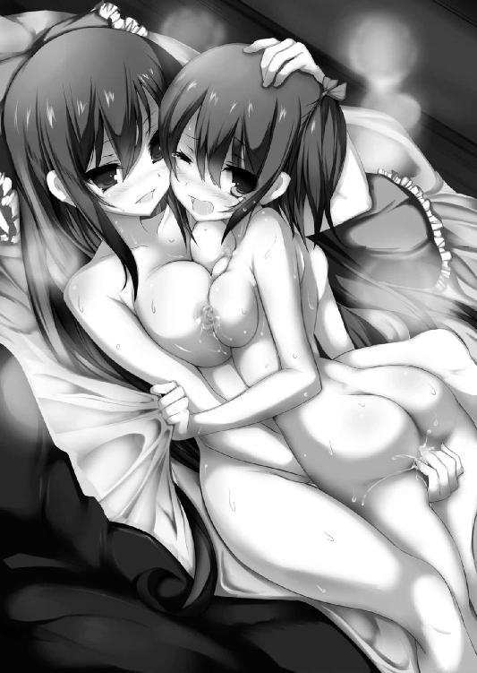

| 灼光のアンチジェネシス (あとみっく文庫) | |
| 天草白 | |
| (2013) | |
灼光の
アンチジェネシス
小説：天草白
挿絵：桐月れおん
あとみっく文庫
※本作品の全部あるいは一部を無断で複製・転載・配信・送信したり、ホームページ上に転載することを禁止します。本作品の内容を無断で改変、改ざん等行うことも禁止します。また、有償・無償にかかわらず本作品を第三者に譲渡することはできません。
二年四組の教室は朝の喧騒に包まれていた。
（本条、今日も綺麗だな......）
藍原夏海の視線の先には、一人の少女の姿がある。
彼女はいかにもお嬢様らしく「ごきげんよう」と挨拶の言葉を告げ、優雅な歩調で自分の席へと進んでいく。
クラスメートたちは自然と彼女の通り道を空けた。
まるで王女を出迎える臣民のように。
ツインテールにした鮮やかな真紅の髪は腰の辺りまであり、美しい光沢を放っていた。
プロポーション抜群の長身。スカートの裾から覗く形のよい脚は、純白のニーソックスに包まれている。
全体的にスレンダーでありながら形よく膨らんだ胸元やくびれた腰元、パンと張った魅惑的なヒップへと続く、女らしい曲線で構成された体つきに、祭礼学園の制服である紫紺のブレザーがよく映えていた。
本条那々姫。
容姿端麗、文武両道、おまけに実家は大金持ちと非の打ちどころのない完璧人間。
そんな絵に描いたようなお嬢様に憧れる者は多く、一説には学園の男子生徒の半分が彼女のファンだという。
......夏海もその一人だったりするのだが。
（本当は話してみたいけど、なんか本条って話しかけづらいんだよな......はぁ）
「どうしたの、夏海？ さっきからボーっとして」
目の前に、いきなり女子生徒の顔が出現した。
「わわっ、真菜!?」
明るく溌剌とした顔立ちは、タイプこそ違うものの那々姫に負けず劣らずの美少女。
柔らかな栗色の髪を、桜の花を模した髪飾りで束ねてポニーテールにしている。
「いつからそこに......」
三瀬真菜は小学校のころからの幼なじみだ。
真面目で融通が利かない、いわゆる委員長タイプ。
「さっきからずーっと。全然気付いてくれないんだもん、夏海」
「ご、ごめん」
「わたしに気付かないくらい、本条さんに見とれてたわけ？」
珍しく、棘のある言い回しをする真菜。
「見とれてたって......」
「最近の夏海、本条さんばっかり見てる」
真菜はなぜか不満げな様子で、ぷうっと頬を膨らませた。
那々姫とは二年生進級時に初めてクラスメートになった。
彼女からにじみ出る近寄りがたいオーラのせいか、新学期が始まって二週間が経つというのに、那々姫とはほとんど口を利いたことがない。
最初は、自分とは違う世界の人間としか見ていなかった。
彼女のことが気になり出したのは、つい最近のこと。
「俺は、別に......」
今も、真菜と話しつつ、ついチラチラと那々姫に視線を向けてしまう。
彼女はそんな夏海（及びクラスの大半の男子生徒）の視線に気付いてもいないのか、悠然と自分の席に向かう。
クラスメートは誰も彼女に話しかけなかった。挨拶する者すら皆無。
自分たちとは違いすぎる存在に対して、ただひたすら敬遠している感じだ。
「まったく男子ときたら、みんな本条さんに見とれて......ぶつぶつ......確かに本条さん、美人だし、成績もいいし、お嬢様だし......でも、だからって夏海まで......」
真菜が口を尖らせてつぶやいた。
美貌という点では真菜も負けず劣らずなのだが、彼女はどちらかというと異性よりも同性に人気があるタイプだ。
所属する剣道部では、後輩の女子生徒から『お姉さま』と慕われているほど。
「えっと、もしかして俺に用でもあった？」
彼女の不機嫌の理由は分からないが、夏海はなんとか話題を変えようと努力する。
「うん、部活の後、居残り練習に付きあってほしいな、って」
「ん、俺でいいの？」
「女子部にはわたしの相手になる人がいないしね。大会も近いから本腰入れないと。県大会二連覇がかかってるもん」
女子剣道部の二年生エース、三瀬真菜。
その実力は完全に他の部員とは次元が違う。最近では、インターハイ経験者だという顧問教師ですら、彼女の練習相手を務められないほど。
女子剣道部はおろか、男子剣道部でも真菜の相手を務められるのは彼くらいだろう。
「夏海が相手なら全力で練習ができるよ、うん」
幼なじみの少女はぐっと握り拳を作る。
彼はわずかに顔をひきつらせた。
「お手柔らかにね。真菜に本気を出されたら、俺も受けきれないよ......」
「うーん......昔は夏海のほうが強かったのにね」
「小学校のときの話だよ、それ」
「ふふ、わたし、夏海に勝ちたくって剣道を続けてきたんだよ。あのころの夏海、かっこよかったな......」
「へっ？」
「あ、ううん、なんでもないっ」
なぜか頬を赤らめる真菜。
彼がキョトンとして首をかしげたところで、
「やけに嬉しそうだなー、三瀬」
前の席の徳野守一が話しかけてきた。
守一は真菜と同じく小学校からの付きあいだ。腐れ縁といってもいい。
とにかく噂話が好きで、何組の誰それが付きあっているだの、別れただの、どこからともなく噂を仕入れては夏海たちに吹聴する。
その情報収集力は驚異の一言。芸能記者も真っ青だ。
一部では『四十八の情報網を持つ男』と畏敬の念を抱かれているとか、なんとか。
「口元がにやけてるぞ。大好きな藍原と二人っきりで練習できて幸せーって感じ？」
「い、いきなり何言い出すの!? わ......わ、わたしは、好きな人ななななんて......」
「またまたとぼけちゃって、本当は藍原と──いでででっ!?」
彼女は顔を真っ赤にして守一の腕をひねり上げる。
「変なこと言わないでよ、もうっ」
「だ、だってお前らって付きあって......ぐげげげげげげげっ!?」
「付きあってないよ！ わ、わたしと夏海はただの幼なじみだもんっ！ 妙な勘違いしないでっっっ！」
「藍原、助けてくれよー。お前の嫁が......ぐぎゃぁぁぁぁぁぁぁぁぁっ！」
「誰が嫁よ、誰がっ！」
さらに強く腕をひねり上げる真菜を見て、夏海は苦笑した。
（あーあ、余計なこと言わなければいいのに）
生真面目な性格だけに、この手の冗談が通じないのだ。真菜には。
まあ、その辺は守一も理解しているのだろうが、それでもつい冗談めかして口出ししてしまうのだろう。
「......!?」
そのとき背筋が粟立つような威圧感を覚え、夏海は振り返った。
那々姫が、ゾクリとするような鋭い視線をこちらに向けて立っていた。
「え、なに......？」
が、それも一瞬のこと。
憧れの美少女はフフンと鼻を鳴らして踵を返した。
腰まで届く真紅のツインテールが可憐にひるがえる。
その一つ一つの動作がモデルのように様になっている。
颯爽と歩く彼女の後ろ姿を、夏海は呆けたように見つめていた。
（本条と会話するチャンスだと思ったけど......やっぱり難しいや）
ひそかにため息をつく。
──だが数時間後、彼は念願かなって本条那々姫と会話を交わすことになる。
血塗られた戦場で。
夏海は、街灯に照らされた薄暗い並木道を歩いていた。
「すっかり遅くなっちゃったな......」
剣道部で真菜の居残り練習に付きあっているうち、夜の八時を回ってしまった。
「しっかし、真菜の奴、腕を上げたな」
彼女と打ちあい続けたせいか、両腕がまだ痺れている。
ここは、夏海が一人暮らしをしているアパートと祭礼学園とのちょうど中間地点だ。
夜は人気がない上に薄暗く、ちょっと物騒な場所。
十年以上前に通り魔が出て、何人もの犠牲者が出たこともある。
考えただけで、どこからともなく通り魔が襲ってくるような気がした。
ぶるっと身を震わせ、周囲を見回す。
人気がまったくなく不気味だ。
「早く帰ろ......」
彼は足早に歩き出した。
静まり返った夜道に、ざっ、ざっ、と足音だけがやけに大きく響く。
不意に──並木道の前方に人影が現れた。
いつからそこにいたのだろうか。月光を背にたたずむ、二つのシルエット。
（なんだ、あれ？ コスプレ？）
奇妙な姿をした二人組だった。
一人は赤紫のローブをまとっていて、ＲＰＧに出てくる魔導師じみた印象を受ける。
もう一人は中世の騎士を思わせる、鈍い灰色の甲冑姿。
彼らと視線が合った、その瞬間。
──世界が、変質した──。
いや、そう感じられるほどに周囲の空気が重くなったのだ。急激に。
息が詰まるような圧迫感で肺が苦しくなる。
全身の肌がチリチリと焼けるようだった。
（な、なんだ......？）
夏海は緊張に体をこわばらせ、二人組を見据えた。
「見つけたぞ、使い魔」
魔導師の格好をした男がつぶやいた。フードから初老の男の顔が覗く。
「エン......ゲージ？」
「探し出すのに苦労したっすね、店長」
灰色の甲冑男がヘラヘラと笑う。こちらは大学生くらい......だろうか。
「店長はよせ」
「へへ、ついバイト先の習慣で。すんません、本多サン」
「苦労したのは儂だけだ。君は何もしとらんだろう。使い魔の存在を感知できるのは、候補者だけだからな」
「まぁ、そうっすけど」
「調べはついている。藍原夏海。祭礼学園二年四組。剣道部に所属。契約している候補者──なし」
「契約？ 候補者？ いったい──」
意味不明の単語の連発に、夏海は首をかしげた。
なぜ、彼らは夏海のことをここまで知っているのか。
言い知れぬ不気味さを感じ、本能的に後ずさる。
背中にジワリと汗がにじんだ。
「今のうちに始末させてもらう。──やれ、樹河」
「へいへい」
樹河と呼ばれた男が前に進み出た。
『始末しろ』という言葉に、嫌な予感が背筋を走る。
こいつら、まさか──。
「分かりやすく一言で言ってあげましょうか」
にやりと口の端を吊り上げる樹河。
「わりーけど......『死んでもらう』」
「えっ？ えっ？」
とっさに相手の言葉の意味が理解できなかった。
ファミレスでメニューを注文するときのような調子で、気軽に告げられた言葉。
まるで魔法のように、樹河の手に長大な武器が現れる。
先端には槍と斧を組みあわせたような刃が備わっていた。
斧槍と呼ばれる西洋の武器。
甲冑と同じ、灰色の刃が月光を反射して煌めく。
「さっさとやれ、樹河」
本多の命令に応じ、樹河が体をわずかに沈め──。
「っ!?」
灰色の弾丸と化して突進する。
人間離れした、信じられないほどの瞬発力。
とっさに横へ跳んで避けることができたのは、剣道で県大会上位クラスの運動能力を持つ彼だからこそだろう。
振り下ろされた斧槍が突風じみた圧力を伴い、すぐ脇を通り過ぎていく。
「へえ、今のをかわしたっすか。生身のくせに運動神経いいっすね」
斧槍を肩に担いで笑う、樹河。
夏海は愕然となった。
枯れ木のように痩せ細った四肢の、どこにこれほどの瞬発力を秘めているのか。
「じゃあわりーけど、次は本気で」
樹河はヘラヘラと笑ったまま、ふたたび斧槍を手に突進。
「ち、ちょっと待って──」
制止の言葉にも灰色の騎士は止まらない。
刃の先端が弧を描き、まっすぐに振り下ろされた。
人間離れした速度で繰り出される斬撃──だがいくら速くても、フェイントも何もない単調な攻撃なら避けるすべはある。
「くっ！」
夏海は攻撃の軌道をいち早く察知し、先ほどと同じく横に跳んでかわした。
凶悪な刃が空を切り、アスファルトの路面にぶつかって鈍い音を立てる。
ドガァァァァァッ！
すさまじい破壊音とともに無数の瓦礫が飛び散った。
路面がバターのように切り裂かれている。恐るべき膂力だった。
（に、逃げなきゃ......！）
こんなものをまともに食らったら、彼の体など真っ二つだ。
背を向けて、一目散に逃げ出そうとした瞬間。
胸元に熱い感触が走った。
「っ......!?」
何が起きたのか、分からなかった。
嫌な予感とともに胸元に目をやる。
「あ......？」
制服の胸元が一文字にざっくりと裂けていた。
あれ、なんで斬られてるんだろう？
──と、どこか他人事のような感想を抱いたとたん、肌が裂けて血が噴き出す。
「がっ......ああっ......！」
数秒遅れて、鋭く沁みる痛みが訪れた。
「あ......がっ......はうぅ......」
指先を動かすだけで、息をするだけで、胸の痛覚神経が爆発しそうだ。痛みに耐えかねて、彼はその場にうずくまった。立ち上がれない。
「かわした......あ、ぐっ......は、はずなのに......!?」
間断なく続く激痛で意識が薄れていく。
「じゃあ止めといきましょうか」
へらへらと笑った樹河が斧槍を肩に担ぎ、近づいてきた。
（殺される......！）
間近に迫った死の恐怖が四肢をすくませる。
あまりにも唐突で、どこまでも理不尽で。
今自分の身に起きていることは現実ではなく、遠い夢の世界の出来事のように思えた。
樹河はもう間近だ。
ひょろりとした身にまとう甲冑が、がしゃ、がしゃ、とうるさく鳴った。
振りかぶった斧槍が鈍い灰色の光を放つ。
（いやだ、死にたくない！）
どす黒い恐怖感が夏海の心を塗り潰していく。
──誰か、助けて！
半ば無意識に祈った、その刹那。
視界の端で赤い光が弾けた。
炎の色によく似た、美しい灼光が夜闇を照らす。
「そこまでよ！ ソレはあたしの所有物なんだから、勝手に殺さないでよねっ」
威勢のいい少女の声が響いた。
「えっ......？」
全身の毛孔が開くような強烈な悪寒。
それが、消えかけていた彼の意識をふたたび覚醒させる。
視界が霞む中、必死で視線を向けた。
赤い輝きの中心にすらりとしたシルエットがたたずんでいた。
「だ、誰......!?」
夏海が、そして本多と樹河がいっせいに動きを止める。
闇夜にはためく、長い真紅のツインテール。
彫像の女神を思わせる、凛とした美貌。
なぜ『彼女』がここにいるのかは分からない。
分からないが、しかし──彼女は確かに、夏海がよく見知った少女の姿だった。
「本条......？」
痛みに喘ぎながら、突然現れたクラスメートに視線を向ける。
「どうして君が、ここに──」
脳裏に浮かんだ疑問は、彼女の姿を見た瞬間、跡形もなく吹き飛んだ。
那々姫は昼間見た制服姿ではなかった。
頭頂からは鋭いツノが、背からは皮膜を備えた翼が、腰からは悪魔を思わせる尾が、それぞれ伸び、どこか夢魔を連想させるシルエットだ。
身にまとう衣装は露出度が高く、胸元が大胆に開いていて深い胸の谷間があらわになっている。
ロケットのように突き出した丸みのある乳房、見事にくびれた細い腰。
ミニスカート越しにも十分に分かる美しいヒップラインからむき出しの太もも、黒いガーターストッキングに包まれたスラリと格好いい脚へと続く下半身のラインは、息を呑むほど扇情的だ。
（本条、す、すごい格好......！）
彼は状況も忘れて那々姫の艶姿に見とれてしまう。
それは二人組の男も同じなのだろう。
「な、なんすか、あんた......」
「ほう、若いのに色っぽいじゃないか」
二人そろって那々姫の全身にねっとりとした視線を這わす。
「──フフン」
欲望の視線を意にも介さず、彼女は小さく鼻を鳴らした。
ツインテールを軽くひるがえし、一歩一歩近づいてくる。
その歩調に合わせて、形よく膨らんだ胸の双丘が、たゆん、たゆん、と上下に弾んだ。
「藍原夏海はあたしが目をつけていたの。あなたたちは手を引きなさい」
「なに？」
「あなたごとき三流の《候補者》にその子はもったいない、って言ったのよ」
「さ、三流だと!?」
「候補者と契約する前の無力な使い魔を襲う──誇りの欠片もない、三流の行動ね」
夢魔じみた美少女は不敵に笑い、夏海の傍までやって来た。
「さっさと消えなさい。コレは──あたしの使い魔になるんだから」
（な、何......？ 何、言って......？）
苦しい息の下で、那々姫を見つめる。
あの二人組の正体を、彼女は何か知っているんだろうか？
「もったいない？ 見ての通り、儂の使い魔に手も足も出ないようだが？」
フードの下で本多が鼻を鳴らした。
彼女が負けじと言い返す。
「やっぱり三流ね。あなたには感じ取れないだけよ。コレの、本当の力を」
（......コレ、コレ、って、さっきから俺のことモノ扱いしてない？）
夏海は苦痛にうめきつつも、そんなどうでもいいことを心の中でツッコんでしまう。
「なるほど、君も《候補者》というわけか。ちょうどいい。こいつも始末しろ、樹河」
「りょーかいっす」
気軽な調子で樹河が灰色の斧槍を肩に担いだ。
那々姫はかがみこんで夏海に声をかける。
「藍原くん、動ける？」
「う......ぐ......」
うなずこうとして顔をしかめた。呼吸をするだけで胸元の激痛がぶり返す。
彼女が夏海の手を取った。
「あの男を──殺しなさい。あなたならできる」
「な、なん......だって!?」
愕然と那々姫を見つめ返した。
「聞こえなかった？ 殺せと言ったの」
彼女の表情は真剣だ。
本気で言っているのだ。夏海の手で樹河を殺せと──。
あらためて背筋がゾッとなった。
そんなこと、できるわけがない。
「バカね。やらなきゃ、やられる。こっちが殺されるだけよ」
こちらの戸惑いを感じたのか、同級生の少女は形のよい眉をひそめた。
樹河が斧槍を頭上で旋回させながら突進する。
速い──。
銃弾を思わせる圧倒的な加速力。
灰色の騎士がまたたく間に距離を詰めてくる。
逃げなければ、と思うのだが、痛みで体に力が入らなかった。
「うう......」
「あなた、死にたいの？ あたしの言う通りにしなさい」
刹那、那々姫の手から熱いものが流れこんできた。
手のひらが触れあっている部分が、溶けてしまいそうなほど熱い。
「これは──」
胸の痛みが魔法のように消えていく。体中がふっと軽くなる。
彼は勢いよく起き上がり、向かってくる灰色の騎士を見据えた。
ブンッ！
大気を切り裂き、振り下ろされる斧槍に手を伸ばす。
無我夢中だった。
がつっ、と柄の中ほどを両手でつかみ、斬撃を止める。
「ぐ、ぅっ......！」
すさまじい圧力で、両足が地面にめりこんだ。
樹河の膂力は人間の限界を超えている。超えすぎている。
そしてそれほどの腕力を持った相手を、夏海は腕力だけで押さえこんでいる──。
（ど、どうなっちゃったんだ、俺......!?）
二つの事実に戦慄を覚えつつ、彼は両腕に力をこめた。
ぎりっ、ぎりっ、と押しあう。
すぐ目の前に樹河の顔があった。
垂れ目がちの双眸に浮かんでいるのは、確かな殺意。
まるで害虫を叩き潰すような気軽さで、彼を殺そうとしている──そんな意志。
気を抜けば、その瞬間に両断されてしまうだろう。
夏海の頬をぬるい汗が伝った。
──力の均衡は、すぐに崩れた。
膂力で勝っていたのは、樹河のほう。
「く、あっ......！」
彼は押さえきれず、数メートルほどの距離を軽々と跳ね飛ばされた。
「藍原くん！」
那々姫が慌てた様子で駆け寄ってくる。
なんとか立ち上がるが、ダメージは少なくない。膝がガクガクと笑い、気を抜くとその場に崩れ落ちてしまいそうだ。
「くっ......パワー負けしたか。正式に契約した使い魔じゃないし......やっぱり、少しくらい魔力を補充しただけじゃ駄目ね」
那々姫が険しい表情でつぶやいた。
「無駄な抵抗はやめてくれねーっすか。できればサクッと終わらせたいんで」
灰色の騎士が斧槍を大きく振りかぶった。
長大な刃が月光を反射して鈍く光る。
来る──。
夏海は無意識に体をこわばらせた。
先ほどと同じ攻撃。
避けたにもかかわらず、なぜか斬られてしまったあの斬撃が来る。
今度は真っ二つにされてもおかしくない。
（今度こそ、殺される......！）
恐怖で全身がこわばった。
手のひらに爪が食いこみ、皮が裂けるほど強く拳を握り締める。
数秒後に訪れるであろう、自身の最期──。
脳裏に浮かんだ不吉な想像を必死で振り払う。
「猛れ、《怨殺の灰刃》」
樹河が斧槍を振りかぶり──。
頭上から真昼のように明るい光に照らされた。
降り注ぐ閃光が灰騎士の足元に着弾し、爆炎をまき散らす。
「なんだ!?」
「この攻撃──魔弾か！」
樹河とは、明らかに別種の攻撃。
まさか新手が──？
戦慄する夏海の手を、那々姫が引っ張った。
「ボーっとしないで！ 今のうちに逃げるわよ」
「はぁっ、はぁっ、はぁっ......」
十五分近く走り続けた後、二人は公園の中に逃げこんだ。
茂みに身を伏せて、周囲をうかがう。どうやら追ってくる気配はなさそうだ。
「傷口を見せて」
那々姫が夏海の胸元に手をかざした。手のひらに淡い赤光が宿る。
（痛みが引いていく......！）
先ほどと同じ現象だった。驚いて彼女を見つめる。
「傷を治すとまではいかないけれど、応急処置くらいにはなるわ。後できちんと手当てしておきなさい」
ばさり、と赤い髪をかき上げ、那々姫が言い放った。
「な、何をしたの」
彼は胸元に視線を落とす。
決して浅くはなかった胸元の傷が、いつの間にか塞がりつつあった。
ありえないほどの回復速度。まるで......魔法のようだ。
「あたしの力じゃないわ。治したのはあくまでもあなた自身」
夢魔の衣装をまとった美少女は、ふう、と大きく息をついた。
疲労しているのかと思ったが、どうも様子が違う。
頬を赤く火照らせ、息遣いも荒くなっていた。
まるで何かに興奮しているような──。
露出度の高い衣装と相まって、やけに艶めかしいクラスメートの姿にドギマギしてしまう。
「魔力を補充してあなたの治癒能力を活性化させたの。さすがに近接戦闘タイプの使い魔ね。回復も早いわ」
「あの......さっきから言ってる使い魔って何のこと？」
確か、さっきの二人組も彼のことをそんな風に呼んでいた。
「バカね、魔王の使い魔のことよ」
「魔王？」
「ちょっと、何も思い出してないの？」
那々姫が唖然とした顔で叫んだ。
「だから何を......」
「《黒き創世》のことも？ １０８の魔王候補と使い魔のことも？ あなたの《属性》とか《能力》とか......そういうのも全部？」
意味不明な単語の連続に返す言葉が見つからない。
「な、何がなんだか、さっぱり......」
頭の中が疑問符で埋め尽くされていた。
彼女は深々とため息をついた。
「まあ魂の覚醒度合いは人によって差があるものね。あたしが一から説明するしかないか......」
那々姫が夏海をまっすぐに見据える。
「これは──魔王を選ぶための戦いなの」
こことは違う世界──魔物たちの住まう異次元世界である魔界。その魔界を統治する超存在《魔王》。
六千年前、神との戦いで魔王の魂は分かたれ、１０８人の人間に封じられた。
長い時間をかけてその魂はふたたび活性化。１０８の魂の欠片を一つに集め、次期魔王を決めるための戦いが世界中で行われている。
一言で言うなら──バトルロイヤル。
「さっきの戦いはその一部、ということね」
（ま、魔王を決める戦い？ えらくスケールが大きな話になってきたぞ......）
まるで小説か漫画のような話に、彼は唖然となった。
「何、あたしの話が信じられない？」
「いや、そんなことはないけど」
「小説か漫画みたいな話だって思ったでしょ」
「ぎくり」
「ぎくり？」
「い、いや、なんでもっ」
「全部本当の話なんだからね」
那々姫にジロリとにらまれ、その迫力にたじろいでしまう。
「で、でも魔王になるために戦うって......何だかピンとこないな」
「ピンとこなくても、戦わなければいけないのよ。負ければ、死ぬ──それがこの戦いのルール。ぐずぐずしていたら殺されるだけ」
「戦わなければ、死ぬ......？ どうして、そんなことを」
「この戦いを勝ち抜いて魔王となった者は絶対の力を手に入れるの。およそ人としてかなわない望みはない、というほどの力をね」
そして勝者の使い魔もまた、同じ恩恵を得ることができるのだという。
だからこそ、どの候補者も命がけで戦うのだ。
己の望みをかなえるために。
「どんな願いもかなう......」
なんとも現実味の薄い話に、彼はため息をついた。
まるで夢でも見ているよう。それもとびっきりの悪夢だ。
「１０８個に分割された魂を宿す人間──魔王の候補者はそれぞれ《使い魔》をパートナーにするの。あなたも見たでしょう、斧槍を持った男がそれ。ローブの男は候補者ね」
「二人一組で戦う、ってことか......」
「で、あなたもその使い魔なわけ」
「えっ、俺が？」
ありえない、と否定の言葉を発しかけたところで、夏海はその言葉を呑みこんだ。
こちらを見つめる少女の真剣な眼差しに、呑みこまざるを得なかった。
何よりも、実際に体験した使い魔とのバトルが──那々姫の言葉が真実だと告げていた。
ありえない。馬鹿げてる。
そう言いたくて、結局は何も言えなかった。
「まだ認めない気？ 現実から目を背けても、どうにもならないわよ」
那々姫から魔力が流れこんできたときのことを思い出す。
同時に、夏海の中に『力』が満ちあふれた。
人間を超えた力が。
それこそが、夏海もまた異能を備えているという証ではないか。
「でも......だって......」
急に全身が震え出した。
戦わなければ殺される？ 自分が普通の人間じゃなくて使い魔？
めまいがする。視界がぐるぐると回る。
今までの日常が全部、音を立てて崩壊していくような気がした。
「ねえ、藍原くん──」
那々姫が顔を近づけた。
月光に照らされた神秘的な美貌にドギマギとなる。
「あたしの使い魔になりなさい」
「ほ、本条の......？」
「使い魔はね、それぞれ魔王候補者と契約することで『力』を発揮するの。あなた一人じゃ普通の人間と変わらないわ。でもあたしと契約すれば『力』が手に入る」
「そんな......いきなり言われても......」
彼は顔を背けた。
「それに使い魔って、要するに戦えってことでしょ？ 俺は、そういうのはちょっと──」
「嫌だなんて言わせないわよ」
その拒絶を、那々姫が途中で遮った。
「契約しようとしまいと、いずれ戦いに巻きこまれるわ。ただ使い魔だというだけで襲ってくる相手だっている。現にさっき襲われたでしょう？」
言い返せずに、彼は押し黙った。
「ううん、さっきの二人組だけじゃない」
魔王候補の少女は、さらに追い打ちをかけるように、
「彼らは気付いてなかったみたいだけど、あなたの能力は強力よ。誰かと契約すれば強敵になる。そうなる前に始末してしまおう──あの二人組の他にも、そう考える候補者はいるでしょうね」
つまり、さっきの二人組以外からも襲われる可能性はある、ということか。
彼が使い魔であるかぎり、これからも命を狙われ続ける──。
（本条が助けに入らなかったら、俺は死んでいた）
夏海に向かって、躊躇なく斧槍を振り下ろした樹河の姿が脳裏をよぎった。
あの灰騎士は間違いなく、彼を殺すつもりだった。
初めて味わったリアルな『殺意』が、彼の中に強烈な拒絶感を呼び起こす。
（嫌だ......そんなの......殺すとか、殺されるとか......）
動悸が激しくなり、荒い息を吐き出した。胸の奥が苦しい。嘔吐感がひどい。
「もう一度言うわ。あたしの使い魔になりなさい、藍原くん。あたしならあなたを使いこなせる」
「俺は......」
「あなたに拒否権はないの。とはいえ──誘いを突っぱねて、一人で野垂れ死にたいなら別だけど？」
那々姫が傲然と告げた。
思考がまとまらない。頭の中がぐちゃぐちゃに乱れていた。
一度に受け止められず、荒れ狂った感情は一気に爆発する。
「そんなこといきなり言われても、わ、分かるわけないだろ！」
「今度は逆ギレ？ いい加減に──」
「う、うるさいっ！」
夏海は怒声を上げると、彼女に背を向けて走り出した。
同級生の少年が逃げ去った後、那々姫は一人で立ち尽くしていた。
すでにその姿は夢魔を思わせる衣装から、祭礼学園の制服に戻っている。
「もうっ、このあたしが誘ってるのに逃げるなんて」
憤然とひとりごちた。
制服の胸元に手を入れ、小さなペンダントを取り出す。黄金の鎖につながれた真紅の宝石だ。
「せっかくいい相棒を見つけたと思ったんだけどな......」
美しい宝玉を見つめ、ため息を漏らした。
藍原夏海の使い魔としての能力は申し分ない。
彼女の期待通り、いや期待以上のものを秘めている。おそらくは最強クラスの《白兵型》だ。
だが、肝心の本人にやる気がなくてはどうしようもなかった。
戦わなければ生き残れない。
殺さなければ殺される。それが魔王を決める戦い──《黒き創世》における絶対的なルール。
「自分が生きるためには、敵を殺すしかないじゃない」
那々姫にとっては自明の理。考えるまでもないことだった。
なのに、彼はそういう思考に至らないらしい。
挙句の果てに、逆ギレして逃げ出すとは──。
反吐が出るほど甘い考え方。
那々姫たちがいるのは、紛れもない戦場なのだ。
「そんなんじゃ生き残れないわよ、藍原くん......」
いっそのこと、彼をパートナーにするのは諦め、他の使い魔を探したほうがいいのだろうか？
だが、やはり惜しい。
第一、あれほどの潜在能力を秘めた使い魔を新たに見つけられるかどうか。
この戦いにおいて、魔王候補者は基本的に戦闘能力を持たない。戦う役割を担うのは、あくまでも使い魔である。
いまだ使い魔を持たない那々姫は丸腰同然だった。
なんとしても、藍原夏海というパートナーを手に入れたい。今日のように襲われて、彼が使い魔として覚醒しないうちに殺されてしまう危険性だってある。
「早くしないと......」
彼女が焦燥感を覚えた、そのとき。
じゃり、とかすかな足音が聞こえ、ハッと振り返った。
全身に感じる、悪寒にも似たプレッシャー。
自分と同種の存在だけが放つ、独特の空気だった。
「さっきの攻撃は、やっぱりあなたたちだったのね」
前方の闇を見据えて告げた。
闇の中からにじみ出るようにして、二人の少女が現れる。
黒く艶やかな髪を長く伸ばした、眼鏡の少女。
肩のところで綺麗な黒髪を切りそろえた、小柄な少女。
那々姫はこの二人を知っていた。
《魔弾使い》の霧雨姉妹──。
「藍原夏海を手駒に引き入れることはできなかったようだな、本条」
眼鏡の少女──姉の千歳がクールな口調で告げた。
「......バカね。あの子は必ず、あたしのものにするわよ」
魔王候補者は、使い魔の存在を感知することができる。
ただし感知するためには、その使い魔の魂がある程度覚醒していることが必要だ。
夏海の中に宿る使い魔の魂は最近──おそらくは数日前──に覚醒の度合いを強め始めた。
彼女も、夏海が使い魔であることに気付いたのは今朝のことだ。
夏海が一人になるのを待って話そうと、彼のアパートへ向かうところだった。
が、その途中で戦いの気配を感じ、戻ってきたのだ。
おかげで間一髪、樹河に襲われている彼を救い出せたわけだが──。
「私たちが魔弾で彼らの気を逸らさなければ、今ごろ死んでいたな。君も、あの藍原も」
「......助けてくれてありがとう、とでも言っておけばいいのかしら」
「まさか。礼は無用だ」
千歳は無表情に首を振る。
「私は他の候補者に君を倒されたくなかっただけ。本条那々姫を打ち倒すのは──この霧雨千歳なのだから」
「相変わらずプライドが高いわね」
那々姫は、傲然と胸を張る千歳から、その背後に寄り添うもう一人の少女へと視線を移す。千歳の妹、百香だ。
「あ、あの、そのっ......」
彼女の視線を感じたのか、百香はサッと千歳の背中に隠れてしまった。
ビクビクした様子でそっと背中から顔だけを出し、こちらをうかがう。
童女のように可愛らしい仕草。
「......姉妹で性格が正反対なのも相変わらずね。そうやってお姉さんの背中に隠れてばかり」
「隠れているのは君も同じだろう？」
今度は千歳が挑発した。
「お姉さんが一人で戦って。君は安全なところに隠れていただけ。一年以上前から、ずっとそうだったと聞いている」
「......姉のことは口にしないで」
那々姫は眉根を寄せた。
「しかし、隠れてばかりだった君が自ら出てくるとはな。どういう心境の変化だ？」
「口にするな、と言ったわ。二度言わせないで」
「ふふ、失礼」
嘲笑混じりにうなずく千歳。
「あたしはもう逃げない。使い魔を見つけた以上、いつまでも逃げていても仕方がないでしょう。これからは攻勢に出るわ」
那々姫はどこまでも不敵だ。
「楽しみだ。ようやく君と雌雄を決することができる」
「今のうちにあたしを殺さないと後悔することになるわよ」
「私は君を『殺したい』わけじゃない。『打ち倒したい』んだ」
千歳の、眼鏡の奥の瞳が鋭い光を放った。
「強気な台詞だこと。あなたがあたしに一度でも勝ったことがあったかしら？ 勉強でも、スポーツでも」
那々姫が勝気に言い放った。
「勝つさ。私自身の誇りにかけて」
千歳が負けじと言い返す。
「君を倒し、他のすべての候補者を倒し──私が魔王として君臨する。そして百香と二人でずっと生きていく。誰にも邪魔されずに......」
候補者同士の戦いに生き残った者が、魔王として選ばれる。その絶大な力はあらゆる望みを可能にする。
そう。千歳が言ったように、姉妹二人だけで永遠に生きていく世界を創造することも可能だろう。
「負けられないのは、あたしも同じよ」
無論、那々姫にだって負けられない理由はある。
「決着はいずれ──さあ行こう、百香」
千歳が百香を伴い、背を向けた。
最後に一度だけ振り向き、
「いくら魔力が強くても、使い魔がいなければ宝の持ち腐れ。早く使い魔を手に入れることだな」
街灯を反射して、千歳の眼鏡が一瞬鋭い光を放つ。
「でないと──死ぬぞ。私以外の者に殺されては困る」
那々姫は動じなかった。
「使い魔は必ず手に入れるわ。そのときには、あなたを真っ先に殺してあげる」
翌日。二年四組の教室。
那々姫が教室に入ると、クラスメートたちはいっせいに顔を背け、道を空けた。
まるで腫れ物に触るかのような態度。
那々姫自身は慣れているのか、気にしていないのか、「ごきげんよう」と挨拶をしてから開いた道を悠然と進んでいく。
相変わらず他のクラスメートから距離を置かれている......というか、露骨に敬遠されていた。
嫌われているわけでもなく、自分たちとは違う世界の人間だという認識なのだろう。
その様子を見ている夏海も彼らと同じだった。
容姿端麗、文武両道、実家は大金持ち──と非の打ちどころのない完璧な美少女に対して、どうしても気圧されてしまう。対等に話そうという気力を削がれてしまう。
遠くから眺め、憧れるだけの高嶺の花。
彼にとって本条那々姫とはそういう存在だったのだ。
そう、昨日までは......。
「今日も本条さんに見とれてたでしょ、夏海」
隣から真菜が話しかけてきた。
「え、いや、その......」
「もうっ、最近は毎日本条さんばっかり」
「な、なんか怒ってない、真菜？」
「怒ってないよっ」
「そうかなぁ......」
どう見ても怒っているようにしか見えない。
真菜はなおも不満げに口を尖らせた。
「夏海、最近様子がおかしいし......もしかしたら、ほ、本条さんのこと......」
「えっ？」
「な、夏海はその、本条さんがす、すすすすすす好き......なの？」
幼なじみの美少女はさっきまでの怒りから一転、急にモジモジとしてたずねた。
恋愛がらみの話になると、彼女は本当に初心だ。
普段の明るさや歯切れのよさが嘘のように、しどろもどろな口調になる。
「た、た、確かに本条さんは美人だし、成績もいいし、実家はお金持ちだし......や、やっぱり、男子はああいう女の子が好きなんだよね......はぁ」
真菜はなぜか一人で落ちこんでいるようだ。
「いや、なんか誤解してるみたいだけど、俺は別に本条とは──」
「藍原くん、ちょっといいかしら」
夏海の声を遮ったのは、当の那々姫だった。
振り向くと、那々姫がこちらに歩いてきて、二人の間に割りこむ。
ツインテールにした紅の髪がふわりとなびき、甘い香りが漂ってきた。
「本条さん......！」
真菜がキッとした顔で那々姫をにらんだ。
「あ、昨日はありがとう......その、いろいろと」
昨日言いそびれた礼を言うと、彼女は腕組みをしてフフンと鼻を鳴らした。
「堅苦しいことはいいわ。あたしたちはこれからずっと一緒なんだから」
「ず、ずっと一緒って......」
夏海はドキッとして言葉を詰まらせる。
......まあパートナーとして一蓮托生という意味なのだろう、たぶん。
夏海はまだ彼女のパートナーになることを承諾したわけではないが。
「ずっと一緒って、どういう意味よっ!?」
隣で真菜が悲鳴混じりの叫び声を上げた。
（あ、やっぱり誤解された）
「話があるんだけど」
真菜を無視して、那々姫が夏海に耳打ちする。
「話って......」
「あたしたちのこれからについて」
ますます真菜に誤解されそうな言い回しだった。
案の定、彼女はムッとした顔で夏海をにらむ。
「......いつの間に本条さんとそんな仲になったの、夏海」
「ち、違うよ。誤解だって」
夏海は言葉に詰まった。那々姫との関係を説明するためには、昨日の出来事を話さなければならない。
「ほら、さっさと来て。ここじゃ話しにくいし、続きは屋上で」
「夏海が嫌がってるみたいだけど」
真菜が夏海たちの間に割りこんだ。
「あら、そんなことないわよね？ 藍原くん」
那々姫は、いかにもお嬢様らしい穏やかな微笑を浮かべ、夏海に問いかける。
にっこりとした笑顔がこの場合逆に恐ろしい。
すぐ傍で、幼なじみの少女の怒りゲージが急上昇するのを感じた。
「えっと、だから」
なぜか険悪なムードの二人に、夏海は返す言葉を失う。
今度は真菜がひきつった笑みを浮かべて、彼に問いかける。
「嫌がってるよね？」
「嫌がってないわよ」
夏海よりも先に、那々姫が言い放った。
「ううん、嫌がってる」
「ないわよ。強情ね」
「むむむ」
「フフン」
バチバチと視線の火花を散らし、見つめあう二人の美少女。
その間に挟まれた夏海は、背中からじわりと変な汗がにじんでくる。
「あらあら、藍原くん大人気ね～」
辻賀耶胡桃がにこやかな顔で話しかける。
童顔に眼鏡をかけていて、身長は夏海の胸の辺りまでしかない。一見して中学生と見間違えそうなほど愛らしい女教師だ。
「いいなー、朗らかな青春の一ページって感じよね～」
「どちらかというと一触即発です」
「藍原くんがはっきりしないからじゃないかなー。どっちが本命かなー？」
「本命も何も......」
「ん、もしかして二股～？ まあ学生時代はそういう爛れた関係もありなのかしらねー」
興味津々といった顔で身を乗り出す胡桃。
「ご、誤解を招くような表現はやめてください。そういう話じゃないですからっ」
「あらあらー？」
焦る夏海を、ロリ顔の女教師はにこやかな顔のまま見つめる。
「くそ、なんで藍原ばっかり。俺だってツンデレお嬢様とか幼なじみの美少女から一方的にアプローチされて、それでも本人はまったく気付かない鈍感で、本人を尻目に美少女同士が修羅場ってるとか経験してみてぇよ......みてぇよ......」
守一まで会話に加わってきた。
今にも血の涙を流しそうな、凄絶な表情だ。
「羨ましくなんて......羨ましくなんて......うう」
「泣かないでよ......」
「はいはい、徳野くん、飴あげるから落ち着いてねー」
どこから取り出したのか包み紙に入った飴を差し出す胡桃。
「小学生じゃないんだから......」
「もぐもぐ......ううう」
守一は泣きながら飴を舐めていた。
「うるさいうるさーいっ。今は本条さんとわたしのピリピリバチバチ緊迫修羅場なんだからっ。水差さないでよっ」
真菜がキッとした顔で振り返る。
「......藍原くんの周りって騒がしい人ばかりね」
那々姫がため息をついた。
それに関しては夏海も同感だ。
「これじゃ落ち着いて話もできないわ。後にしましょう」
那々姫は背を向けて去っていった。
昼休みのチャイムが鳴るやいなや、夏海は那々姫に屋上まで連れていかれた。
連れていかれた、というより拉致されたというほうが正しいかもしれないが。
ちょうど真菜はクラス委員長の仕事で教室から出ていたのだが、もし彼女がいたらまたひと悶着あったことだろう。
「ここなら邪魔は入らないでしょ。さあ返事を聞かせてもらいましょうか」
「えっ、返事って？」
「昨日の返事に決まってるでしょう！ あなた、さっさと帰っちゃったじゃない」
彼女はずいっと詰め寄った。
「わざわざ屋上まで来なくても......」
「彼らに聞かれてもいいの？」
確かに教室にいると、真菜が事情を聞いてきたり、守一が事情を聞いてきたり、胡桃が事情を聞いてきたり......落ち着いて話をするどころではない。
かといって、屋上で二人っきりというシチュエーションも、これはこれで緊張する。
「で、どうなのよ、藍原くん」
「か、顔近いよ、本条」
互いの吐息が触れあいそうなほどの、至近距離。
那々姫の美しい顔が間近にあった。
思わずドギマギしてしまい、胸の鼓動が高まる。
「今度は昨日みたいに逃がさないわよ」
「だから顔近い......ってば」
さらに彼女の顔が接近する。
もう少しでキスしてしまいそうなほどの距離。
さっきも感じた、甘い匂いが那々姫の全身から漂ってきた。
シャンプーの香りなのか、あるいは女の子の体臭なのか、彼にはよく分からない。
「観念してあたしの使い魔になりなさい、藍原くん」
「俺は......」
夏海はギュッと拳を握り締めた。
もちろん死にたくなんてない。みすみす殺されるつもりもない。
だけど──いくら相手が自分の命を狙ってくるからといって、戦いなんて御免だ。
夏海はうつむき、険しい顔で足元をにらみつけた。
「迷う理由が分からないわね。他に選択肢はないはずよ」
那々姫が言葉を重ねる。
「だ、だって殺しあいなんでしょ？ 俺には......できないよ」
「フフン、甘いわね」
嘲笑されて、カチンときた。
「何が甘いんだよ。殺しあいなんて最低だ！」
「殺さなければ、殺される。戦わなければ生き残れないわ」
魔王候補の少女はきっぱりと告げた。
「あなたは使い魔として高い能力を秘めている」
那々姫の話によれば、使い魔としての能力は《意志の力》の強弱によって決定されるのだという。
意志が強ければ強いほど、魂に秘められた力をより多く引き出せる。
そして使い魔が持つ《意志》の強さを、魔王候補者は感じ取ることができるそうだ。
「あなたの《意志》は強い。樹河ごとき敵じゃないわ」
「か、買いかぶりすぎじゃないかな？ 俺、昨日はフルボッコだったし......」
「あなたが戦う《意志》を固めていないからよ。だから昨日は、格下の樹河にすら手こずったの」
つまり、夏海が戦う決意を持ち、『力』を振るうことができれば──昨晩、手も足も出なかった相手も問題にならないというのだろうか。
「だけどその能力を発揮するためには、パートナーである魔王候補者が必要なの」
使い魔は単独では力を発揮することができない。
候補者から魔力の供給を受けて初めて、存分に力を振るうことができる。
これも昨日聞いた説明だった。
「このまま一人でいたら──死ぬわよ、藍原くん」
「殺しあいをするつもりはないよ、俺は」
夏海は言うなり、彼女から背を向けた。
いい加減にうんざりだった。
那々姫の高飛車で一方的な態度も。
戦いだの、殺しあいだのといった話題にも。
「ちょっと待ちなさい、藍原くん！」
那々姫の言葉を無視し、夏海は屋上から走り去った。
殺さなければ、殺される。
それがこの戦いにおける、非情な現実。
「そんなこと言われても、『はい、そうですか』ってうなずけないよ......」
昨日、樹河や本多に襲われたときのことを思い出して、夏海はため息をついた。
理屈で分かっていても、感情は簡単に割り切れない。
夏海は苛立ちながら階段を一気に駆け下り、三階の廊下を走っていく。
「廊下を走るのは校則違反だぞ、藍原夏海」
背後から、いきなり声をかけられた。
振り返ると、二人の女子生徒が立っている。
「あ......」
顔立ちがよく似ているのは、二人が姉妹だからだ。
長い黒髪に眼鏡をかけたほうが姉で、おとなしそうなショートヘアは妹。
直接話したことはないが、夏海はこの二人のことを知っている。校内でも有名な姉妹だった。
「......霧雨さん」
「おや、私のことを知っているのか」
「生徒会長の名前くらい知ってるよ」
祭礼学園の生徒会長を務める二年生の霧雨千歳と、書記で一年生の霧雨百香。
那々姫や真菜と並び、校内の人気を三分する美少女姉妹だ。
「ちょうどいい。君に話がある」
有名人姉妹が彼に何の用だろうか。
姉の千歳とはクラスが違うから接点もないし、妹の百香に至っては学年自体が違う。
千歳は値踏みするように夏海の全身をじろじろと見た。
「な、なに？」
「ふん、細身だがなかなか筋肉質だな」
いきなり夏海の二の腕に指を這わせる美少女生徒会長。さらに首筋や胸板も撫で、ふうっ、と軽く吐息を吹きかける。
「わわわっ」
夏海はドギマギとして体を硬直させた。
千歳は手を離し、腕組みをした。眼鏡の奥の瞳がまっすぐに彼を射抜く。
「うっ......」
霧雨姉妹は那々姫や真菜に勝るとも劣らない美貌の持ち主だ。
勝気な那々姫や明るい真菜とは違い、千歳はニコリともしないクールな顔立ち。
ふと彼女の胸元に目がいった。
腕組みをしたその腕の上に豊かに実った左右のバストが迫力たっぷりに乗っかっている。
制服の胸元がパツンパツンになっていて、今にも内側から弾けてしまいそうなほど。
（うわ、すごいな......）
那々姫も標準以上の巨乳でＤカップくらいはあると思うが、千歳はさらにワンサイズ以上大きいのではないだろうか。
美しい生徒会長の息遣いに合わせて、たわわな膨らみが、たぷん、たぷん、と緩やかに上下する。
あまりジロジロ見てはいけないと思いつつも、魅惑的な乳揺れから目を離せない。
「ん、どうかしたか？」
千歳は無表情に問いかけ、それから彼の視線に気付いたのか、小さくうなずいた。
「なるほど。私に欲情したか」
「よ、欲情って」
「性的な目で私のバストを見ていた」
「み、見てないよっ」
（......本当は見てたけど）
「男なんてみんな同じだな。やれやれ」
違う、と否定しきれないのが悲しい。
というか、ほとんど凶器といってもいい千歳のバストを前に、無反応でいられる男子生徒などいないだろう。
「冗談だ」
千歳は冷然と夏海を見据える。
しかしその言葉とは裏腹に、どう見ても彼を糾弾しているようにしか思えない。
夏海は慌てて千歳から百香に視線を移した。
小柄な上に童顔のため、実年齢以上に幼く見える。
制服の胸元のリボンは青色をしており、百香が一年生であることを示していた。
「あっ......！」
目が合ったとたん、百香は千歳の腕の袖をギュッとつかみ、彼女の背中に隠れてしまった。
臆病な小動物を思わせる仕草。
百香はそっと顔だけを覗かせ、警戒するようにこちらを見ている。
「え、えっと、その......」
夏海が見つめ返すと、たちまちオドオドと視線をさまよわせた。
人見知りする子なのだろうか。いや、それにしても、
（俺、嫌われるようなことしたっけ......？）
さすがに初対面でこれでは、ちょっと傷ついてしまう。
「大丈夫だ、百香」
千歳が背後を振り返った。
今までのクールな顔つきが嘘のように柔和な微笑を浮かべる。
「彼はまだ敵じゃない。だから......心配するな」
「百香のこと、いじめたりしない......？」
「しないしない。もしお前をいじめる者がいたら、私が守ってやるさ」
「......うん、お姉ちゃん♪」
百香の顔がパッと輝く。
可憐な微笑を浮かべ、姉の腕にしがみついた。
「まだ......敵じゃない？」
奇妙な言い回しに、夏海は首をかしげる。
千歳はもう片方の手を伸ばし、妹の頭を愛おしげに撫でる。
仲睦まじい姉妹といった雰囲気だ。
「あ、それで俺に話って──」
千歳にたずねようとした、そのときだった。
ゴゴ......ゴゴゴ......！
廊下がかすかに揺れて、重苦しい振動音が聞こえてきた。
腹の底にズンと響くような不快な音。
「なんだ？」
夏海は怪訝に思って周囲を見渡す。
地震だろうか、小刻みに床が揺れ続けている。
「きゃっ......」
バランスを崩した百香が転倒しそうになった。
「危ない！」
夏海はとっさに手を伸ばし、彼女の体を支える。
「大丈夫？」
「ひっ」
百香の小柄な体がこわばっていた。
夏海がちょうど彼女の腰の辺りを抱いた格好だ。
とっさのことだったとはいえ、セクハラじみた体勢だった。
「あ、ごめん......」
「い、いや......」
可憐な少女の顔に恐怖の色が浮かんだ。
可愛らしい童顔からは血の気が引き、青ざめている。
ただならぬ様子に夏海は戸惑うばかり。
「ち、ちょっと？」
「いやぁぁぁぁぁぁぁぁぁぁぁぁぁぁぁぁっ！」
いきなり百香が絹を裂いたような悲鳴を上げた。
あまりにも過剰な反応に、夏海は呆然としたまま動きを止めてしまう。
「あの、霧雨さん......？」
「百香を放せ！」
千歳が血相を変えて叫んだ。
「あ、えっと」
夏海は驚きと戸惑い混じりに霧雨姉妹を交互に見つめる。
「放せと言ってるんだ！」
「っ......！」
彼女の全身からまるで突風のような圧力が吹きつけてきて、夏海はよろめきながら後ずさった。
千歳の様子が先ほどとはまったく違う。
クールな雰囲気はもはや微塵もなく、全身から目に見えるほどの怒りの波動がオーラとなって吹き上がっていた。
（霧雨さん......!?）
戸惑いながら百香に視線を移すと、彼女は先ほど以上に怯えた様子で、姉の背後に隠れている。
夏海とは目線を合わせるのも嫌だ、といった感じだ。
ゴゴゴゴゴゴゴゴゴッ！
ふたたび振動音が聞こえた。
さっきよりも音が大きい。しかもその音に交じって、かすかな悲鳴のようなものまで聞こえてくる。
音が聞こえてくるのは、すぐ真下。二階だ。そこで何かが起こっている。
（まさか──）
嫌な予感を覚え、夏海は階下に向かった。
──二階の廊下は阿鼻叫喚の地獄と化していた。
窓ガラスは軒並み割れており、壁や床、天井には無数の亀裂。
その破壊を為した者は、前方で暴れる二人組だ。
灰色の騎士甲冑をまとった樹河と、魔導師のようなローブ姿の本多。
「あいつら、どうしてこんなところに......!?」
樹河が巨大な斧槍を縦横に振るった。
そのたびに血しぶきが舞い、生徒たちが苦鳴を上げる。
「や、やめろっ......！」
「お、出てきたっすか」
灰色の騎士が夏海に視線を向けた。
自身と夏海の間にいる生徒を一人、また一人と斬り伏せ、近づいてくる。
「どうして、こんなことを！ みんなは関係ないだろう」
「君をあぶり出すには、これが一番手っ取り早いからな」
フードの下で本多が楽しげに笑う。
「制服を見れば、君が祭礼学園の生徒だということは分かる。あとは適当に暴れていれば、いずれ君に行き当たる」
罪悪感など微塵も覚えていない顔。
（こんな連中を野放しにしちゃ、駄目だ）
夏海をおびき寄せるためだけに無関係の人間まで傷つける本多たちに対し、あらためて怒りがこみ上げる。
「今度こそ始末させてもらうっすよ」
樹河の双眸が殺意の輝きを放った。
「くっ......」
鋭い眼光に射すくめられて全身がすくむ。
互いの距離は五メートルを切っていた。すでに敵の攻撃射程距離だ。
樹河を止めたくて無我夢中で飛び出してしまったが、まともに戦っても彼にかなわないのは昨日実証済み。
（どうする......！）
夏海は自問しつつ身構えた。
こみ上げる恐怖が、吹きつける威圧感が、四肢を重くする。
ヘビににらまれたカエルというのは、きっとこういう心境に違いない、と心の片隅で妙に冷静なことを考えてしまう。
と、そのときだった。
──グゥゥゥゥゥオオオオオォォォォォォォォォォォォンッ！
突然、重低音の咆哮が大気を震わせた。
「おおおお......オォォォォ......が、ガアァァッ......！」
声がしたほうを見ると、本多が苦しげに胸をかきむしり、床にうずくまっている。
「な、なんだ......!?」
そして──その姿が変貌した。
腕が、足が、異様なほど伸び、胴体が内側から爆発するように膨張する。
赤紫色のローブが弾け散った。
四肢はうねる触手となり、胴体はいびつな円柱形へと変化していく。
「化け物......！」
夏海は眼前に現れた異形を愕然と見つめた。
「えっ、本多サン......!?」
驚いているのは、樹河も同じらしい。
本多は──いや、ソレはもはや人の原型を留めていなかった。
全体的なフォルムはどこかウツボカズラに似ている。
ただしその全身からは無数の触手がうねり、体長は三メートル近くある。
怪物の振るう触手が凶悪な鞭となって、四方を薙いだ。
逃げまどう生徒たちを切り裂き、跳ね飛ばす。
「ほ、本多サン、どうしちゃったんすか......ね、ねぇ」
どうやら使い魔である彼にとっても、目の前の出来事は異様な事態らしい。
「グォォォォォォォォォォォォンッ！」
怪物は樹河の言葉も無視して、暴れ回った。
触手が振るわれるたび、負傷者が次々と増えていく。
「くそっ、やめろ！ やめろぉっ！」
夏海は怪物に向かっていくが、触手に胸元を打たれて吹っ飛ばされた。
「ぐっ......」
とっさに体をひねったため、触手の先端がかすっただけだが、それでも息が詰まるような衝撃に体がふらつく。
「藍原くん、無事!?」
屋上から駆けつけたのか、那々姫が夏海のもとへ走ってきた。
「俺よりみんなが......」
傷つき、倒れている生徒たちを見て、彼女は一瞬顔をしかめた。そして怪物に目をやると、
「あれは──魔王の魂に呑まれて理性を失っているわ」
「魂に呑まれる......？」
「魔王の魂は純粋な悪のエネルギーの塊よ。制御できなければ、その力に身も心も呑みこまれて──」
魔物に変わる、というわけか。
「ああなったら、もう人間じゃない。ただ破壊衝動のままに動くだけの、怪物よ。放っておけば被害者は増え続けるわ。命を失う人だって......」
「そ、そんな！」
「あたしと契約しなさい、夏海。他に手はないわ」
魔王の魂を秘めた少女は、まっすぐに夏海を見据えた。
彼は答えを返すことができなかった。
（俺は、どうすればいいんだ）
視界がぐるぐると回る。
殺しあいは絶対に嫌だった。
だけどこうして立ちすくんでいるうちに、無関係の人が殺されようとしている。
ダメだ。分からない。答えが出せない。
「......いいわ。それなら仮契約という形でどう？」
「仮......契約？」
那々姫はブレザーの胸元に手を差し入れた。制服の内部から赤い光があふれる。
抜き出した、彼女の手のひらには真紅に輝く指輪が乗っていた。
「魔王の魂の一部を取り出したわ。正式な契約には及ばないけれど、これを使えばある程度は使い魔としての能力を引き出せるはずよ」
那々姫が指輪を差し出す。
彼女が何を言っているのか、半分も理解できなかった。
それでも夏海は半ば反射的に手を差し出し、指輪を受け取る。
と、そのときだった。
「魂......モラ、ウ......」
しゃがれた声とともに、怪物の触手が彼に向かって繰り出された。
「なに......!?」
不意を突かれて、夏海は反応できない。
触手は鞭のようにしなりながら、すさまじい速度で夏海に迫り──。
「危ない！」
どん、と横から突き飛ばされ、彼は間一髪で難を逃れる。
「きゃぁぁぁぁぁぁぁっ......！」
次の瞬間、悲鳴が響き渡り、夏海はハッと顔を上げた。
枝状の触手が那々姫の両腕に巻きつき、空中に引っ張り上げている。
たちまち体をＴ字状に固定され、宙づりにされる那々姫。
腕や足、首筋や胸元、腹部に腰回りと、体中の至るところに巻きついた触手がギリギリと締めつける。
「あっ......ぐぅぅぅぅっ、い、痛、い......！ ああっ！」
彼女は真紅の髪を振り乱して、苦痛の叫びを上げた。
「本条！ ......ぐっ！」
那々姫を助けようと突進する夏海だが、別の触手に邪魔され、そのまま廊下の端まで弾き飛ばされた。
「げほっ、げほっ......」
内臓をかなり痛めたらしく、咳きこみながら血を吐き出す。
ダメージがひどく、体に力が入らなかった。
壁に寄りかかったまま上体を起こすのが精いっぱいだ。
触手の動きはなおも止まらない。それどころか嗜虐心を刺激されたかのように、さらに三本、五本と那々姫の体を這い回る。
どろっ、どろりっ......どろぉぉぉぉぉぉぉっ......ぬちゃっ、ねちょぉぉっ......！
触手の先端から垂れ落ちるヌメヌメとした粘液がブレザーを濡らし、紫紺の生地が那々姫の肌にぴっちりと貼りついた。
女子校生とは思えないほど成熟した体のラインがはっきりと浮き出る。
二本の触手がぬるりと蠢き、たわわな左右の乳房に向かった。
円錐形に膨らんだ双丘の円周部分に沿って巻きつく。
「くぅぅぅぅ、き、気持ち悪い......離して、ぇ......んんんっ！」
那々姫が眉をひそめて喘いだ。
彼女にさらなる屈辱を与えようというのか、左右の乳房に一本ずつ巻きついた触手が、ぎゅうぅぅぅぅぅぅぅぅぅぅぅぅぅぅっ、と絞り上げた。
美しいバストラインが無残にひしゃげ、淫靡な形に姿を変える。
「はぁぁぁぁっ、あっ、い、痛い......やめてぇぇぇっ......！」
鋭敏な乙女の膨らみを容赦なく搾乳されて、那々姫が悲鳴を上げた。
触手の責めはこれだけでは終わらなかった。
男根を思わせる赤黒い先端部が伸びていき、制服の襟元や裾から内部へと潜りこむ。
「や、やめてぇ......やめなさいっ......ん、くうぅぅぅ、はぁんっ！」
魔王候補の美少女は顔をしかめ、悲痛な声で叫んだ。
ヌメヌメとした触手が肌を這い回るのは、やはり相当気持ちが悪いのだろう。
なんとか触手を制服の外に追い出そうと上体を必死でよじっている。
触手によって拘束されている胸元が、さらに絞り上げられ、ぷるん、ぷるん、と淫靡にバウンドした。
「ほ、本条......」
ふらつきながら立ち上がったものの、壁に寄りかかったまま、夏海は動けなかった。
怪物に淫らな責めを受ける憧れの少女を、呆然と見つめることしかできなかった。
「離しなさいよ、このっ......ああぁっ、くぅ......んっ」
那々姫の抵抗も空しく、触手はビクともしない。
それどころか、彼女をいたぶるように、別の触手が制服の上衣をたくし上げる。
激しく体をよじったためか、淡いピンク色をしたブラジャーはカップがズレてしまっており、形のよい乳房がほぼむき出しの状態でリズミカルに揺れる。
「やぁっ、見ちゃ、だめぇ......！」
驚くほど白く、丸い乳房だった。
上質のマシュマロのようにプルプルと揺れ、薄いピンク色をした先端部がかすかに震えている。
粘液にまみれた触手の先端部が美しい乳首を突き、ギュッと押し潰す。
亀頭を連想させる赤黒い先端からは、間断なく白濁色の粘液が出ており、すでに左右の乳房はヌルヌルの粘液まみれで、いやらしい光沢を放っていた。
「んっ、ふあぁぁっ......！」
ハアハアと喘ぐ那々姫の姿があまりにも艶っぽくて、夏海はその場に立ち尽くしたまま。
美少女の刺激的な痴態に、頭がカーッと灼熱する。
「藍原くん！ う、くぅぅぅっ......」
那々姫の声にハッと我に返った。
（助けなきゃ──）
いたぶられる彼女の姿に魅入られ、薄れていた理性を慌てて呼び覚ます。
力の入らない下肢を叱咤し、一歩一歩怪物に歩み寄った。
「本条、今行く！」
叫んだとたん、怪物の触手がすさまじい勢いで伸びてくる。
避ける間もなく夏海のみぞおちを直撃した。
「が、ぁっ！」
腹部に鉄球を撃ちこまれたような圧迫感。
胃液が逆流した。
そのまま数メートルも吹き飛ばされ、背中から廊下に叩きつけられる。
「はぁ、はぁ、はぁ......」
それでも夏海は脇腹を押さえながら、ふたたび立ち上がった。
腹部に激痛が走る。今のでアバラの二、三本は折れたか、最低でもヒビくらいは入っているだろう。
「化け物め......！」
人間の立ち向かえる相手ではない。
対抗できるとしたら、それは使い魔だけ。
「いやぁぁぁぁっ......！」
なおも新たな触手の群れが那々姫の周囲でうねり、瑞々しい半裸体を嬲ろうと殺到する。
その光景に、夏海の中で何かが弾けた。
「迷うのは後だ。今は、みんなを守るために──戦う」
胸に浮かんだ決意を告げた、その瞬間。
握り締めた拳から、突然鮮やかな赤光があふれ出した。
「これは......!?」
右手を開くと、先ほど那々姫から渡された指輪がまぶしい輝きを放っている。
指輪から、熱い何かが流れこんでくる。
昨日と同じ感覚。
あのときは何が何だか分からなかったが、今なら分かる。指輪から流れこんでくる大量の魔力が、夏海の中の何かを起動させ、変質させていくのを。
「俺が、本条を......みんなを助ける......！」
夏海は指輪を右手の薬指にはめた。
バチッ......バチッ、バチィッ！
青白い稲妻が彼の全身を覆う。
体の芯から熱い奔流があふれ、弾ける。
全身を駆け巡る、膨大なエネルギーを感じる。
「おおおおおおおおっ！」
吠えて、夏海は突進した。
体が軋むような感覚。
音が、自分が動いた後からついてくる。
夏海の動きが音速を超えた、証。
一瞬にして彼は怪物に肉薄した。
那々姫を拘束する触手を力任せに引きちぎる。
渾身の力をこめた蹴りで、怪物の巨体を吹っ飛ばす。
「グォォォォォォォォォォォォォォォォォ......ンッ！」
怯えたような悲鳴を上げて、ウツボカズラ状のモンスターは後退した。
支えを失い、那々姫の体が倒れこんでくる。
体の正面で受け止めると、柔らかくしなやかな体つきを制服越しに感じた。
「あ、藍原くん......」
「下がって、本条」
夏海は前に出て、怪物と向かいあう。
背中越しに、那々姫に告げた。
凛とした声で。自らの意志を。
「戦闘は使い魔の役目なんだろ？」
「おっと候補者をやられたら、使い魔の俺まで──」
灰色の騎士がその前に立ちふさがり、斧槍を構えた。
「本多サンはやらせないっすよ」
「だったら──あんたを倒して、本多を止める」
夏海は一歩も退かずに樹河をにらんだ。
だんっ、と床を蹴って突進する。
「うおぉぉぉぉぉっ！」
超音速で疾走した夏海が樹河の懐に飛びこんだ。
長い武器を得物にする敵と対抗するには、相手の懐に入りこむのがセオリーだ。
「へえ、そこまで動けるんすか!?」
ただし──音速機動ができるのは、樹河も同じ。
彼もまた、近接戦闘タイプの使い魔だ。
夏海を近づけさせまいと斧槍を旋回させる。
「......くっ！」
コンクリートをも両断する斬撃は、さすがに得物がなくては受けられない。
夏海はバックステップして横薙ぎの斬撃を避けると、今度は樹河の側面へと回りこもうとする。
「無駄っすよ！」
だが、素手の彼と長物を持つ敵では攻撃のリーチが違いすぎた。
二度、三度と、相手に肉薄しようとして、そのたびに斧槍に阻まれてしまう。
「......ちいっ」
夏海はいったん大きく跳び下がった。
制服の胸元を浅く切り裂かれ、血がにじんでいる。
直撃を受けたのではない。斬撃が生み出した風圧だけでこのザマだ。
「使い魔の力を発動したから勝てるとでも思ったっすか。俺も使い魔なんすよ、へへ」
樹河はすっかり勝ち誇っていた。
「せめて武器があれば──」
悔しさとももどかしさともつかない気持ちで両手を見下ろす。
「藍原くん、これを使って！」
救いの声は、背後からだった。
那々姫の右手に、いつもとは違う黒い光があふれる。
シュォォォォォォォォォッ......！
あふれ出した輝きは収束し、一つの形を作り上げた。
まっすぐに伸びた一メートルほどの刀身は白銀に、鍔と柄は漆黒に彩られた、芸術品のように美しい剣。
那々姫が実体化した剣を放り投げた。
回転しながら飛んでくる長剣を、夏海は空中でつかみとる。
「この......剣は」
初めて見る剣のはずなのに、なぜかひどく懐かしい──。
誰に教えられたわけでもなく、夏海はこの剣のことを知っていた。
魂に刻まれた記憶が、この剣の情報を直接脳に送りこむ。
魔王の使い魔に与えられし、１０８の武具の一つ。
魔剣《熾天の炎刃》。
両手で柄を握る。応えるように、魔剣がヴ......ンと低くうなる。
「この剣なら──やれる！」
「い、いい気になるなっ」
樹河は怒声を上げると、斧槍を手に突進した。
音速に匹敵する加速で肉薄する。
対する夏海は剣を正眼に構え、相手を待ち受けた。
戦える。自信ではない。揺らぐことのない確信。
「パワー勝負のつもりか!? 舐めるな──」
コンクリートをも両断する桁違いの膂力。
放たれる斧槍の一撃は、戦車砲にも匹敵するだろう。
その一撃を、夏海は無造作に跳ね上げた魔剣で、こともなげに弾き返す。
そのまま間合いに跳びこみ、銀と黒の剣を一閃。
「っ......!?」
樹河は驚愕の表情を浮かべ、長大な柄の部分で魔剣を受け止める。
ぎしっ、ぎしっ、と両者の得物が軋んだ。
「バカな、こいつ......俺よりも......」
両者の鍔迫りあいは、少しずつ夏海が押しこんでいる。
「こ、こんなところで殺られてたまるかぁっ！」
負けじと樹河が押し返した。
「俺は勝つんだ！ 勝って勝って勝ちまくって......『力』を手に入れる！」
「......それがあんたの望みか」
魔王を決める戦い──《黒き創世》に勝ち残った候補者は、魔王として絶対の力を得ることができる。
そして勝者の使い魔もまた、その恩恵にあずかることができるのだ。
「金も女もいくらでも手に入る！ 人生楽勝じゃねーか！ だからよ、俺は負けるわけにはいかねーんだよ！」
「そんな理由で......たくさんの人を傷つけて......」
「うるせぇぇぇぇっ！」
樹河が吠えた。重量兵器である斧槍を小枝のように軽々と振り回し、銃弾のごとき勢いで突き、薙ぎ、振り下ろす。
常人ならば、その一撃一撃を視認することすらできないだろう。
夏海はそれらすべてを魔剣でいなし、防ぎきり、グンと体を沈ませた。
剣を跳ね上げて、肩口に振り下ろされた斧槍をいなす。
衝撃で大気が震え、爆発にも似た音が響いた。
今度は地面から股間に迫る一閃。
剣を突き下ろして斧槍を押し返し、機先を制する。
（速く──）
夏海が踏みこんで斬撃。
長い柄に阻まれ、樹河の体にまで届かない。
攻防は一進一退だった。
「殺す！ 片っ端から！」
灰色の斧槍が竜巻のような勢いで旋回し、
「殺させない！ 俺が──」
銀と黒の魔剣が縦横にひるがえって、迎撃する。
夏海の両腕が、両足が、灼熱を帯びた。
指輪を通じて体の中に流れこむ、大量の魔力。
その魔力を体内で練り上げ、自らの力へと変換する。
先ほどよりも、さらに濃密に。
（もっと速く──）
だんっ！
夏海は床を踏み抜く勢いで蹴りつけ、突進した。
「こ、このっ......！」
振り下ろされる斧槍。
灰色の刃が夏海の頭上に届くよりも、一瞬早く斬撃をかいくぐり、
「これで、退いてくれ」
背後に回りこむと、魔剣の刃を樹河の首筋に押し当てた。
「なんてスピードだ......！」
「力の差は分かっただろ。俺は、誰も殺したくない」
「お、俺はまだ本気になってねぇぞ！ いい気になるのは、こいつを──」
苛立ちの声を上げて、夏海を振り払った樹河が跳び下がった。
斧槍を振りかぶり、吠える。
「受けきってからにしろ！ 猛れ、《怨殺の灰刃》！」
巨大な斧槍が一直線に振り下ろされた。
刹那、夏海はそれを感知した。
避けたはずの刃に斬られてしまう──不可解な斬撃の正体を。
斧槍が三つに増殖し、縦横斜めの三方向から同時に襲いかかる。
分身する武器による、三方向からの同時斬撃。それが敵の能力だ。
前回の対峙では視認することすらできなかったが、今の夏海にははっきりと見える。
「見えさえすればっ」
夏海は《熾天の炎刃》を手に疾走した。
視認できる攻撃ならば、防ぐにしろ避けるにしろ、対応することが可能だ。
頭上に迫る刃を弾く。
側面から撃ちこまれる刃を受け流す。
肩口に振り下ろされた刃を跳ね返す。
「三つの斬撃を同時に防いだ!?」
樹河の驚愕の声を置き去りに──。
夏海は一直線に駆け抜けた。
すれ違いざま魔剣の刃を寝かせ、樹河のみぞおちに叩きこむ。
「げふ、ぅっ......！」
峰打ちの一撃を浴びた灰色の騎士は、くぐもった苦鳴を上げて吹き飛ばされた。
夏海はその勢いのままさらに疾走する。
向かう先には、ウツボカズラに似た魔物の姿。
無数の触手が彼に殺到する。
だが──遅い。
一瞬にして繰り出した十三の剣閃が、虚空を埋め尽くした。
触手の群れは、そのすべてが根元から切断され、床に落ちて消滅する。
「キ、サマァ......キサマァァァァァァァァァァァッ！」
魔物が怒りの咆哮を上げた。
夏海は、さらに一閃。
「ガッ......ハァッ......！」
胴体を深々と切り裂いた。
「はあっ、はあっ、はあっ......！」
片手に魔剣をだらりと下げ、夏海は大きく息をつく。
と──怪物の傷口から緑色に輝くものがこぼれ落ちた。
かつん、と硬質の音を立てて床の上に転がったそれは、宝石──だろうか。ちょうどペンダントくらいの大きさをしている。
「これが魂を収めた宝玉ね」
後方で戦いを見守っていた那々姫が歩いてきた。緑色の宝玉を拾い上げる。
「ヤ、ヤメ、ロォォ......ヤメテクレェ......！」
そのとたん、怪物はまるで恐怖に怯えるように異形の巨体を揺らした。
那々姫は怪物を一瞥すらせず、冷たい目で宝玉を見下ろして握り締める。
ぴしり──宝石の表面に無数のヒビが入った。
「ヨ、ヨセェェェェェェェ......！」
悲鳴を上げる本多。
胸を深々と切り裂かれたダメージが大きいらしく、その場で体をのたくらせながら、哀願するような悲鳴を上げ続ける。
那々姫は一瞬、怪物に目をやると、
「──ふん」
冷然と鼻を鳴らし、宝玉を完全に握り砕いた。
「オオオオオオオオオオオオオオオオオオオオオオオオオオオオ......ンッ！」
絶叫が響き渡った。
ぱき......ぱき......ぱき......。
何かが硬化し、砕けていく音。
激しくのたくっていた魔物がその動きを止める。
ヌメヌメとした体が金属のように硬化していく。
体表に無数の亀裂が走る。
「なっ......」
夏海の目の前で、魔物の姿が砂のように崩れ落ち、無数のチリとなって溶け消える。
「あ......がぁっ......ああああっ......」
振り返れば、床の上に倒れていた樹河も同じように消滅していく。
「消えた......」
夏海は呆然とその光景を見ていた。
この戦いは、互いの魂を奪いあうのだ──そう聞いていた。
だけど、魂を奪われた者がこんな風になるなんて思ってもいなかった。
「なんだよ、これ......いったい」
消えてしまった。
本多も、樹河も。
「──行くわよ、藍原くん」
那々姫が夏海の手を取った。
「ここにいても、あたしたちにできることは何もない」
彼は体を震わせ、何度も首を振る。
──なんなんだ、これは。
その場に立ち尽くしたまま動けなかった。
夏海は那々姫に連れられ、現場から逃げるようにして屋上に戻ってきた。
怪我をした生徒たちに関しては、彼女が救急車を呼んだということで、遠くからサイレンの音が聞こえてくる。
（どうしてこんなことに......！）
夏海の胸の中で怒りが煮えたぎる。
那々姫の話によれば、魔王候補は全部で１０８人。
本多と樹河は退けたが、今後、別の候補者によって同じような事件が起こらないともかぎらない。
もしかしたら、今度は真菜や守一たちが巻きこまれるかもしれない。
（俺はどうすればいいんだろう）
陰鬱な気分で視線をさまよわせた。
戦いを止めたい。だけど、その方法が分からない。
「せ、説明してよ、本条！ いったい何がどうなって──」
苛立たしさを抑えきれず、夏海は八つ当たり気味に叫んだ。
「那々姫、でいいわ。いつまでも......はぁ、はぁ......他人行儀な呼び方じゃなくて。あたしもあなたのことは......はぁ、あっ......な、夏海って......呼ばせてもらうから」
那々姫は、やけに息が荒かった。頬も赤く上気している。
戦いの疲労や興奮がまだ抜けきっていないのだろうか。
「な......那々姫」
疑問に思いつつも、夏海は言われた通り、彼女を名前で呼んだ。
考えてみれば、同年代の少女を下の名前で呼ぶのは、幼なじみの真菜を除けば初めてだ。
（なんだか照れくさいな......）
命がけの戦いをした直後だというのに、不思議なほどの恥ずかしさと気まずさがこみ上げる。なんとなく目を合わせづらくて、チラチラと那々姫に横目を使った。
「これを見て」
彼女は制服の胸元に手を突っこみ、何かを取り出した。
夕日を浴びて輝くそれは──ペンダントだった。
黄金の鎖につながれた真紅の宝玉。
先ほど、本多の体内から出てきた宝玉とよく似たデザインだ。
「魔王候補者はそれぞれ魂を収めた宝玉を持っているの。あたしが今持っているのも、藍原く......夏海がさっき見たのも、そう。戦いのときに渡した指輪は、この宝玉の一部を取り出したものよ」
「魂を収めた......宝玉？」
《黒き創世》とは、魔王候補者たちが互いの魂を奪いあう戦い。《宝玉》を砕くことで相手の魂を奪い、自分の中に取りこむことができる。
この魂は魔力の結晶であり、集めれば集めるほど候補者の魔力は高まっていく。
つまり他の候補者を多く倒せば、その候補者はより強くなるということだ。
「魂を奪われた候補者は存在そのものを消滅させる。魂同士で連結している使い魔も、同じ運命をたどる──それがこの戦いのルールよ。候補者が宝玉を奪われることは、イコール死を意味する、というわけ」
こともなげに告げる那々姫を、夏海は愕然とした気持ちで見つめた。
「消滅って、じゃあ、那々姫はそれを知ってて......」
宝玉を握りつぶしたというのか。
「そうよ。あたしが彼らを殺した」
冷然と告げた言葉が、夏海に衝撃を与える。
ではやはり、あの二人は死んだのだ。
この世から──完全に消え去った。
「怪物になった以上、元に戻る方法はないの。使い魔のほうも完全に理性をなくしていた。放っておけば犠牲者が出ていたわ」
那々姫が淡々とした口調で言い放つ。
無表情なその顔からは、人の命を手にかけた罪悪感も、後悔も、痛みも......何一つ、感情の動きを読み取ることはできなかった。
「命を助ければ、彼らはまた誰かを傷つける。いえ今度は殺すでしょうね」
「そ、それは──」
夏海は言葉に詰まり、黙りこんだ。
他の人間が殺されないために、殺さなければならない──。
理屈では分からなくもない。
だが、だからといって理屈だけで割り切れるものではなかった。
那々姫が、彼らの命を奪ったことに変わりはないのだから。
「納得できない......はぁ、ふぅっ......という顔、ね......あっ、ううぅ......」
彼女が不快げに眉根を寄せる。
「えっ、那々姫......？」
夏海はようやく彼女のただならぬ様子に気が付いた。
息がますます荒くなり、頬だけでなく耳元まで紅潮している。
先ほどは戦いの興奮や疲労のためかと思ったが、違う。
那々姫の変調は、もっと別の理由のようだ。
「大丈夫？ どこか具合でも悪いんじゃ......」
「っ......！ 魔力、を......ふぁ、んっ、つ、使いすぎ、て......はぁっ......」
「那々姫......わわっ!?」
「だ、だめ......あ、んんっ......」
ハアハアと息を切らせながら、那々姫が夏海にもたれかかってきた。
ドギマギとしながら彼女の体を受け止める。
「ねえ、夏海......」
弾んだ息が夏海の耳朶をくすぐった。首筋がぞくりと粟立つ。
「ちょっと......あっち向いてくれる？」
「ん？ どうして？」
「いいから、あっち向いてなさいっ......！」
勢いに圧されて、彼は後ろを向いた。
背後から衣擦れらしき音が聞こえてくる。
（いったい何してるんだろ......？）
怪訝に思いつつも、興奮と妙な期待感で心の片隅が甘く疼いているのも確かだった。
「......いいわよ、こっちを向いて」
振り返った夏海の目の前で、彼女がいきなり背を向け、四つん這いになった。
「夏海......はぁ、はぁ......ここを......」
くびれた腰をリズミカルに打ち振ると、自ら制服のスカートをからげ、夏海に向かってプリンとした双尻を突き出す。
剥き身の卵のように真っ白なお尻。
ショーツを穿いていない生身のヒップは輝くような光沢を放ち、圧倒的なインパクトで視界に飛びこんでくる。
なぜ下着を脱いだんだろう、という疑問は一瞬にして吹き飛んだ。
「えっ？ えっ？ えっ？」
夏海にとって、使い魔との戦いなどよりも、はるかに非現実的な光景。
生まれてこの方、異性にまったく縁がなかった少年の目の前で、純白の尻丘がぷるぷると揺れていた。
「うわぁっ......！」
胸が急速に高鳴った。
先ほど那々姫がゴソゴソとやっていたのは、ショーツを脱いでいたらしい。
（これが、那々姫の──）
生まれて初めて目にした女性のその部分に、夏海は呼吸をすることも忘れ、完全に魅入られた。体が勝手に動いてしゃがみこんでしまう。
薄いピンク色の花びらに似た二枚のラヴィアがヌラヌラと濡れ光っている。ぴったりと閉じた陰唇の向こうには、まだ見ぬ処女の膣口がたたずんでいることだろう。
淡く生えそろった陰毛が、彼の荒い息に吹かれてかすかにそよぐ。
股間から立ち上る濃密な女の匂いにクラクラとなった。
意識が甘く霞み、視界が揺れる。
「さ、触って......！」
那々姫が肩越しに振り向いて、潤んだ瞳で夏海を見つめた。
耐えかねたように双尻を揺する。
張りのある左右の尻丘が上下にバウンドし、秘処から漂う蜜の匂いが周囲に発散して、夏海の鼻腔を妖しく刺激する。
「いきなり、な、何言い出すんだよ、那々姫......ヘンだよ、おかしいよ!?」
急速に高まる興奮で、彼は声を上ずらせた。
「このままじゃ、本当におかしくなっちゃ......はぁ、はぁ、はぁ......」
薄桃色の秘所はぐっしょりと濡れ、まるで失禁したかのよう。
トロリとした蜜が膣の縁から垂れ落ちて、床の上に透明な液だまりを作り出した。
「おねが、い......！ こんなこと、あなたにしか......んっ、ふあぁ......た、頼めない......」
彼女の息遣いはどんどんと荒くなる。
桃色の唇は半開きになっていて、口の端からは透明な唾液がツーッと滴っていた。
「治療、みたいなもの......はぁ、はぁ......だか、ら。ね、夏海......？ あんっ......！」
「治療って......？ いや、それより那々姫、どうしたの？ さっきから様子が......」
「女のほうから......はぁ、はぁ、こ、これ以上言わせないでよ......もうっ」
那々姫が口を尖らせる。
なぜかは分からないが、彼女は激しく欲情しているようだ。
それも異常なほどに。
この場で鎮めなければ、本当に那々姫はおかしくなってしまうかもしれない。
不安に駆られて、夏海はクラスメートの美少女を見つめ直した。
「いいから、しなさいっ。め、命令よ！」
拗ねた子供のような仕草が可愛らしく、彼の胸をときめかせる。
なぜ突然那々姫がこんな状態に陥ったのか──そんなことはもうどうでもよかった。
とにかく彼女を鎮めてあげたいという思いと、それを上回るほどの、彼女に対する欲情が夏海を突き動かした。
「じ、じゃあ......」
おっかなびっくりで指先を伸ばし、淡い陰毛をかき分けて、ぴったりと閉じた桃色のクレヴァスにそっと触れる。
軽く押しこむと、ぷりぷりの弾力にあふれたラヴィアの感触が心地よかった。
ぐっ、ぐっ、と圧迫を繰り返しつつ、肉の溝に沿って指の腹を上下に動かし、摩擦刺激を加えていく。
「あっ、はぁぁっ。んんっ、夏海っ......ん、くふぅ」
那々姫が軽く眉をひそめてうめいた。
どうやら痛がってはいないらしい。むしろ、かすかな快感さえ得てくれているようだ。
「つ、続けてぇ」
（このまま、指を中に......）
怒られないかな、とビクビクしつつ、思いきって薄桃色の花弁を割って指先を押し入れてみた。
「あっ......はぁぁぁぁぁっ、あぅんっ！」
艶めいた嬌声とともに、スラリとした肢体が弓なりに仰け反る。
ずぶっ......ぐちゅ、ずぶり......。
ぬかるんだ感触を味わいながら、夏海は中指を狭苦しい肉の通路に沈めていく。
初めて触れた異性の体の内部は、驚くほど熱かった。
ぬかるんだ膣壁は不規則にうねり、波打っている。
「ああっ......や、さしく......して......んんんっ」
ヌメヌメとした粘膜が彼の指をギュウギュウに食い締めてきた。
「くっ、きつい......ううっ」
指が痛くなるほどの締めつけだ。
（これが、那々姫の中......！）
無防備にさらされた憧れの美少女の内部に指を突っこんでいる。その事実が、少年の欲情を猛々しく駆りたてた。
若い海綿体に血流が集中し、どくん、どくん、と脈打ちながら、トランクスの中で夏海の分身器官が膨れ上がる。
（や、やばい！ 勃っちゃうよ......！）
さすがに那々姫の前で勃起するのは恥ずかしくて、なんとか鎮めようとするものの、目の前で凛々しい美少女が乱れる姿を見てしまっては抑えようがなかった。
むく、むく、と無節操なまでに膨らみ、石のように硬化するペニス。
スラックスがみるみるうちにテントを張るのを自覚する。
肉棒が火照って火照って仕方がなかった。
「どうしたの、夏海......ああっ、んふっ......も、もっとぉ......！」
那々姫は那々姫で欲情にとらわれ、そんな彼の変化にも気付いていない様子だ。
夏海はうなずいて、ふたたび中指で膣の内部をかき回す。
そのとき指の腹が偶然膣壁の上部に当たり、軽く引っかいた。
「あ......んっ、そ、そこ......ふあぁぁぁっ、あぁんっ！」
那々姫がひときわ甲高い喘ぎ声を漏らし、腰を上下に打ち振る。
（今のって、もしかして......Ｇスポットっていうやつかな？）
ドキドキしながら彼女の顔を見やる。ハアハアと喘ぎつつ、切れ長の目じりがトロンと下がり、凛々しい美貌は蕩けきっていた。
一つ一つ、未知の性感を開発しているような感覚が、少年の征服欲を心地よくくすぐってくれた。
指の先を鉤爪のように曲げ、今度は意識して先ほどと同じ場所を引っかいてみる。
「ああぁぁ、そこぉ......き、気持ちいい......んっ、はぁぁうっ、いいっ......！」
ツインテールにした紅髪を振り乱して喘ぐ那々姫。
ざらざらとした膣壁は夏海の指の刺激によって波打つようにぜん動し、膣内がキュウッと締まってきた。
どうやら意識してやっているのではなく、彼女の快感の高まりに応じて、自然と膣が蠢いているらしい。
中指を押しこみ、生硬な肉壺をかき回してやると、ぐちゅ、ぐちゅ、と粘っこい音が盛大に鳴り響いた。
那々姫の内部はすでに欲情の蜜であふれ返っている。
水気の強い胎内を思う存分引っかき回す。柔らかな襞肉が指先にまとわりつき、無意識の動きなのかキュウッと絞ってきた。
──もしここに己のペニスを挿入したら、いったいどれほどの快感を味わえるのだろうか。
夢想しただけで脳髄が熱く痺れ、下半身に大量の血流が集まって、痛いほど張り詰めてしまう。
女性の内部がこれほど熱く、キツく、そして妖しく蠢くのだということを夏海は初めて知った。
（那々姫のアソコ、こんなにいやらしいんだ......！）
初めて味わう女体のメカニズムに驚くと同時に、感動に似た心地を味わう。
ずるり、と中指を引き抜くと、爪の先から付け根までがわずかに白く濁ったドロドロとした液体にまみれていた。
「すごい、こんなに！」
「駄目、そんな風に言っちゃ......ああっ」
彼女は恥ずかしそうに両手で顔を覆う。
「こ、今度は口で──」
夏海に顔を隠したまま、遠慮がちに懇願する那々姫。
童貞の少年はハアハアと息を弾ませ、芳醇な女の香りを漂わせる乙女の秘所に顔を近づけた。
息が触れるほど近くに、那々姫の膣がたたずんでいる。
汗と愛液の混じりあった甘酸っぱい匂いが、夏海の鼻先をくすぐった。
（間近で見ると、すごく濡れてる......！ 那々姫、感じてくれてるんだ）
「やぁぁ......そ、そんなにじっくり、見ないでぇ」
気丈な少女が恥ずかしそうな悲鳴を上げる。
そんな可憐な態度が、彼の興奮をますます煽った。
さらに顔を近づけると、先ほどよりも二枚の花弁の隙間が開いていて、その向こうに複雑に折り重なった肉ヒダが見える。
「ど、どうしてそんなに......はぁ、あっ......ジッと見てるの......？」
那々姫が息を弾ませながらたずねた。
どこか不安げな瞳で夏海を見つめ、ため息をこぼす。
「あたしの、ココ......もしかしてヘンな形、なのかな......？」
「そんなこと、ないよ。すごくいやらしい形だから、その......見入っちゃっただけで」
彼はカーッと頬を熱くしながら、照れ混じりにつぶやいた。
どくん、どくん、と心臓が早鐘を打つ。胸の内側が爆発してしまいそうだ。
「やぁぁぁ、は、恥ずかしい......！ こんな場所、見せたことないから......不安に、なっちゃった......」
恥じらいをあらわにする那々姫が、なんとも可愛らしい。
夏海は胸が締めつけられるような愛おしさを感じ、美しい少女の秘所に顔を寄せた。そのまま唇によく似た器官にちゅっと軽くキスをする。舌を出して、クレヴァスの表面をぞろりと舐めた。
「あ......んっ！」
「那々姫のココ、エッチな匂いがする」
「だ、だめぇ......そんなこと、言っちゃ......ああああ、はぁっ......」
嫌々をするように下腹部をよじらせる那々姫。
白桃を思わせるヒップがプルプルと揺れて、夏海を魅惑する。
凛としたお嬢様の痴態を目の前にして、これ以上自制するのは不可能だった。
夏海は、今度は先ほどの遠慮がちなキスではなく、むしゃぶりつくような感じで那々姫の陰唇に唇を押し当てていった。
「ちゅっ、ちゅぅぅぅぅ、はぁぁっ、ちゅぷっ、んっ、ちゅむっ......ちゅぅぅぅぅっ！」
ヌルヌルに濡れそぼったヴァギナに、いやらしい水音を立てて吸いつくと、舌先に蕩けるように甘い蜜液の味が広がった。
くちゅっ、くちゅっ、にちゃっ、れろぉっ......！
性器への口唇愛撫──いわゆるクンニリングス。
そういう行為を知識として知ってはいたが、異性との交際経験すらない夏海にとって、もちろん生まれて初めての行為だ。
舌先をねじ入れながら二枚の花びらを口の中に巻きこみ、チュウチュウと花蜜を吸う。
「そ、そんなに強く吸った......ら、あんっ！ 優しくして、って......さ、さっき言ったの、にぃ......はぁ、ああっ......！」
彼女は腰を退きながら懇願した。
「あたし......初めて、だから......ああぁぁっ、はぁんっ......い、いきなり強く......んっ、しない、でぇ......はぁぁ、あうんっ！ んっ、ふあぁぁぁぁぁっ......！」
もう一度肩越しに振り向き、恥ずかしそうに告白する那々姫。
「えっ、し、処女......ってこと？」
これほどの美少女でありながら、どうやら彼女には性的な経験がまるでないらしい。
夏海は驚いて潤んだ股間から顔を上げた。唾液と愛液で濡れた唇を手の甲でぬぐい、那々姫の顔を見上げる。
「ほ、本当に？」
「はぁ、はぁ、何度も、言わないでよ......もう、ばかぁ......」
那々姫は目じりを潤ませて彼をにらんだ。
凛々しい顔は興奮と欲情で上気し、耳元まで薔薇色に染まっている。
普段の彼女とは別人のように扇情的で、妖しさに彩られた美貌。
夏海はなおも舌を奥へ、奥へと押しこんでいく。
ひときわ窄まった場所に行き当たり、それ以上舌が進まなくなる。
「あっ......だめぇぇっ！」
那々姫が鋭い声で制止の意志を示した。
（もしかして、これって──）
処女膜、なのだろうか。
さすがに那々姫のバージンを舌で奪うわけにはいかない。
その一方で、憧れの美少女の純潔のしるしに舌で触れているんだと思うと、その興奮だけで下腹がカッと熱くなる。
すでにスラックスの下でギンギンに勃起していたペニスが、さらに血流を増して最大限に膨張する。
きっと股間の前は無様なテントを張っているはずだが、もはやそれを隠そうとする心理的な余裕はなくなっていた。
彼女を貪りたい。
奥の奥まで──秘められた部分を、全部。
どう猛な征服欲が下腹から湧き上がってきて、このままでは自分をコントロールできなくなりそうだ。
「お、お願い、夏海......」
しかし那々姫にささやき声で懇願されると、ぎりぎりのところで理性が復活する。
夏海は名残惜しい気持ちを覚えながらも舌の侵入を止め、粘ついた膣内からゆっくりと舌を引き抜いた。
ぴちゃ、ぴちゃっ、ぴちゃぁぁ......ちゅぱっ、ちゅ、ぱっ、れろぉぉぉぉぉぉっ......。
ふたたび濡れそぼつクレヴァスの表面に舌を這わせていく。
柔らかな肉溝を尖らせた舌先で上下に擦りつつ、陰唇の上のほうでピクピクと震える小豆大の器官にも舌先を伸ばす。
「あっ、やぁぁぁぁぁぁぁっ、あんっ！ そ、そこ、はぁ......だめぇぇぇ......んっ！」
どうやらクリトリスがひときわ敏感らしく、那々姫は喉を震わせて喘いだ。
莢に収まったままの肉豆を舌の腹で押し潰すようにしてやると、彼女は断続的な悲鳴を上げる。
こうしてクリトリスをちょっと舐めるだけで、欠点皆無の完璧美少女が快楽に喘ぎ、腰砕けになってしまう様は、夏海の心を強く刺激した。
（もっと那々姫の乱れるところを見てみたい......）
勢いこんで舌をくねらせ、包皮を剥いて妖しいルビー色をしたクリトリスを露出させてしまう。
「あああぁぁぁぁっ......はぁぁっ！」
外気に触れたクリトリスが怯えたように小刻みに痙攣した。
弱点を発見した夏海は勢いづいて、ピクピク震える恥豆に舌先で思いっきり圧力を加えていく。
遠慮のない圧迫刺激を受けて、繊細な淫核はたちまち充血を強め、彼の舌を押し返す勢いでムクムクと肥大化した。
「やっ、そ、そこばっかり......んっ、夏海、だめぇ......い、いじめないで......あんっ！」
普段は強気な彼女がすっかり守勢に回っている様が、夏海の中に嗜虐的な愉悦をもたらし、征服感にも似た心地が胸を熱くする。
弱々しくも喘ぐ少女の姿は、どこまでも可憐だった。
夏海は俄然張りきって、クリトリスへの責めを強める。
もはや舌での攻撃だけでは飽き足らず、口の中に肉の真珠を含むと、くちゅ、くちゅ、と水っぽい音を立てて唾液をまぶし、チュウッと吸いついた。
それが止めの引き金となったのか、
「やっ、あっ、あんっ、あぁぁぁぁぁぁぁぁっ！ はぁっ、あっ、な、夏海ぃ......ああんっ！ こ、これ、ヘンに、なるのぉっ！」
那々姫の下腹部が、びくん、びくん、とひっきりなしに波を打ち、油断していると尻に跳ね飛ばされそうになる。
夏海はむっちりした太ももを両腕で抱えこみ、しっかり固定すると、ますます強く処女の秘孔を吸いたてた。
ずるっ、ずるっ、ずるぅぅぅぅっ......！
生硬な粘膜を割り裂いて舌を深々と突きこみ、甘酸っぱい蜜を分泌する膣壁を舐めまくる。
今や狭苦しかった内部はトロトロに潤んでいて、舌を差し入れると容易に奥まで入っていきそうなほど。
粘ついたヒダ肉がうねりながら彼の舌に絡みついてきた。そのままギュウッと奥に向かって吸引される。
「だ、だめっ、あたし、もう......だめぇぇぇぇぇっ！ はぁうぅっ、体がふわってなるぅっ......!?」
魔王候補の少女は今までで一番大きな声を上げ、艶やかな絶叫とともに全身の力を脱力させた。
同時に膣の中がさらにうねり、襞肉が蠢く。
「んっ、ぐぐぐ、ぐぅぅっ......！ ぷあぁっ......！」
舌を引きちぎられそうなほど強い吸引に、夏海のほうもとうとう音を上げて、ウネウネとぜん動を繰り返す秘孔から舌を引き抜いた。
「はぁっ、あっ、はぁ、はぁ......」
那々姫は荒い息をつき、四つん這いの姿勢のままでへたりこんでいる。
もはや息も絶え絶えという様子で、肩越しに振り返って夏海を見つめつつ、半開きの唇から甘ったるい嬌声の残滓を吐き出していた。
「今の......すご、かった......気持ちよかったよ、夏海......はぁ、はぁ」
未知の愉悦に戸惑い、快楽に浸る少女はどこまでも可憐だった。
普段の教室では決して見せない艶めいた姿。それを自分だけに見せてくれたという事実が、夏海の心を甘酸っぱい喜びで満たしていく。
（那々姫、イッてくれたのかな......？）
女性経験のない夏海にはよく分からない。
ただ快楽に喘ぎ、乱れきった那々姫の姿を目の当たりにしたことが、思春期の少年の自尊心を心地よくくすぐっていた。
校舎の外へ出ると、すでに日が沈みかけていた。
夏海は深々とため息をつく。
校内での戦い。消滅した本多と樹河。そして那々姫との『行為』──。
立て続けにいろいろなことが起きたせいか、頭の中が混乱していた。
おまけに、彼女の魔力で応急手当てをしてもらったとはいえ、まだ体の節々が痛む。
「それじゃ俺、帰るから」
「ちょっと待ちなさい。道が違うわよ」
夏海が校門を出て歩き出したところで、後ろから那々姫が呼び止めた。
「えっ、だって俺のアパートはこっち──」
「あなたはあたしの家に来るの」
「那々姫の家って？ ......うわわっ!?」
魔王候補の少女はズンズンと歩み寄ると、返事も聞かずに、いきなり使い魔の少年の腕を引っ張った。
二の腕の辺りに、柔らかい感触がむにゅうぅぅぅっ、と当たる。
（な、那々姫のおっぱい......うわ、すごく柔らかい！）
憧れの少女のふくよかなバストが制服越しに押しつけられているのを意識し、頬がかあっと熱くなった。
「ん、どうかしたの？ なんだか顔が赤くない？」
那々姫が訝しげな顔でたずねる。
「う、ううん、なんでも」
夏海は慌てて首を振り、彼女に歩調を合わせて歩き出した。
二の腕が相手の胸元に押しつけられた体勢のままなので、一歩ごとにドギマギとした気持ちで胸が高鳴る。
「で、でも、どうして那々姫の家に？ 相談でもあるの？」
我知らず股間が熱くなり、夏海は気を紛らわすために話しかけた。
「相談なんてないわよ」
「じゃあなんで──」
「バカね」
那々姫はフフンと鼻を鳴らして、彼の問いかけを遮る。
「使い魔と離れているときに、他の候補者に襲われたらまずいでしょ」
「まあ、そうだけど......」
「今日からあなたはあたしの屋敷で暮らすこと」
那々姫は傲然と腕組みをして言い放った。
「えっ？ ええっ？ そ、そんな、いきなり言われても困るよ」
夏海は六畳一間のアパートで一人暮らしをしている。
子供のころに両親を亡くしてから親戚の家に引き取られたのだが、祭礼学園入学を機に一人暮らしを始めたのだ。
「心配しないで。屋敷の者に命じて、あなたの荷物は取ってこさせるわ」
「俺が心配しているのはそこじゃなくて」
「まだ上下関係が分かってないみたいね。あなたは使い魔。あたしの命令には絶対服従」
「えっ、俺の意見は......」
「使い魔なんだから、魔王の言うことに口出し無用よ」
（......言い出したら聞かないなぁ）
まあ、お嬢様らしいといえば、らしいが。
使い魔はパートナーたる候補者が傍にいて、初めて力を発揮できる。
候補者の魔力を受け取らなければ、使い魔としての『力』を振るえないからだ。
もしも自分が傍にいないときに那々姫が襲われたら──想像すると、心配になってくる。
戦いに備えて候補者と使い魔が常に一緒にいる、というのは、やはり戦術として当然なのかもしれない。
「しょうがないか」
夏海は腹をくくった。
......とはいえ、やはり二人は年ごろの男女なわけで、戦術的にはよくても別の意味で、いろいろとまずい気はするが。
（那々姫と、一つ屋根の下で暮らすのか）
いいのかなぁと思いつつも、心の片隅で甘酸っぱい期待感が生まれているのも事実だった。
「あの那々姫と......ふふ」
思わず表情が緩んだ。憧れの少女との同居生活が嬉しくないと言ったら嘘になる。
「なによ、にやけちゃって」
「い、いやいやいやっ、にやけてませんよ？ 全然まったくちっとも！」
思わず敬語になってしまった。
那々姫は怪訝そうに彼を見てから、自分の制服を見下ろした。
「この汚れ、クリーニングしても落ちないでしょうね。はあ、制服も新しいのを用意しないと......」
物憂げにつぶやく。
触手の粘液にさらされて、制服のあちこちに染みができていた。
プロポーション抜群のスラリとした肢体を見ながら、夏海は先ほどの屋上での出来事を思い出す。
（那々姫のアソコを指で弄ったり、舐めたり......すごいことしちゃった）
生まれて初めて目にした異性の秘所は、今も網膜に焼きついていた。
思い返しただけで、下腹に血が集まって勃起してしまいそうだ。
「緊張しなくてもいいわよ。使用人を除けば、家にいるのはあたしだけだから」
夏海がボーっと回想にふけっていたのを何か勘違いしたのか、那々姫が言った。
「父は仕事でほとんど家に帰ってこないし、母は......昔、えっと、病気で......亡くなったから」
彼女の表情に一瞬暗い陰りが差す。
（那々姫......？）
そのときの夏海は、彼女が浮かべた表情の意味を察することなどできなかった。
本条那々姫という少女が背負っている事情を何も知らなかったから──。
「あ、見えてきたわ。あたしの家はこの先よ」
彼女が前方を指し示した。
「これが那々姫の家......!?」
夏海はぽかんと口を開けて、目の前にたたずむ威容を見上げた。
「家っていうか......し、城だよね、これ？」
ヨーロッパの湖畔にたたずんでいそうな、美しい白亜の城。
本条家は敷地内に広大な森林を所有しており、自宅はその最奥に建っている。
「こんなところに住んでるんだ、那々姫って」
驚く夏海に対し、那々姫はフフンといつものように鼻を鳴らした。
「驚くほどのことじゃないわ。さ、行きましょ」
彼の手を引き、城の中に招き入れる。
床一面に赤絨毯が敷き詰められた、広大なホール。
奥には長大な階段が伸び、入り口から階段まで数十人の使用人が二列に分かれてずらりと並んでいた。
「お帰りなさいませ、お嬢様」
使用人たちが那々姫に向かっていっせいにお辞儀をした。
いずれも可憐なエプロンドレスを着たメイドやピリッとしたタキシード姿の執事たち。
こんな光景、アニメや漫画でしか見たことがない。
「ただいま」
同級生の少女はメイドや執事たちに向かって鷹揚にうなずいた。
その様子はまるで中世の姫君のよう。
家に向かう途中に聞いた話では、那々姫の父親は仕事で国内外を飛び回っており、実質的な家の主は彼女なのだという。毎日、大勢のメイドや執事に傅かれて暮らしているとのことだ。
（すご......那々姫って本当にお嬢様なんだな）
夏海はただただ唖然と、非日常的なセレブの光景を見つめる。
「こちらはあたしの学友で藍原夏海くん。故あって当分の間、この家に滞在することになったから。失礼のないようにね」
メイドたちの目が那々姫から夏海に向いた。
こんな風にジッと見られると、緊張してしまう。
「よろしくお願いいたします、藍原様」
メイドたちは主人である那々姫に対するのと同じように、夏海に深々と頭を下げる。
「あ......よ、よろしくお願いしましゅ......」
噛んでしまった。
「さ、家の中を軽く案内するわ。ついてきて」
那々姫に連れられ、彼は城内を進んだ。
内装もまた、外観を裏切らない豪奢な造りだった。
床に敷き詰められた赤絨毯やいかにも高価そうな調度品の数々。
広大な廊下を照らすのは等間隔に設置された燭台の光。
「本当にお城なんだね......」
「お父様が半分道楽で建てたの。慣れないと迷子になるから気をつけなさい」
那々姫が本気とも冗談ともつかない口調で言った。
（部屋からホールまでの道順とか、ちゃんと覚えておかないと......）
道案内の内容を心の中で必死にメモする。
食堂とバスルームは一階、夏海用の部屋は二階だ。
三階に上がると、那々姫の部屋がある。
その隣には、扉に無数の傷がついた部屋。
「ねえ、この部屋は何なの？ ここだけえらくボロボロだけど......」
夏海が怪訝に思ってたずねる。
そのとたん、彼女の顔から表情が消えた。
「──ここは絶対に開けないで」
（な、なんだ？ この部屋に何かあるのかな......？）
冷然とした瞳で見据えられて息を止める。
「あ、いや、なんでドアが傷だらけなのかな、ってちょっと思っただけで」
「......昔うちで飼っていた犬が家の中で暴れたことがあって。そのときにドアを引っかいてしまっただけよ」
「ご、ごめん、ただの好奇心で......」
「道案内は終わりよ。迷わないようにね」
那々姫はツインテールの紅髪をひるがえし、足早に去っていった。
夏海にあてがわれた部屋は、自宅のアパートの何倍もの広さだった。
壁にかかった高価そうな絵画といい、天蓋付きのベッドといい、調度品の何もかもがすさまじく豪華だ。部屋の中にいても、まるで落ち着かない。
ベッドに一人で横たわると、彼はぼんやりと天井を見上げた。
「何だか、疲れたな......」
今日は本当にいろいろなことがあった。
学校で本多と樹河に襲撃されたこと。
那々姫と仮契約を交わして戦ったこと。
そしてその後、なぜか突然発情した彼女の秘処に顔を埋めて口唇奉仕を──。
そこまで考えて、頭の中がカーッと赤熱した。生まれて初めて見た女性の......それも憧れの美少女の秘園は、今も網膜にはっきりと焼きついていた。
「──って、何考えてるんだ、俺！ シャワーでも浴びてさっぱりするか......」
夏海は熱いため息を吐き出す。
ベッドから起き上がって部屋を出た。広大な城の中を、那々姫に教えてもらった道順を必死で反すうしながら歩く。
途中、何度か迷いかけたものの、なんとか一階のバスルームまでたどり着いた。
「好きに使っていい、って那々姫は言ってたけど......」
まるで旅館の大浴場のようだ。
脱衣所に入ると、夏海の自宅の一室くらいの広さがあった。
「毎日、こんな風呂に入ってるんだよな、那々姫って。やっぱりお嬢様だ」
服をすべて脱ぎ去ったところで、
──がちゃり。
バスルームのドアが突然開いた。
ドアの向こうに、湯煙に包まれたシルエットが姿を現す。
「えっ......？」
夏海は全身を硬直させた。
「あっ......」
驚いたのは相手も同じらしく、切れ長の瞳を真ん丸に見開いていた。
視界に飛びこんできたのは、鮮烈なまでに白く、美しい肌。
清楚でありながら、同時に艶めかしさをも併せ持つ、滑らかなカーブを描く女体──。
「お、俺、その......えっとっ......」
「な、な、な、な......」
目の前のシルエット──那々姫は呆然と瞳を見開いた。
真紅の髪はツインテールを解いているため、まっすぐ腰の辺りまで伸びている。
清潔感のあるシャンプーの匂いがふわりと漂ってきた。
彼女はよほど驚いたのか、体を隠すのも忘れてその場に立ち尽くしている。
豊かに膨らんだ乳房は芸術品のように美しいフォルムで、濡れて妖しい光沢を放っている。丸みのある乳丘の頂点で揺れる乳首は可憐な桜色。
きゅっとくびれた腰は女子校生とは思えぬ色香で、そこから引き締まったヒップへと続くラインがなんとも艶めかしい。
すらりとした両足はモデル顔負けの長さを誇り、その付け根には赤く陰る恥毛が濡れて肌に貼りついていた。
（那々姫の裸、すごく綺麗だ......！）
初めて目にするクラスメートの美少女の妖美なフルヌードに、夏海は呼吸をすることも忘れて見とれていた。
「き、きゃぁぁぁぁぁぁぁぁぁぁぁぁぁぁぁぁっ!?」
那々姫の悲鳴が脱衣所いっぱいに響き渡った。
「ご、ごめんっ！ 俺、気付かなくてっ」
彼は泡を食って叫んだ。
弁解しながらも、視線は眼前の真っ白な裸身に吸い寄せられてしまう。
ドキドキと胸の鼓動が甘酸っぱく高鳴った。
「や、やだ、夏海、それ......」
那々姫がちらちらと夏海の下半身に目を向ける。
いや、正確には丸出しになった股間に。
「あ......」
彼のその部分は、美しい裸身にしっかりと反応し、ムクムクと起き上がり始めていた。
「こ、これは、その......」
慌てれば慌てるほど、逆に意識してしまう。
目の前には、ずっと憧れていた少女の一糸まとわぬ姿。
欲情するな、というほうが無理な話だ。
若いペニスに猛烈な勢いで血流が集まり、みるみるうちにヘソに反り返らんばかりの急角度で跳ね上がった。
「へ、変態！ 色情魔！ 性犯罪者ーっ！」
那々姫は悲鳴混じりの怒声を上げて、手近のシャンプーやリンス、風呂桶やスポンジタオルなどを投げつけてくる。
「うわわわっ、ご、ごめん！」
「ばかばかばかーっ！ 誰にも見せたことなかったのに！ 見たこともなかったのに！」
「ほ、本当に気付かなかったんだよ！ 考えごとしていて」
「言い訳するなっ」
「その......あ、でも、ほら、さっき屋上で見たし」
夏海は脳ミソをフル回転させて必死で言い訳する。
もっとも、屋上でのクンニリングスで見たのは那々姫の『下』だけだが。
バスルームがふたたび静まり返った。
「あ、あれ......？」
夏海は『嵐の前の静けさ』という言葉を思い出す。
ごごごご......と不気味な擬音を伴い、魔王候補の少女がすさまじいプレッシャーを放出した。
余計なことを言ってしまった、と気付いたところで、もはや後の祭り。
「そう、そんなに死にたいの......？」
手近のバスタオルで裸身を隠した那々姫がすさまじい勢いで突進し、
「夏海の大ばかーっ！ ぜっっっっっっっったいに許さないんだからねっ！」
......さっきシャンプーなどを投げつけられたときの三倍の勢いでボコられたのだった。
「いてて......」
夏海は顔をしかめながら頬を押さえた。
先ほど那々姫に往復ビンタを食らった場所がまだ痛む。
「本気でぶつんだもんな......」
「あなたが覗くからでしょう！」
「だからあれは事故だってば！」
「うるさいっ。あたしのは、は、裸を見たのは事実じゃない！」
彼女は顔を赤くして怒った。
「そ、それは、その......ごめん」
「......まあ、いいわ。それより、ちゃんと周りを警戒しておいてよ。いつ戦いになるか分からないんだから」
魔王候補者は使い魔の存在を感知することができるという。
もっともその精度は低く、せいぜいが『町の一区画内に使い魔がいるかどうか』を探り当てることができる程度。
使い魔がいるところには、その契約者である魔王候補者も一緒にいる可能性が高い。
──ということで、那々姫をレーダー役に、二人は夜の繁華街へと繰り出した。
現在の時刻は夜の九時。赤、青、緑......毒々しいネオンに照らされた通りを、学生や仕事帰りのサラリーマン、ＯＬたちが歩いていた。
「この戦い、どうにかして止められないかな」
夏海は以前から考えていたことを口にした。
《黒き創世》は候補者同士の魂の奪いあいだ。そして魂を奪われると、候補者や、その候補者と契約している使い魔は消滅してしまう。
「これ以上、犠牲者を出したくないんだ」
「だから何？ どうしろというの？」
那々姫は不快そうに眉をひそめた。
「候補者や使い魔に戦いをやめるよう説得する、とか」
「馬鹿げているわ」
使い魔の提案を、魔王候補の少女は一刀両断にした。
「戦いを止める方法なんてない。そんな甘いことを言っていると殺されるわよ。こっちが殺す前に、ね」
「こ、殺すなんて──簡単に言うなよ！」
夏海は思わず怒鳴ってしまった。
那々姫が苦々しげな顔をする。
「......あたしだって好きこのんで殺してるわけじゃない」
「それでも、人の命を奪うことに変わりはないよ。俺の両親だって......」
ぎりっと奥歯を噛みしめた。
胸の中に渦巻く、忌まわしい記憶がこみ上げる。
「十年くらい前にさ、通り魔事件ってあっただろ？」
「ああ、犯人が未だに捕まっていないっていう......」
「俺の両親もそのとき殺されたんだ」
当時のことは、今でもはっきりと覚えている。未だに事件を夢に見て、うなされることもある。
幼い少年の心に、計り知れないほど大きな傷を与えた事件。
大切な者を失った悲しみと憤り。一人残された孤独感。
そして何よりも......両親の命があっけなく奪われた、虚無感という名の絶望──。
「......ごめんなさい。嫌なことを思い出させたかもしれないわね」
「いいんだ。でも──だからこそ俺は、俺みたいな人間が出るのは絶対に嫌だ」
珍しく素直に詫びた那々姫に、夏海は静かに首を振った。
なおも彼女はこちらをまじまじと見つめている。
「ん、なに？」
「いえ、ちょっと意外に思って。てっきりこの戦いには関わらないつもりかと思ったわ。だから戦いを嫌がってるのかと......」
「本当は関わりたくないよ。この間だって、殺されるところだったんだし。でも戦いに関係のない人が傷つくのを止めたいんだ。もちろん関係がある人が傷つくのも嫌だけど」
脳裏をよぎるのは、学内での戦いのこと。
樹河の攻撃の巻き添えを食い、傷を負った生徒たちの姿が忘れられない。
彼らの姿が、十年前に通り魔の犠牲になった両親に重なってしまう。
顔に白い布をかけられ、遺体安置室で再会した父と母の姿に──。
両親のように理不尽な暴力で傷つけられたり、あるいは命を失ったり......そんなことはもう二度と嫌だった。
あのときの夏海は何もできなかったけれど、今は違う。
もし俺に何かできるなら──俺の手で誰かを救えるなら。使い魔としての力はそのために使いたい。
「......甘いわね。相手はこっちを殺すつもりで来るのよ」
「それでもやるよ、俺は」
「言っておくけど、あたしは反対だからね。あたしは──最後まで戦う」
彼女の表情に陰りが差した。
夏海は、先日の戦いで消滅した本多と樹河のことを思い出す。
暴走した魔物を止める手段が他になかったとはいえ、彼らの命を奪ったのは那々姫だ。
いや暴走していたのは本多だけで、樹河はまだ理性を残していた。
なのに、殺した。
この世界から完全に消滅させてしまった。
「許されるなんて思っていないわ」
那々姫の表情の陰りはさらに増した。
命の重みを理解していないわけではないのだ、きっと。
だけど、それでもなお──他人の命を奪ってでも求めるものが、彼女にはある。
夏海には、そんな風に見えた。
「那々姫は何のために戦うんだ？」
「それは......」
那々姫は口ごもり、目を逸らした。
「教えてほしい。俺たちはパートナーだろ」
夏海はまっすぐに彼女を見つめる。
沈黙が流れる。
やがて那々姫は観念したように向き直った。
「あたしが......あたしが、この戦いに臨む理由は──」
「あーあ、すっかり遅くなっちゃったなー」
繁華街の雑踏をかき分けて歩きながら、真菜は小さくため息をついた。
校内に不審者が乱入した今日の事件で、剣道部の女子部員の中にも一人負傷者が出ていた。同じ剣道部員というだけの理由で、彼女も警察の事情聴取を受け、今日はまるで練習にならなかった。
ようやく一段落して、今は帰宅途中だ。
腕時計を見ると、すでに夜の九時を回っていた。
「早く帰らなきゃ」
家族も心配していることだろう。真菜はポニーテールをひるがえし、ネオンに照らされた繁華街の通り道を足早に駆けていく。
「あれ？ もしかして夏海かな......」
雑踏の中に見覚えのあるシルエットを見つけ、ハッと立ち止まった。
どくん、と心臓が自然に高鳴る。
「夏海、よかったら一緒に帰ろ──」
声をかけようとしたところで、幼なじみの少年の傍に一人の少女の姿を見つけ、慌てて言葉の続きを呑みこんだ。
同性の真菜が見惚れてしまうほど、気品のある美貌。
人ごみの中でもひときわ目立つ、ツインテールにした美しい真紅の髪。
「本条さん？ どうして夏海と一緒にいるの......？」
胸の奥が嫌な感じにざわついた。
美人な上に文武両道、あらゆる点で欠点皆無の完璧なお嬢様。
それゆえに、本条那々姫は周囲から敬遠されていた。
嫌われているというわけではないが、あまりにも完璧すぎて近寄りがたいオーラがあるのだ。
憧れの対象ではあっても、友達や恋人としての対象からは外れている。そんな印象。
その彼女が夏海と並び、親しげに繁華街を歩いている。
「どういうことなの......」
背中にじわりと嫌な汗がにじんだ。
反射的に二人の後を追いかけようとして、はたと立ち止まった。
「な、何やってるんだろ、わたし。これじゃ、まるっきりストーカーだよ」
その場から立ち去ろうとして、
（でも、やっぱり気になる）
ピタッと足を止める。
「こんな時間に二人で繁華街を歩いているなんて、ふ、不純異性交遊かもしれないもんっ。わたしがキチンと見張らないとっ」
自分自身に言い訳をするようにつぶやいた。
少しずつ遠ざかる二人の背中にゆっくりと近づいていく。
足音を殺し、尾行モード。
（夏海がわたし以外の女の子と一緒に......）
彼と出会ってから、もう十年以上が経つ。
子供のころに同じ剣道道場に通っていたのがきっかけで仲良くなったのだ。
当時、周りには彼女に剣道で勝てる者は誰もいなかった。
唯一、夏海を除いては。
自分よりも強かった唯一の男の子──そんな彼に、真菜は淡い憧れを抱いたものだ。
夏海もまた真菜を特別視していたように思う。同年代で他に相手になる者がいなかったため、よく二人だけで日が暮れるまで練習をした。
（いつも、夏海の傍にはわたしがいたのに）
今、彼女の指定席であるはずの『夏海の傍』には別の女がいる。
「確かに本条さんは美人だと思うけど......でも、夏海のことを一番よく知ってるのは、わたしなのに......」
真菜はため息混じりに天を仰いだ。
雲間から月光が覗き、ビルの窓に反射して淡く光っていた。
その光に紛れ、ひときわ強い光を放つものがある。
「なんだろう、あれ......？」
月の光ではない。
もっと別の、何か──。
「あたしが......あたしが、この戦いに臨む理由は──」
那々姫が口を開きかけた、そのとき。
「──!?」
不意に、夏海の背筋に嫌な予感が走り抜けた。
彼女の手を取り、ほとんど本能的にその場を飛び退く。
ドゴォォォォォォォッ！
ほぼ同時に、夏海たちが一秒前までいた地点で小爆発が起きた。
「きゃぁぁぁぁぁっ！」
交錯する悲鳴と叫喚。
爆風や衝撃で何人かの負傷者が出たようだ。
「うう、ぐっ......」
地面にうずくまって苦鳴を漏らしているＯＬ風の女性を見やり、夏海は苦々しい顔で舌打ちした。
「魔弾!? ということは──」
一方の那々姫は表情を引き締め、建物を見上げている。
その視線を追って、彼も上を向いた。
建ち並ぶビル群の屋上を順番に見据える。
「探して、夏海。敵がいるわ」
彼女が夏海の手を取った。
カァァァァッ......！
淡い赤光が、あふれる。
つないだ手のひらから熱いものが流れこんできた。
魔王の魔力が体内に沁み渡るのと同時に、使い魔としての力が急激に覚醒する。
四肢に力がみなぎり、五感が研ぎ澄まされる。
人間としての能力限界を超え、知覚が、筋力が、使い魔のそれに置き換わる。
（どこだ。どこにいる）
夏海はキッと周囲を見渡した。
強化された視力のおかげで、夜の闇の中でも昼間以上にはっきりと見える。
夏海は、ビルの屋上にたたずむ人影を捉えた。
「えっ、あれって──」
長い黒髪を風になびかせた少女と、その背に隠れる小柄な少女。
顔立ちの似通った二人の美貌は、遠目からもはっきり認識できた。
どちらも彼の見知った顔だ。
「生徒会長......!?」
「千歳がいるの、あそこに？」
「あ、ああ......あの顔は間違いないと思う。妹さんも一緒だし。でも、どうして」
「霧雨千歳は魔王候補者、妹の百香はその使い魔──敵よ」
那々姫が冷然と告げた。
「なっ......生徒会長が!?」
驚いて聞き返すと、彼女は小さくうなずいた。
夏海はもう一度負傷した人々に目をやる。
（また無関係な人たちが傷つけられて──）
止めたい。こんなことはもう、二度と。
刹那、頭上にまぶしい閃光が弾けた。
青色に輝くエネルギーの球体が二人に向かって、まっすぐ降り注ぐ。
魔力を圧縮した光弾──これが先ほどの攻撃の正体だったのだ。
「夏海、剣を！」
那々姫の手に黒い魔力の粒子があふれ、収束すると、一本の剣の姿を形作った。
紫色の稲妻を帯びた白銀の刀身。漆黒の柄。
魔剣《熾天の炎刃》。
彼女が手渡したそれを、夏海は両手でしっかりとつかみ、構える。
「このっ......！」
魔剣を振りかざし、光弾を弾いた。
バチッ、バチィィィィィィィィィッ！
いや──弾き返せない。
「な、なんて圧力だっ......！」
光弾が剣ごと吹き飛ばそうと押しこんでくる。
夏海は剣を握る両手に力をこめ、懸命に踏ん張った。
両足の下で、アスファルトの路面が陥没する。
剣と光弾の鍔迫りあいだ。
「うぉぉっ......！」
夏海は渾身の力で、なんとか弾き返した。
ドォォォォ......ンッ！
天空高く飛んでいった光弾が、夜空に爆光の華を咲かせる。
通行人たちの悲鳴が響き渡った。
「霧雨百香の属性は《砲撃型》──《白兵型》の夏海と違って遠距離から攻撃してくるタイプよ。ここにいたら狙い撃ちにされるわ！」
那々姫が叫んだ。
ならば戦法は一つ。距離を詰めて攻撃するだけだ。
夏海は彼女の手を引き、走り出した。
三発目の光弾が放たれる前に、ビルの中に駆けこむ。
「待ちなさい、そんなに速く走れないわよっ」
「なら──」
文句を言う那々姫を抱え上げた。いわゆるお姫様抱っこだ。
彼女は戸惑った顔で夏海を見上げる。
「何するのよっ!? や、やめてよ、恥ずかしいじゃない！」
「......ちょっとだけ我慢して。このほうが速い！」
夏海は照れを押し殺し、那々姫を抱えたまま階段を走り出した。
一気に三段、五段、七段と飛ばし、登っていく。
人間の限界をはるかに超えた脚力で上へ、さらに上へ──あっという間に最上階まで登りきる。
彼女を下ろし、屋上に続くドアを開けた。
「待っていたぞ──」
屋上の中心部にたたずむ、スラリとした二つのシルエット。
霧雨姉妹は互いの体に腕を絡ませ、抱きあうようにして立っていた。
仲のいい姉妹のようにも、愛しあう恋人同士にも見える格好。
「さあ決闘を始めようか」
千歳がチロリと舌を出して唇を舐める。
美貌の生徒会長は祭礼学園の制服姿ではなかった。
黒いボンデージ風の衣装をまとっており、中央に切れこみが入っているために、深い胸の谷間が丸見えだ。
頭頂部を飾るのは、猫耳に似た突起。尻の辺りからは、同じく猫の尾を思わせるパーツが伸びている。
そして──全身から稲妻のように弾ける、青い魔力の輝き。
「ようやく君と雌雄を決することができるな、本条那々姫」
「フフン、返り討ちにしてあげる」
那々姫が勝気に言い返し、夏海の手を握った。
その全身が鮮やかな赤光に覆われたかと思うと、那々姫の服装がワンピースから魔王の衣装へと変化する。
本多が身につけていた赤紫のローブ、千歳のボンデージ、そして那々姫の夢魔を思わせるコスチューム。
魔王候補者たちの衣装は、いずれも魔力が物質化したものだ。
敵の攻撃ダメージを軽減するとともに、全身から魔力を放出しやすくし、使い魔への魔力供給を助ける役目も担う。
触れあった手のひらから、熱い何かが夏海の中にふたたび流れこんできた。
大容量の魔力──。
それはガソリンとなって彼の使い魔としての力を生み出す。
「夏海、さっきも言ったけど......はぁ、はぁ......あ、相手は遠距離攻撃タイプよ」
那々姫の息が乱れ始めていた。頬が紅潮し、目元がわずかに潤んでいる。
（なんだ......!?）
「近づいて、い、一気に──」
「待って」
夏海は怪訝に思いながら彼女の言葉を遮った。
「俺の話を聞いてほしい。こういうの、やめにしないか？ 俺は......殺しあいなんてしたくないんだ」
千歳と百香に説得を試みる。
相手はまるっきりの見ず知らずというわけではない。この間、少しだけだが校内で会話を交わしたし、同じ学校の生徒なのだ。
話せば分かりあえるかもしれない。いや、分かりあいたかった。
那々姫が横で小さく舌打ちする。
「あなた、まだそんな甘いことを言っているの。これは殺しあいだと言ったはずよ」
「俺も言ったはずだ。殺しあいなんて嫌だ、って」
「あなたね......！」
使い魔の少年と魔王候補の少女がにらみあう。
「その休戦で私たちに何の得がある？」
千歳が冷然とした口調でたずねた。
「これ以上殺しあわなくて済むんだ。それで十分だろ？」
「自分の願いをかなえるため、この戦いに懸けている者も大勢いる。そういった者たちはどうなる？」
「ど、どうって......欲望をかなえるために誰かを傷つけたり、殺してもいいなんて間違ってるよ！ 俺は絶対に認めない！」
「なるほど。君の主張は分かった」
千歳は小さくうなずいた。
「戦いたくない、か。優しいのだな、君は」
「じ、じゃあ......」
夏海が期待をこめて身を乗り出すと、クールビューティの生徒会長は口元に笑みを浮かべた。微笑、ではなく嘲笑を。
「しかし──愚かだ。私たちには休戦も和平もありえない」
「そう、最後の一人になるまで戦い続けるだけ」
那々姫が千歳の言葉を継ぐ。
千歳はその言葉にうなずくと、百香を抱き締めて額に軽く口づけした。
「行くぞ、百香」
「うん、お姉ちゃん♪」
まるで恋する乙女のように頬を紅潮させた百香が、ほっそりとした手を夏海に向かって突き出した。
額へのキスで姉から妹へ魔力を受け渡したのか、小さな手のひらに淡い青光が宿る。
「ま、待てよ、生徒会長！ それに君も──」
「お姉ちゃんの敵は百香の敵。だから......ごめんなさい」
おとなしげな童顔を引き締めて告げる百香。
手のひらの光はどんどんと輝きを強め、
「......貫け、《魔弾の射手》」
ドンッ！
鮮やかに輝く青い光弾となって一直線に放たれた。
正面から迫る光弾を、夏海は大きく横に跳んで避けた。
着地するや否や、魔剣を手に突進する。
相手の攻撃手段は飛び道具だ。
こうして距離を詰めれば、彼に分があるはず。
あとは当て身なり峰打ちなりで、とりあえず霧雨姉妹を戦闘不能にすれば──。
「甘いな。それで避けたつもりか」
千歳の口の端が笑みの形に吊り上がった。
刹那、嫌な予感が背筋を走り抜ける。
「夏海、まだよ！」
那々姫の警告にハッと振り返った。
先ほど避けた光弾が空中で大きく弧を描き、ふたたび迫ってくる。
「逃げても無駄......」
百香が静かにつぶやいた。
「ザミエルは百発百中の魔弾......獲物を捉えるまで、何度でも追っていくの」
「自動追尾能力......!?」
慌てて剣をかざすが、一瞬遅い。
ドォォ......ンッ！
左肩に焼けるような痛みが走った。
爆光とともに夏海は大きく吹き飛ばされる。
屋上の端まで飛ばされ、柵を突き破って空中へ。
「し、しまっ......」
ふわり、と重力が喪失したかのような浮遊感。
使い魔の少年はそのまま地面に向かって落ちていく。
「な、夏海ーっ！」
屋上から聞こえる那々姫の悲痛な声がどんどんと遠ざかっていった──。
「これで使い魔は消えた。あとは君だけだ、本条那々姫」
「......くっ」
那々姫は眉根を険しく寄せた。
すでに勝利を確信しているのか、千歳は余裕たっぷりにたたずんでいる。
夏海は近接戦闘タイプの使い魔だ。ビルの屋上から地面まで優に二十メートルはあるが死にはしないだろう。
だが、ここまで戻って来るのに、どんなに急いでも数分はかかる。
その間、彼女一人で霧雨姉妹の魔弾に対抗できるだろうか──。
那々姫はゆっくりと後ずさった。
ざっ、ざっ、と足音を立てて無造作に近づいてくる霧雨姉妹。
「っ......！」
背中に硬いものが当たり、彼女はそこで立ち止まった。
いつの間にか屋上の柵のところまで後退していたらしい。
頬をぬるい汗が伝った。
基本的に魔王候補者は戦闘手段を持たない。直接戦闘を担当するのは、あくまでも使い魔だ。
つまり、今の彼女は丸腰に等しかった。
「君はチェスでいうところのチェックメイトを受けたんだ。覚悟はいいか、くくく」
「随分と嬉しそうじゃない。あたしに勉強で負けて、スポーツでも負けて......そんなにコンプレックスを感じていたわけ？」
「コンプレックス？ いいや、これは憎しみさ」
千歳の表情が険しくなった。
「君のように財閥令嬢として生まれ、何一つ苦労せずに育ってきた人間には分からないだろう」
「......情けないわね」
那々姫は嘲笑混じりに言った。
「自分の生まれ育ちが気に入らなくて、あたしに八つ当たりってことでしょ、それ？」
「君に何が分かる！」
普段はクールな生徒会長が珍しく怒声を上げる。
ばちばちっ、と全身から青い稲妻が弾け、
「私が──いや、私たち姉妹が今までどんな目に遭ってきたか──思い知るがいい！」
同時に、百香が魔力の弾丸を放った。
「くっ......」
避けようにも、霧雨姉妹の魔弾が回避不可能であることは、先ほどの戦いでも実証されている。
かといって、夏海のように超人的な能力を持たない那々姫には防御する術もない。
ガッ！
魔弾が胸元を直撃し、鈍い痛みが内臓にまで響いた。
「あ、くぅっ......」
苦鳴を上げる間もなく、第二弾が放たれる。今度は右腕に命中。
さらに第三弾。次は左足首。
「こ、このっ......」
鈍痛に顔をしかめ、ふらつきながら、那々姫は敵の魔王候補をにらんだ。
これではなぶり殺しだ。
「あっははははははははははははははははははは！ どうだ、本条那々姫？ 痛いだろう？ 苦しいだろう？ こんなものは、私が今まで受けてきた苦痛と恥辱......その何千分の一、何万分の一にすぎないんだぞ！ そうら、もっと苦しめぇっ！」
狂気の哄笑とともに、魔弾が彼女の全身を襲う。
ドガッ、ドガッ、ドガァッ......！
爆光と衝撃波がうなり、体中にダメージが響く。
「うっ、くぅぅぅっ......ううぅっ」
「魔弾の威力は最低限度にまで抑えてある。じっくりといたぶってやるぞ、くくく」
確かに、直撃しても肉体的なダメージはさほどでもなかった。
しかし那々姫のまとっている衣装はそうはいかない。
「あっ、はぁぁぁっ、あぐぅ......くっ、ううっ」
一撃受けるごとに衣装の一部が裂け、抜けるように白い肌が露出していく。
いたぶられるように一発、また一発──魔力が物質化した衣装は少しずつ裂け、破れ、ボロボロになっていった。
「はぁ、はぁ、はぁ......」
すでに衣装の大半は破れ、那々姫の体を覆う布地は申し訳程度の面積しか残っていなかった。
乳房は片方丸出しだし、股間も際どいところでかろうじて隠れているだけ。
「くっ」
屈辱的な格好をさらされ、那々姫は歯噛みした。
右腕で豊満な乳房を、左腕で両足の付け根を隠すが、それがかえって扇情的なポーズになってしまう。
自分がまるで場末の劇場ストリッパーにでもなってしまったような恥辱。
「あははははははははははははははははははははははははははははっ、いい格好だな！ どうだ、悔しいか？ 悔しいだろう？ もっと悔しがらせてやるぞ！」
千歳は眼鏡の奥の瞳を嗜虐に輝かせ、那々姫に歩み寄った。
「な、何を......ううっ」
しなやかな指先が、那々姫の胸元をつーっと撫でる。
「んっ......！」
乳房の内部に熱い愉悦の波が走った。
彼女は、すらりとした肢体をビクンと仰け反らせる。
「や、やめてよ！ やめなさ──きゃぁっ！」
千歳の手をはね除けようとしたところで、新たな魔弾が那々姫の脇腹辺りに命中した。
一瞬息が詰まり、動きが取れなくなる。
「お姉ちゃんに手を上げるヒトは......許さない」
千歳の後方で、百香が可憐な表情を引き締めた。
「綺麗な肌......きっと男に触れられたこともないんだろう。清らかな処女というわけだ。汚し尽くされた私とは大違いだな──」
ギュッと右の乳房を握られ、那々姫は顔をしかめた。
もう一方の手がボロボロのショーツをずらしつつ、秘所の周辺を這う。
「そんな君だから......汚してしまいたくなる。ふふふ、一皮むけば君もただの雌なのだということを思い知らせてやる」
千歳は暗い微笑を漏らすと、那々姫の体を抱き寄せ、首筋に舌を這わせた。
ちろ、ちろり......と柔らかな感触がして、那々姫は上体を仰け反らせる。
「あっ、やぁぁぁっ......んっ」
同性に妖しく体を撫でられる背徳が、背筋をゾクリと粟立たせた。
「や、やめ......」
おぞましさに耐えかね、千歳の体をはね除けようとしたとたん、
バチィィィィィっ！
百香の光弾がふたたび飛んできて那々姫を打ち据える。
「あぁぁぁっ......あぐっ」
ずぶり、と細い指がぬかるんだ膣孔に差し入ってきた。
ヒダ肉を押し潰すようにして圧迫したかと思えば、浅瀬から奥まで気持ちのいいポイントを指の腹で優しく撫でさすってきた。
さすがに同性だけあって、膣のどの部分に快楽が眠っているのかを知り尽くしている。
「おやおや、もうこんなに濡らしたのか。だらしのない女だ」
ぐちゅ、ぐちゅ、と下腹部から漏れ出る、粘ついた音。
濡れていることを自覚したとたん、肉悦の波が下肢全体を甘く蕩かせた。
（あ、駄目......そんな風にされ、たら......ああっ、まずい）
秘所を弄られれば弄られるほどに、自身の体の変調を感じずにはいられない。
魔力量こそ多いものの、那々姫はそれをコントロールするのが不得手だった。
戦いに臨むたび、膨大な魔力が彼女自身の体を昂らせてしまう。
ただでさえ感じやすくなっているところに、千歳の巧みな指遣いにさらされ、乙女の性感を激しく揺さぶられていく。
「んっ、ふあぁぁっ、あんっ！」
自分でも抑えきれない、性的な高潮──。
両足の付け根が先ほどからジンジンと疼き、腰の奥に甘酸っぱい愉悦が広がっていく。
今すぐ自慰を始めてしまいたいくらい、膣と子宮が熱くなっていた。
「いくら魔力が強くても、それを制御できないのでは仕方がないな。ふふ、体が疼いて仕方がないんだろう？」
千歳が嘲笑混じりに告げる。
「だ、駄目......ぇっ！ ああぁぁぁぁぁぁぁっ......！」
ぱっくりと開いてしまった二枚の花弁の隙間に指先を差し入れられ、ぐちゅ、ぐちゅ、と淫猥な音を立てて、かき回された。
「くはははははははははははははははははは！ いやらしい女だな、君は！ 私などよりもよほど娼婦の素質があるんじゃないか、ええっ？」
蜜壺の内部に甘い電流が走り、つま先まで一直線に突き抜ける。
こみ上げる肉悦で意識がぼうっと霞み、腰の奥から新たな愛液があふれ出して膣孔からこぼれ落ちた。
指摘されるまでもなく、その場所がヌルヌルに濡れそぼっているのは自覚していた。
自分でも抑えようのない昂り──魔力を使用した反動だ。
「そうら、堕ちろ！ もっと汚れろ、汚れてしまえ！」
「随分と......はぁ、はぁ......鬱屈しているのね」
「......君には、分からない。私たち姉妹がどれほどの地獄を過ごしてきたか」
千歳の表情に陰鬱な陰りが差す。
「君をとことんまで堕としてやるぞ。私と同じように男たちの慰み者に──」
「自分だけが......く、ぅっ......ふ、不幸だとでも......んっ......思って、いるの？」
「まだ減らず口を叩くか。自分の立場が分かっているのか？ 君の命は私の手の中にあるんだぞ」
「さっきまでは......ね」
「えっ？」
驚いたような顔の、千歳。
那々姫はにやりと笑って、顎をしゃくる。
その先に──屋上に続く戸口に、魔剣を手にした少年の姿があった。
「......遅いわよ、夏海」
頼れる相棒の到着に、彼女は不敵な笑みを浮かべた。
「那々姫から離れろっ......！」
夏海は顔をしかめながら魔剣を構えた。さすがに二十メートル以上あるビルの屋上から地面に叩きつけられたせいで、全身に鈍い痛みが残っている。
もっとも落下の衝撃よりも光弾のダメージのほうが問題だった。
ぶす、ぶす、と肉の焦げる嫌な匂い。
先ほどの百香の攻撃──とっさに体をひねったものの、光弾は彼の左肩に直撃し、周辺の肉をごっそりとえぐっていた。
「ぁっ......はぁっ、ぁっ......がはぁ......」
息を吸うたび吐くたびに、文字通り焼けるような激痛が走る。
「呆れた頑強さだな」
千歳が眼鏡の奥の瞳をわずかに見開いた。
「聞こえなかったのか......？ 那々姫に手を出すことは、許さない」
これだけのダメージを受けても、闘志はまだ萎えていない。
萎えるはずがなかった。
那々姫を守れるのは、俺だけなんだから──。
そう自分自身に言い聞かせる。
距離を詰められてはまずい、と判断したのか、千歳は那々姫から体を離し、素早く後方に飛び下がった。
同時に百香が魔弾を放つ。
バシィッ！
それを剣で斬り払いつつ、夏海は那々姫の傍に駆け寄った。
「大丈夫、那々......う、うわっ!?」
近くで見て、彼女のあられもない格好に驚く。
魔王の衣装はほとんど裂けてしまっていて、わずかに残った布地が申し訳程度に乳房や股間を隠している。
服のあちこちが破れ、大事な部分が見えそうで見えない状態の半裸姿は、ある意味で全裸よりも扇情的だ。
夏海はごくりと生唾を呑みこんだ。
「い、いつまで見てるのよ、夏海のえっち！」
「えっ、あ、ごめ......痛っ！」
慌てて視線を逸らそうとしたところで、肩の激痛がぶり返した。
那々姫が負傷箇所に手をかざす。
あふれ出す赤い輝きが出血を止め、えぐれた肉を再生させていった。
「さすがだな。まだ仮契約の段階だというのに、それだけの魔力を供給できるとは。ただ、そんな状態であまり魔力を使わないほうがいいと思うが」
千歳が冷然と告げた。
「なに、どういう意味──」
「あっ......はぁっ、ああっ......んっ」
相棒の少女の息遣いはどんどん荒くなる。
（那々姫の様子がおかしい......!?）
夏海は訝しげに彼女の手を取った。
熱い──。
那々姫の体温が異様なほど上がっている。
そういえば、学校で本多や樹河と戦ったときも似たようなことがあった。
「どうってこと......はぁ、はぁ......ない、わ」
彼の手を振り払い、那々姫が身構えた。
全身から真紅のオーラが立ち上る。
今まで以上の、爆発的な魔力。
「ほら、補給は十分......でしょ？ さっさとあの女を倒し......はぁ、あっ......な、なさい」
勝気な物言いとは裏腹に、その表情は苦しげだ。
（もしかして、那々姫......）
魔王候補者は戦闘中、使い魔に莫大な魔力を供給し続けている。
その反動で彼女は体に変調をきたしている、ということなのか。
「さすがは私のライバル。では第二ラウンドといこうか。百香、頼むぞ」
「うん、お姉ちゃん♪」
寄り添う姉妹から、青色の光弾が放たれた。
「おおおおおおおっ！」
夏海は剣でその光弾を真っ二つに斬り割り、雄たけびを上げて突進する。
「無駄だ、こちらのほうが速い。百香、次弾を──」
千歳が告げたそのとき。
彼は突進すると見せかけて、いきなりＵターンした。
「えっ!?」
敵の魔王候補が動揺の声を上げる。
夏海はそのまま那々姫のもとへ駆け寄り、彼女の体を抱えた。
いわゆるお姫様抱っこの格好だ。
「ち、ちょっと、夏海？ 何やって──」
那々姫に皆まで言わせず、彼は走り出した。
霧雨姉妹に背を向けて、一直線に。
「逃げた!?」
さすがに攻撃態勢をとっておいていきなり逃げ出すとは思わなかったのだろう、千歳と百香の追撃が一瞬遅れる。
その一瞬の間に、夏海は全速力で姉妹から遠ざかる。
「だ、誰が逃げろって言ったのよ！ 戦いなさい！」
那々姫の抗議は無視した。
「夏海、あたしの命令が聞けないの！」
......後が若干怖いが。
それでも今は、彼女の異変を解決するほうが先だ。
夏海は脇に彼女を抱えたまま、大きくジャンプした。
隣の屋上までの距離は目測で七メートルといったところ。
それを、那々姫を抱えたまま、超人的な脚力でいともあっさりと飛び越える。
隣の屋上に移ると、さらに別のビルの屋上へ。
そこからまた別の屋上へ──。
「撃て、百香！」
不意に、背後から千歳の声が響き、視界の端に青い輝きが映った。
「──くっ！」
夏海は体をひねって剣を振るい、飛来した魔弾を迎撃する。
バシィィッ！
白銀の刃によって魔弾はあっさりと斬り散らされた。
さすがにこれだけ距離を取ると、魔弾の威力も落ちてしまうようだ。
「夏海！ 戻りなさい、夏海！」
「今は......ダメだ！」
使い魔の少年は叫びながら次々と跳び、空中を翔ける。
途中、背後に視線を向けた。
先ほどの場所で、千歳が悔しげにこちらをにらんでいる。
（やっぱり、ここまでは追ってこれないみたいだ）
夏海にとって、姉妹の行動は半ば予測していたことだった。
百香の使い魔としての属性は遠距離攻撃に特化した《砲撃型》。
超人的な運動能力を備えた近距離攻撃属性の使い魔と違い、彼女のような遠距離攻撃属性の使い魔は、運動能力そのものは人間と大して変わらないと考えたのだ。
夏海は屋上から屋上への跳躍を続け、霧雨姉妹から遠ざかっていった。
屋敷まで戻ってくると、夏海は那々姫の部屋に案内された。
「ドア、ちゃんと......はぁ、はぁ......し、閉めてね」
魔王候補の少女の呼吸はますます荒くなっていた。
「だ、大丈夫......？」
前回よりも、体の変調がはるかに激しい。
「いいから、閉めて......」
言われた通りにドアを閉めると、いきなり彼女が抱きついてきた。
「えっ、な、那々姫!?」
しなやかな体を全身で受け止め、ドギマギして焦る夏海。
ちなみに那々姫は彼のブレザーを羽織っている。魔王の衣装は霧雨姉妹との戦いでほとんどボロキレにされてしまったからだ。
夏海のほうはブレザーの上着を脱いだため、ワイシャツにスラックスという格好だった。
「屈辱だわ。一方的にやられて、逃げ出すなんて......夏海のせいだからね」
ぽつりとつぶやく那々姫。
彼は胸を締めつけられるような思いでうめいた。
「ごめん......守れなくて」
「罰として、あたしと......その......」
那々姫が顔を上げた。普段の高飛車な態度とは違う、可愛らしい上目遣いでこちらを見つめる彼女に、夏海はドキッとなった。
「か、勘違いしないでよ！ こうしないと、体にどんな影響があるか分からないもの！ 仕方なく、なんだからね！ な、夏海はあたしのパートナーなんだから、ちゃんと協力しなさい！」
「な、何のこと？」
異様な早口でまくしたてる魔王候補の少女に、彼は目を瞬かせた。
説明を端折りすぎていて、何のことだかさっぱり分からない。
「だから、その──副作用、なのよ。仮契約の」
恥ずかしそうに下半身をモジモジとくねらせながら、那々姫が手短に説明した。
使い魔が戦うためには、候補者からの魔力供給が必要だ。
仮契約状態だと、指輪を通して魔力を使い魔に注ぎこむ際、副作用として心身が極端に昂り、欲情してしまうのだという。
（そうか、だからあのとき那々姫は）
前回、校内で戦った後、那々姫がいきなり彼にクンニリングスを強要した理由がようやく分かった。
「さっきの戦いで......はぁ、はぁ......あなたに大量の魔力を注いじゃったから......んっ、その分、反動がきつくて......本契約まで済ませてしまえば、副作用は少なく......んんっ......な、なるんだけど」
「じゃあ、その本契約っていうのをすれば──」
「だ、だ、ダメよ！ 絶対ダメっ！」
那々姫が顔を真っ赤にして怒鳴った。
「......本契約するには、え、エッチしなきゃいけないんだもの」
「へっ？」
夏海はポカンとして彼女を見つめる。
「ただ、副作用を抑える方法はあるの。え、エッチを擬した行為で使い魔の、その、あ、アレを体に、浴びれば......」
「アレって？」
「だから、えっと......」
那々姫は恥ずかしそうに口ごもってから小声で耳打ちした。
「......せーえき」
「あ......」
聞いたとたん、カーッと頭に血が上る。
こっちまで恥ずかしくなってきた。
早い話、夏海が射精をして那々姫に精液を浴びせれば、彼女を襲っている過剰な欲情状態は幾分和らぐということだろう。
那々姫は恥じらいとも苦々しいともつかない表情でこちらを見た。
「し、仕方なくなんだからねっ。ほら、さっさと出しなさい！」
「そ、そんなこと、いきなり言われても」
彼は戸惑いに目を泳がせる。
「あたしだって......その、恥ずかしいんだからねっ。女の子のほうから、こ、こんなこと頼むなんて......」
「っていうか、出そうと思って出せるものでもないし......」
もしかして男が射精するメカニズムをよく分かっていないのだろうか。
「ああっ、もう！ 早くしてっ、あ、あたし、もう......狂っちゃいそう──」
那々姫は熱い吐息を漏らしながら、夏海の体をさらに強く抱き締めた。手を伸ばし、指先でぎこちなく彼の股間を撫でる。
スラックス越しにしなやかな指が這い、敏感な部分を圧迫した。
「那々姫......わわっ!?」
血流が集まってきて、若い肉茎はトランクスの中でどくんと脈を打った。
「やっぱり、その、恥ずかしいよ」
「あ、あたしだって見られたんだから！ これでおあいこでしょ！」
彼女は顔を紅潮させて叫んだ。
「もうっ、さっさとする！」
こちらの返事を待たず、半ば自棄になったように、強引にジッパーを下ろしてしまう。
「あっ......！」
細い指先がその隙間に入りこみ、トランクスの中からいきり立った器官を引っ張り出した。
海綿体が膨張し、石のように硬くなった肉茎がジッパーの隙間から飛び出し、急角度にそそり立って揺れる。
「やだ、これが夏海の......」
張り詰めた肉棒をそっと両手で包み、那々姫は吐息をこぼした。
好奇と戦きの入り混じった様子で、指先を亀頭の丸みに沿って巻きつける。
「う、くぅっ......」
キュッと絞られると敏感な先端に甘い痺れが走り、夏海は軽くうめいた。
少女の手の中で、若いペニスがビクンと脈を打つ。
「すごい、硬い──こんなに大きいんだ......！」
鈴口からトロトロとあふれる先走りの蜜が、那々姫の白い指先を濡らした。
（那々姫が俺のを、さ、触ってるなんて......）
夢のような光景に言葉が出ない。
「ねえ......ど、どうすればいい？ 夏海ぃ......」
普段の凛とした那々姫からは考えられないほど、甘えた声音だった。
その仕草の可憐さに夏海は頭の中がパニック状態。理性も、まともな思考も完全に吹き飛んでしまう。
どくん、どくん、と異様なほど高鳴る心音で胸が痛い。
眼下でぷるぷると揺れる、たわわな膨らみ──。
（ああ、那々姫っ！）
彼は吸い寄せられるようにして、一方の手を那々姫の胸元に這わせた。
「あっ」
短い悲鳴を上げて、彼女が上体を跳ねさせる。
が、欲情のためか、あるいは意識が朦朧としているせいか、それ以上抵抗する気はなさそうだった。
うっすらと涙を浮かべた瞳で、夏海を見上げている。
制止とも懇願とも取れる、微妙な表情。
「ううっ......」
すぐ目の前でサクランボを連想させるプルンとした唇が震えていた。
かすかな光沢を放つ桜色の唇はわずかに開き、甘い吐息を漏らしている。
まるで彼に触れてもらうのを待っているように──。
胸が痛いほどに高鳴る。
視界から彼女以外のすべてが消えてなくなる。
「那々姫......」
夏海はごくりと息を呑み、思いきって顔を寄せていった。
「っ......！」
一瞬ビクンと体を痙攣させた那々姫だが、意を決したように瞳を閉じる。
「ん、ちゅ......んむっ」
互いに吸い寄せられるようにして、夏海は那々姫と唇を重ねた。
生まれて初めての──それも憧れていた美少女とのファーストキス。
驚くほど柔らかく熱い唇の感触に夏海は陶然となった。
「ん、はぁっ」
唇を離した少女は薔薇色に上気した顔で息をついた。
興奮のためか、あるいはそれ以外の理由なのか、目じりがわずかに潤んでいる。
「こ、これは、その......」
かぁぁぁっ、と耳元まで真っ赤に染めて、彼女が口ごもった。
「キス、しちゃったね......」
夏海も胸をドキドキとさせながら、自分の唇を人差し指と中指の腹でそっと押さえた。
初めて異性に触れた唇は、火傷しそうなほどの熱を孕んでいた。
あの那々姫にキスをしたんだと思うと、胸がキュンと疼く。
「や、やだ、ドキドキしてきちゃった......！ あたしをこんな気持ちにさせて......もうっ！」
彼女は怒ったような顔で、今度は自分から唇を寄せた。
チュッと音を立てて、ふたたび二人の唇が重なる。
夏海が強く唇を押しつけると、プリプリの弾力に満ちた那々姫の唇が同じだけの力で押し返してきた。
「んんっ......は、むっ」
わざと上唇と下唇の間に隙間を作り、彼は勢いのまま自分の舌を差し入れる。
「ちゅむっ、んんんんっ、ちゅぅ、れろぉ......」
那々姫の舌が絡みついてきた。
初めて同士だけあって互いにぎこちなく、相手に遠慮するような舌遣い。
力を入れすぎて舌と舌がぶつかりあい、ヌルヌルと滑りながら、やっとのことで絡みつく。
「んんっ、うう、む、ちゅ」
鼻腔から熱い息をこぼし、夏海は夢中で憧れの少女の舌を吸った。
薄目を開けてそっと相手の様子をうかがう。
那々姫は頬をピンク色に染め、うっとりと目じりを下げていた。
夏海とのキスに陶酔している──そんな表情。
熱くねっとりとした感触が夏海の舌に巻きつき、キュウッと絞る。
お返しに絞り返し、互いの舌を強く吸いあう。
「ちゅ、はぁぁっ......じゅ、ちゅるぅ......ん、むっ......ちゅ、ふあぁぁっ......」
甘ったるい唾液がトロトロと口内に流れこんできて陶然となった。
那々姫との濃密なディープキスに浸りながら、ブレザーを羽織ってもなお、その布地を通してタプンタプンと揺れている様がはっきりと分かる豊かな双丘に手を伸ばす。
勝手に触ったら怒られそうな気もしたが、我慢できなかったのだ。
それでも最初は遠慮がちに、ブレザーの合わせ目をはだけ、ブラジャーに包まれた胸元を露出させる。
「っ......！ やぁぁっ......!?」
彼女は塞がれた唇の隙間から狼狽の吐息を漏らした。
ぷるっ、ぷるっ......。
ボロボロの布をまとった二つの膨らみがダイナミックに上下動した。
夏海は指先をそっと這わせて、乳房の丸みに沿ってツーッとたどっていく。
（な、那々姫のおっぱいに触ってるんだ──）
布越しにもはっきりと分かるほど、触れただけで弾けそうなほど若々しい弾力が指の腹に伝わり、興奮を煽る。触っているだけで気持ちがよくて、ズキンズキンと下腹が疼いた。
「......や、あ......んっ......ちゅ、む......ふぅ......」
唇を合わせたまま、那々姫が鼻腔を膨らませて軽く息を吐き出した。
どうやら、乳房を触られることを嫌がってはいないらしい。
今度はもっと力をこめて指で圧迫し、さらに乳房がひしゃげるくらいの力でつかむと、むに、むに、と思いっきり揉みしだいた。
「んっ、あふ......ちゅ、ちゅぅ......あ、いい......き、気持ちいい、よ......んちゅ」
那々姫はキスの合間に愉悦のため息を漏らし、上体をくねらせた。
興奮を昂らせていく少女の姿を目の当たりにし、夏海もまた欲情を増す。
五指に力をこめて強く揉み、瑞々しい乳房の柔らかさと弾力を堪能した。
（お、女の子のおっぱいって、こんなに柔らかくて、弾力があるんだ......す、すごい！）
感動と興奮で言葉が出なかった。
夏海は唇を離すと、ハアハアと息を荒らげて彼女のブレザーを完全に脱がせてしまった。
その下はほとんど全裸同然だ。
先ほどの戦いでボロボロになり、布きれ同然となった生地をずらすと、真っ白い乳房をあらわにする。
「あっ」
瑞々しいバストが完全に露出した瞬間、那々姫が恥ずかしそうに身をよじらせた。
ほっそりとしたスレンダー体型には不釣りあいなほど豊かに発達した乳丘は、手のひらに収まりきらないほどのサイズ。
円錐形の見事な乳房はたわわに揺れていて、その頂点で淡い桃色をした乳首が可愛らしく震えている。
生まれて初めてまともに目にした、女の子の生身の乳房──。
夏海は感動すら覚え、魅惑的なバストをまじまじと凝視した。
「も、もうっ......！ そんなに気に入ったの、あたしのおっぱい......エッチね」
「だ、だって──」
「気に入ったのなら、えっと、その......は、挟んであげても......いいよ？」
「えっ、本当にいいの？」
驚く夏海に対し、那々姫は恥ずかしそうにコクンとうなずいた。
おずおずと彼の前に跪く。
姫君のような美少女が、まるで奴隷のように自分の足元に傅いている。それだけで欲情と征服欲がない交ぜになってこみ上げ、下腹を欲情で煮えたぎらせた。
那々姫のほっそりとした指先が肉の幹に絡みつく。
すでに先走りの液体で赤黒い亀頭はテラテラと濡れ光っていた。
そのまま引き寄せられたかと思うと、屹立した肉刀ができたてのプリンのように柔らかな二つの肉球の間に挟まれた。
ぷにっ、ぷにゅっ、むぎゅぅぅぅぅぅぅぅっ！ むにっ、みちぃっ！
乳房と乳房の間の深い谷間にサンドイッチにされて、ペニスの大部分が柔肉の中に沈みこみ、亀頭の粘膜に熱い愉悦が沁みた。
「夏海の、すごく熱い──！ これが男の子の......なのね」
「うううっ！」
亀頭から付け根まで痺れるように甘い愉悦が走り抜けた。
ずっと憧れていた、高嶺の花そのものの美少女が上半身裸になって、たわわな乳房を惜しげもなくさらし、性の奉仕をしてくれている。夢のようなシチュエーションが彼の胸を甘酸っぱく疼かせた。
豊かに発達した二つの肉丘を、ぷるん、ぷるん、と上下に揺らしながら、中央に乳房を寄せて、ペニスを圧迫していく那々姫。
そのたびに快楽神経を刺激されて、腰骨にまでジンとした感覚が響く。
「あ、ううっ......くっ」
生まれて初めてのパイズリ奉仕を受けて、夏海は落ち着きなく腰を震わせた。
眼下では、豊かな乳肉同士がぶつかりあって、激しくたわんでいる。
乙女ならではの弾力と柔軟さを兼ね備えた理想的な触感のバストは、一瞬たりとも同じ形を保たない。
彼女が上下に乳房を揺するたびに縦長に潰れ、横長にひしゃげ、さまざまに姿を変えては夏海の視覚を楽しませてくれた。
そうして絶え間なく変形しては硬く勃起したモノを柔らかく包みこんでくれる同級生の双丘の淫猥さに下腹をゾクリとさせる。
「ど、どうかしら、夏海......？ これで、いい？ き、気持ちいい？」
那々姫がどこか怯えたような表情を浮かべ、彼を上目遣いに見つめる。
いや怯えというよりは、不安だろうか。
常に自信たっぷりな少女といえども、さすがに初めてのパイズリに関しては不安を隠せないらしい。
「気持ちいいよ、那々姫......ううっ、も、もっと速く──」
ずきん、ずきん、と腰の芯にまで響く、下半身全体が蕩けてしまいそうな悦楽がたまらない。鈴口の辺りが灼熱し、とろり......とカウパーがあふれ出した。
「先っぽから何か出てきた......んっ、あふれて......くるっ......！」
性経験のない少女は好奇心もあらわに、ちろり、と舌先を出し、亀頭の先からにじむ先走りの液を舐め取る。
ちろっ、ちゅぷっ......湿った音を立て、透明な欲望液を舌でこそげ取っていく。
「あ、うぅぅぅっ......那々姫ぃ......んっ」
「ふふ、苦い......これが夏海の味、なのね......んちゅ、れろぉ......」
悪戯っぽく微笑んで、なおも亀頭に舌を這わせ、カウパー液をしゃぶる那々姫の表情はドキッとするほど妖艶だった。
凛々しい令嬢の別の一面を見せつけられて、視覚と触覚の両面から快感が高まっていく。
夏海はますますドギマギとしながら肉棒の勃起を強め、表面に浮き出た静脈が、どくん、どくん、とひっきりなしに脈を打った。
ペニスの芯が火照り、爆発してしまいそうなほど熱くなる。
「ううっ、すご、い......くふぅ、那々姫、もっとぉ......んんんっ」
「いいの？ ねぇ、これがいいの......ちゅぱっ、ちゅぅぅ......夏海......うふふ」
彼女は雌としての歓びをあらわに、亀頭部を丸々咥えこみ、窄まった口でギュッと絞り上げた。
さらに竿の部分を柔らかな両乳房で挟みこんだまま、上下に激しく揺さぶる。
じゅぷっ、じゅぷっ、むにっ、みちみちぃぃぃぃぃっ、じゅぽっ！
フェラチオとパイズリの二重責めによる、唾液の濡れた音や肉と肉の擦れる音が重奏的に響き渡った。
「はぁぁぁっ、あ、あぅぅっ！ んっ、すご......これ、すごい、よ......ああああっ！」
美しいクラスメートから受ける淫らな奉仕に、夏海は桃源郷の心地を味わっていた。
下腹がジンと疼き、みるみるうちに射精感がこみ上げてくる。
下半身全体が灼熱していた。
熱くたぎった欲望の解放を求めて鈴口の辺りがヒクヒクと開閉し、内部からトロトロとしたカウパー液を垂れ流す。
「ちゅっ、じゅるっ、ちゅるぅっ......ん、ちゅぱっ......ふむぅっ、んんっ......！」
生暖かい舌が亀頭のくびれに巻きつき、甘く圧迫してきた。
ねっとりとした唾液で先端から竿の中腹辺りまでがヌルヌルに濡れていく。
それが潤滑油となって、ますますパイズリの速度が上がる。摩擦の快感が急上昇してペニスの芯を甘美に焼いた。
「ほ、本当にこれでいいの、夏海？ あたし......初めてだから、よ、よく分からない」
不安げに上目遣いをしてくる那々姫。
自信に満ちあふれたいつもの彼女とは別人のような表情だった。
勉強もスポーツも、すべてに万能な那々姫だが、こと性的な体験に関しては初心で、恥ずかしがり屋で。
きっと他の女の子と何も変わりはないのだ。
「すごく、いいよ......。めちゃくちゃ気持ちいいっ──」
夏海は胸をキュンとさせて那々姫に微笑んだ。
彼女は左右の乳房を外側から手のひらでギュッと圧迫し、その圧力を中央で挟んでいるペニスにまで伝えてくる。
ダイナミックに乳肉を揺すり、カウパーと唾液を潤滑油代わりに、じゅぽっ、じゅぽっ、とスムーズな摩擦運動を繰り返す。
ヌルヌルの体液でコーティングされた男根が、白桃を思わせる二つの乳房の狭間で何度も往復し、そのたびにジンジンとした疼きが彼の股間を直撃した。
カウパーと唾液の混合液で肉棒の粘膜はヌルヌルに濡れており、パイズリの摩擦に応じて下腹から両足にまで快楽の電流が走る。
「あ、くぅぅぅっ、こ、これっ、溶けそ......うぁぁぁぁぁぁっ！」
夏海は貪るように腰を揺すりたてた。
ツルツルとした乳肌に亀頭から付け根までを満遍なく擦りたてられる感触が気持ちよくて、何度もうめく。豊かな乳肉に挟まれた肉茎が、びくん、びくん、とひっきりなしに痙攣を繰り返した。
腰の最奥で、何かが爆発しそうな予感があった。
「夏海、感じてくれてるの......？ ね、ねえ、あたしのおっぱいで......」
那々姫がはにかんだような微笑を浮かべた。
頭の中にピンク色の霞がかかり、意識が甘く薄れる。
この夢のような時間をもっと味わっていたいという打算的な判断が湧くが、そんな抵抗をあっさり放棄して、こみ上げる衝動のままにすべてを解き放ちたいという思いが理性を塗り潰していく。
もう我慢できそうになかった。
我慢しようとも思わなかった。
（イキたい、このまま那々姫の口で！）
ハアハアと息を荒らげて腰を揺する。
生まれて初めて、異性から射精に導かれようとしている──。
彼は妖美な予感とともに下腹部を力強く震わせた。
那々姫の口がキュッと窄まり、敏感な亀頭に痺れるような刺激を送りこむ。
「ううううっ、イク！ イクよっ......！」
それがとどめとなって、脳髄に甘酸っぱい愉悦が走り抜けたかと思うと、夏海は下腹を思いっきり痙攣させて、絶頂に達した。
どくっ、どくっ、どくっ、どくっ！
おびただしい量の精液を美少女の温かな口の中にほとばしらせる。
生まれて初めての口内射精。
「んっ、ぐぅぅぅぅっ......はぐぅ、うう......」
大量にあふれた欲望のたぎりに、那々姫は驚いた表情で目を白黒とさせる。
勢い余って口の中から外れてしまい、なおも暴れ回るペニスから白濁のシャワーが彼女に降り注いだ。
「ぐうぅぅっ、まだ出るっ......！」
「ああっ、んっ、あつ、いぃ......はぁぁぁぁっ、夏海の、熱い、よぉ......」
閉じた瞼や鼻筋、頬、桜色の唇に粘ついた精液が着弾し、さらにその下......ふくよかに膨らんだ丸い乳房にまで精液の雨が降りかかる。
「はぁ、はぁ、はぁ......お、男の子って、こんな風になるんだ......すごい」
唇に付着した精液をぺろりと舐めて、那々姫が熱いため息を漏らした。
──時間は少し遡る。
真菜は白亜の城の前で呆然と立ち尽くしていた。
繁華街の辺りからずっと二人を追いかけていた。
まるで漫画かアニメのように、剣を振るって戦っていた幼なじみの少年の姿。
飛ぶように走り、街の中を駆け抜けていく彼を追いかけるのは大変だったが、なんとか追いつくことができた。
そして今、恋人同士のように寄り添いながら、城の中に入っていった夏海と那々姫。
「夏海が、本条さんと......！ そんな、どうして......！」
城に戻るときの那々姫の言葉の端々から、彼らがこれから何をするのかは想像がつく。
ガクガクと体が震え出し、止まらなくなった。頭の芯がぼうっと痺れている。
自分の一番大切なものが、根本から崩れ落ちるような絶望感。
（夏海......夏海......）
幼なじみとして過ごしてきた数々の記憶が脳裏をよぎる。
初めて出会ったころの、屈託のない彼の笑顔。
生まれて初めて、彼に剣道で負けたときの悔しさ。
同じクラスになれた喜び。
小学校からずっと一緒に、学園生活を過ごしてきた思い出。
それらが全部......全部押し流されていく。
突然現れた、本条那々姫という少女によって。
「ゆるせ、ない......」
胸の芯が、熱く疼く。
裸で睦みあう二人の姿が脳裏に映し出される。
溶け崩れた理性がカッと燃え上がった。
（夏海......うう、夏海......なつみなつみなつみなつみなつみなつみなつみなつみ......）
頭の中で幼なじみの名前が無限に反響する。
吹きすさぶ風が、ポニーテールにした髪をたなびかせる。
ぱきん──と。
真菜は、心の中で何かが壊れる音を聞いた。
翌日の朝。
「いつまで寝てるの！ ほら、さっさと起きる！」
目覚まし時計の代わりは、那々姫の容赦のないトゥキックだった。
がすっ！
細いつま先が、ベッドで寝ていた夏海の脇腹にめりこむ。
さらにひるがえった白い足が空中に綺麗な弧を描く。
（あ、パンツ見えた）
まくれたスカートから覗く、寝ぼけ眼にも鮮やかな縞模様の布地──。
などと考えた次の瞬間、
どがっ！
彼の脳天に踵落としが決まった。
「げふ、げふ、げふ......」
悶絶しながら天蓋付きのきんぐさいずベッドから転がり落ちる。
「フフン、目が覚めたかしら？」
「何するんだよ！」
「いつまでも寝てるからでしょう。だらしないわね」
両手を腰に当て、傲然と胸を反らす那々姫。
パジャマ姿の夏海とは違って、すでに制服に着替えていた。
「疲れてたんだよ。昨日だって、あれだけ戦ったんだし......」
「うるさい。寝すぎ」
彼の抗議は一刀両断にされた。
「余分な睡眠はコンディションを落とすもとよ。体調は常に万全に整えておきなさい」
「おおげさじゃないかなぁ。ちょっとくらい、いいだろ」
だいたい、実際に体を動かしたのは夏海なのだ。
疲労度でいったら、きっと那々姫よりも彼のほうがはるかに上のはず。
「ダメ。いつ敵が襲ってくるかも分からない。逆にこちらからアタックをかけることだってありえる。常在戦場見敵必殺よ」
だんっ、と床を踏みしめ、身を乗り出して演説する魔王候補の少女。
胸元でたわわな膨らみが、ぷるるっ、と魅惑的に弾んだ。
昨日の出来事を思い出し、彼はゴクリと息を呑んだ。
（本当に、那々姫にパイズリしてもらったんだよな）
肉茎を包みこむ、柔らかく熱い二つの乳房。
蕩けるような感触に包まれながら、至福の射精を遂げたあの感触。
思い出すだけで下半身が甘く痺れてくる。
「ちょっと聞いているの!?」
「え、あっ......ご、ごめん！」
頭の中の妄想を振り払い、こくこくとうなずく。
「分かったらさっさと登校の支度を......きゃぁっ!?」
彼女が突然甲高い悲鳴を上げた。
「な、なに？」
「そ、そ、そ、それ......！」
「？」
夏海はキョトンと首をかしげ、那々姫の視線を追いかけた。
彼女が両手で目元を覆い気味にして見ているのは──夏海の股間。
パジャマの薄い生地を朝勃ちしたペニスが内側から雄々しく突き上げている。完全にテントを張った状態だった。
「あ！ いや、これは......」
さすがに気まずい。
「なんなのよ、それっ！ きゃぁっ、へんたいへんたいへんたいーっ！」
「し、しょうがないだろ、朝なんだからっ」
「もうっ、夏海のばかー！」
彼女は顔を真っ赤にして怒鳴った。
昨日、パイズリをしてもらった際に生身のペニスを見ているはずだが、やはり相当恥ずかしいらしい。
怒っていても、その表情にはどこか初々しい可愛らしさが感じられた。
ついドギマギと胸を高鳴らせてしまう。
「は、早くしまってよ、もうっ！」
「しまって、って言われても、えっと」
那々姫の視線を意識すると、ますます彼の分身器官は力強く、隆々とそそり立ってしまう。
勃起を見られて恥ずかしいはずなのに、その一方で、背筋がジンと痺れるような背徳的な興奮を感じるというか......。
「いやらしいんだからっ！ 夏海のエッチ！」
部屋中に那々姫の怒声が響き渡った。
「な、なあ、やっぱりやめない......？」
「何言ってるのよ、夏海。もっとこっちに来なさい」
那々姫の居城から祭礼学園へと続く坂道。
夏海と那々姫はそろって登校中で、ご丁寧にも腕を組んで歩いていた。
彼女のほうが強引に腕を絡めてきた、と言ったほうがより正確な表現かもしれない。
女子校生にしては豊かに発達した胸がちょうど彼の二の腕に当たっていて、柔らかな感触が心地よかった。
ただ周囲の視線にさらされるのが照れくさくて、なんとも落ち着かない。
「あんまりくっつくのも恥ずかしいというか......」
「バカね。昨日のことを忘れたの？ 敵はどこから狙ってくるか分からないのよ。いつも一緒にいないと」
「周りに誤解されないかなぁ」
坂道には、二人以外にも登校中の生徒が大勢いた。
さっきからジロジロと見られている気がしてならない。あちこちから聞こえるヒソヒソ声も、自分たちのことを噂しているのでは、という疑念を増幅させた。
まあ、周囲から自分たちが恋人同士のように思われるのは、正直言って悪い気はしない。
できればこういう関係ではなく、普通に仲良くなりたかったというのが本音だが──。
「誤解？」
「だから、その、ほら......」
完璧無比にして孤高のお嬢様であるあの本条那々姫が、男子生徒と仲睦まじく腕を組んで一緒に登校しているのである。
注目を浴びるな、というほうが無理な話だ。実際、先ほどから彼らのやり取りを興味深げに見つめる、いくつもの視線を感じていた。
「ご、誤解って......あたしと、あなたが!? な、な、ななな何バカなこ、こここと言ってるのよ！」
夏海の言葉の意味をようやく理解したのか、那々姫がうろたえたように叫んだ。
大慌てで腕をほどき、彼から距離を取る。
「だ、だって夏海とはまだ......出会ったばかりで......だ、だ、だから、あのその......」
いきなりテンパり出した那々姫を怪訝に思いつつ、夏海は言った。
「第三者から見たらそう見えるかなー、って話だよ」
「あなたはあたしの使い魔！ ドレイ！ しもべ！ それだけなんだからねっ！ おかしな勘違いしないようにっ！」
「ドレイ......？」
「そんな趣味が......？」
「やだ、藍原くんってＭだったんだ......？」
周囲のざわめきが一気に増した。
夏海は大慌てで彼女に抗議する。
「ご、誤解されるようなこと言わないでよ！」
「こっち来ないでよ、ふんっ」
那々姫は不機嫌そうに鼻を鳴らした。ドカドカと足音高く歩いていく。
「あ、待てよ。傍に寄れっていったのは那々姫だろー」
「うるさいうるさいうるさいっ。夏海がへ、ヘンなこと言うからじゃないっ！」
彼女の顔がなぜか少し赤い。
その後ろ姿を小走りで追いかけていると、
「あれ、本条さんが男の子と一緒に登校してるー」
とてとて、と担任教師の胡桃が近づいてきた。
相変わらず中学生と見まがうほどの、可憐な童顔。
１４０センチ半ばくらいの小柄な体にスーツ姿、という出で立ちがどこかコスプレじみて見える。
「おはようございます、辻賀耶先生」
那々姫は穏やかに会釈した。
先ほどまでの怒りもどこへやら。何気ない仕草の一つ一つに気品が漂っているのを見ると、やはり那々姫はお嬢様なんだなと再確認させられる。
「ふーん、なるほどなるほどー」
胡桃は夏海たちを交互に見つめ、一人で納得した風だ。
「何がなるほどなんです？」
彼の問いに、童顔の女教師は嬉しそうに笑った。
「まさか、藍原くんと本条さんがそんな関係になるとはねー。大してフラグも立ってなかったと思うんだけど......うんうん、なかなかお似合いだと思うよー」
「い、いや、俺たちはそういう関係じゃ......」
「本条さんツンデレだもんねー。ひそかに藍原くんのこと好きだったんだー」
「ちょっ......！ だ、誰がツンデレですか！」
ツンデレこと本条那々姫がうろたえたような声を上げた。
「やっとデレ期に入ったわけだ。うんうん」
「納得しないでください！ あたしと夏海はそんなんじゃ──」
「あ、でもでもっ、不純異性こーゆーはダメだからね。先生許しませんよー」
「や、や、やだ、あたし、そんな......だって、あれは......その、そういう状況だったからで、だから、えっと......」
那々姫の顔が真っ赤になった。
屋上でのクンニリングスや、パイズリのことを思い出したのだろうか。
「あれ、してるの？ 不純異性こーゆー」
「してませんってば！」
夏海はドギマギしながら首を横に振った。
「まだ学生なんだから、ぷらとにっくらぶを目指しなさい、ぷらとにっくらぶを。爛れた肉体関係なんて厳禁だからねっ」
本当に教師か、この人。
彼は唖然とした心地で、担任教師を見つめる。
「ていうか、俺たち付きあってすらいませんし」
「まだ告白してなかったんだ？」
「......これから告白するかのような言い回しはやめてください」
「てっきり、付きあってると思ったんだけどー。年ごろの男女が一緒に登下校しているんだもの、これで付きあってないだなんて、詐欺じゃない、さぎっ！」
「ち、ちょっと声が大きいですよっ。みんな、こっち見てるじゃないですか」
「うふふふ、もうエッチはした？ ねえ、した？」
「さっき不純異性交遊はダメって言ったの、先生じゃないですか！」
夏海は、子供のようにはしゃぐ胡桃を憮然とした顔でにらんだ。
教室に入ると、昨日の事件のことで話題はもちきりだった。
クラスメートの中にも一名、腕を骨折して病院に運ばれた者がいるとか。
「聞いたか？ 学校に二人組の変質者が押し入ったって」
夏海に話しかけてきたのは悪友の守一だ。
「生徒に暴行して逃げてったんだろ？ 怖いよなぁ」
「逃げた？」
彼の話に違和感を覚え、夏海は眉をひそめた。
「警察が追ってるって話だ。この近くに犯人がいるかもしれないって思うと、ゾッとするよなぁ」
（......何言ってるんだ、守一？）
夏海はますます表情を険しくする。
守一の話す内容は事実と微妙にズレていた。しかも本多が魔物と化したことや、樹河が暴れ回ったことを覚えている者はいないようだ。
「──夏海、ちょっと来て」
いきなり那々姫に後ろから手を引かれた。
「え、なに？ うわわっ」
悪友のもとから強引に引き離され、教室の隅まで引っ張られる。
「《黒き創世》に無関係な人間は、戦いのことを正確に記憶できないのよ」
他のクラスメートに聞こえないよう、彼女が小声でささやいた。
「記憶できない？」
「戦いに関することには魔王の魔力が働いて、無関係な人間の記憶は改ざんされてしまうの。事件が起きた直後はともかく、時間が経つに連れて記憶はどんどん整形されていく。昨日の事件で候補者や使い魔に傷を負わされた生徒は、別の理由──たとえば階段で転んで打撲傷を負ったとか、そういう風に記憶が置き換わるのよ」
「じゃあ俺たちのことも覚えてないってこと？」
「少なくとも、あたしやあなたが本多たちと戦ったことを覚えている人間はいないでしょうね」
「おはよ、夏海」
そんな話をしていると、真菜が夏海たちのもとに歩いてきた。
「ふーん......今日も本条さんと一緒なんだ？ 仲いいんだね」
那々姫をチラリと見やり、まなじりをキッと吊り上げる。
「なんか怒ってない、真菜？」
彼は気圧されて後ずさった。
「怒ってないよ」
「顔ひきつってるし──」
「怒ってないよ全然怒ってないこれっぽっちも怒ってないどうしてわたしが怒らなきゃいけないのねえどうして」
真菜が一息にまくしたてる。
吊り上がった眉といい、ぎらついた眼光といい、キッと引き結んだ唇といい......怒っていないどころか、殺人鬼も裸足で逃げ出しそうなほどの殺気なのだが。
「それより、今日の放課後は空いてる？ 練習に付きあってほしいんだけど」
ぐい、と手を引かれ、手首に鈍い痛みが走った。細腕に似合わない怪力だ。
（真菜って、こんなに力が強かったっけ？）
毎日、部活で真面目に練習している賜物だろうか。
「あ、えっと......ごめん。用事があって」
放課後は那々姫と一緒に候補者探しをする予定だ。
剣道部の練習も当分休まなければならないかもしれない。
「最近、付きあいが悪くなったね。昨日もさっさと帰っちゃったじゃない」
幼なじみの少女は彼をじろりとにらんだ。
「ちょっと立てこんでて......」
「立てこむ、ねぇ」
真菜が不機嫌そうにつぶやいたところで、那々姫がやって来た。
「夏海、ちょっといい？ 今日の放課後のことだけど──」
言って、夏海から真菜に視線を移す。
「あたし、夏海と二人だけで話があるの。あなたは外してくれるかしら」
「わたしが夏海と話してたんだよ」
「他の人には聞かれたくない話をしたいの」
「わたしが邪魔だって言いたいの？ だいたい二人っきりってなによ？ 夏海を誘惑でもしようって言うの？」
「言いがかりはよして」
空気がやけにピリピリとしている。
（この二人って仲悪いのかな......？）
真菜は生真面目な性格のせいか、あまり面識のない人間にとってはキツく見えることもある。
とはいえ、今日の彼女の態度は少しキツすぎる気がした。
（いつもの真菜は、こんな風じゃないのに）
本当は人一倍優しくて、気配りもできる少女だと思う。
「......わたし、知ってるんだよ。本条さん、夏海を連れ回してるでしょ」
真菜がじろりと那々姫をにらんだ。明らかにケンカ腰だ。
那々姫はムッとした顔で、
「連れ回しているとは人聞きが悪いわね」
「夏海は夜遊びするような男の子じゃないもん。わたし、子供のころから夏海のことをよく知っているんだから」
「あなたの知らない一面があった、というだけでしょう？ 彼はあなたの所有物じゃないのよ」
「なんですって!?」
「それともあなた、夏海の恋人？」
「こ、こ、恋人って、そんな、わたしは別に......」
頬を染める真菜。
「......ていうか！ 本条さん、どうして夏海のこと下の名前で呼んでるのよ！ そんなに仲良かったの!?」
「夏海だってあたしのこと『那々姫』って呼んでいるわよ」
「わ、わたしだって下の名前で呼ばれてるもん！」
二人の美少女の間で視線の火花が散る。
「あの、二人ともケンカはやめなよ」
「夏海は黙っててっっっっ！」
二人は同時に夏海をにらんだ。
「ひえ......」
「夏海は自発的にあたしと一緒にいるのよ。ね、夏海？」
「夏海、本条さんに弱みでも握られてるの？ わたしでよかったら力になるよ」
「あたしが夏海を脅しているというの？ 失礼ね」
「失礼なのは本条さんだよ。わたしのこと邪魔だなんて」
ますますヒートアップする美少女同士の戦い。もはや彼には入っていけない、険悪かつ凶悪なオーラが二人の周囲に漂っていた。
「なん......だと......!? 夏海を巡って美少女二人が修羅場......!?」
「わわっ、守一っ!?」
いつの間にか守一がふたたび近づき、夏海の後ろに立っていた。
「......守一？」
腐れ縁の悪友は恨めしげな表情でこちらを見ている。まるで背後霊だ。
「なんでお前ばっかり......いきなりモテ期ですかハーレムルート驀進中ですかそうですかそうですかこれなんてエロゲ？」
「い、いや、ハーレムとかじゃないから。エロゲでもないし」
「三瀬はしょうがないとして、なんで本条さんも......いいよなぁ、すげー美人だし、スタイル抜群だし、お嬢様だし」
「違うってば」
「そういえば、この間生徒会長とも親しげに話してたよな？ もしかしてあの姉妹まで毒牙にかけたのか？」
「だ、だから違うってば」
というか、霧雨姉妹は夏海にとって敵に当たるわけだが。
守一はますますイジけた様子で、机の上に指で『の』の字を書き始めた。
「ぐぬぬぬ、夏海ばっかりなぜモテる」
「モテてないから」
「くそう、リア充爆発しろ......うう」
「誤解だよ......」
「まあ三瀬は夏海の幼なじみだし、昔からお前を意識してる感じがあったけど、なんで本条さんまで......お前と接点ないじゃねーかよ」
確かに、今までは接点などなかった。
この戦いがなければ、きっと一生かかわることはなかっただろう。
（でも今は──）
ともに戦う、パートナーだ。
などと浸っていると、
「ちょっと夏海、あたしと一緒に来なさいよ！」
「わたしと話すんだよね、夏海？」
那々姫と真菜が夏海に詰め寄ってくる。
「さあ、どっちを選ぶの!? 今ここで決めて！」
最後の声は綺麗にハモっていた。
放課後。夏海と那々姫は祭礼学園からほど近い神社の裏手にいた。
鎮守の森にぐるりと囲まれた社の裏手。
もともと参拝客の少ない神社らしく、今は人気がまったくなかった。
学校から直接この神社まで来たため、二人とも制服姿である。
「特訓？」
「ええ、この間の戦いは惨敗だったし。夏海があっさり吹き飛ばされちゃったせいで、あたしなんて千歳に嬲られ放題よ」
「うっ、ごめん」
事実なので言い返せない。夏海は素直に那々姫に頭を下げた。
「いくら謝罪されても、屈辱は消えないのよ」
「そんなこと言われても......」
弱りきって上目遣いに彼女を見た。
「どうすれば許してくれるんだよ......？」
「そうねぇ──」
一方の那々姫はなぜか妙に楽しそうだ。
彼をいじめることに快感でも覚えているのだろうか。
「とりあえず今度、何か埋めあわせしてもらおうかしら」
「埋めあわせって、何をすればいいのさ？」
「それくらいあなたが考えてよ。ちゃんとあたしが喜ぶようなことしてくれなきゃダメだからねっ」
「那々姫が喜ぶこと......うーん」
夏海は必死で考えたが、何も思い浮かばなかった。そもそも女の子が喜ぶような、美味しい料理が出る洒落た店など、彼が知っているはずもない。
結局、無難な結論に落ち着いた。
「あ、そうだ。学食でもおごるよ」
「学食ですって？ なにそれ、もう」
那々姫が呆れた顔で深いため息をつく。
「自分で考えろって言ったの、那々姫だろ」
「はあ、夏海に期待したあたしがバカだったかしら......」
夏海が不満げに口を尖らせた。
それから表情を引き締めて、彼女の顔を見つめる。
「今度はちゃんと守るから──約束するよ。それが一番の埋めあわせだろ」
「っ......！ あ、当たり前でしょう！ 使い魔なんだから、どんな状況でもあたしを守りなさいよねっ」
那々姫が急にうろたえたような顔で視線を逸らした。
「......ま、最後は助けてくれたから許してあげるわ。それに正式な契約を結んでないし、夏海が力を出しきれないのは仕方がないわね」
「前に言っていた本契約ってやつ？」
「ええ、あたしと夏海が本契約を結べば、使い魔としての力をもっと引き出せるはずよ。霧雨姉妹だって敵じゃないくらいに、ね」
ただし本契約をするためには、夏海と那々姫がセックスをする必要があるのだと、これも前回説明を受けていた。
実際にはこの『本契約』をする方法は何通りかあるそうなのだが、それには魔術的な儀式が必要となる。候補者によって魂の中に眠る魔術の知識量には差があり、彼女はそういった儀式の知識に乏しかった。
唯一、魔術的な知識がなくてもできる本契約の手法。それが男女間の性行為なのだというが......。
「夏海と、え、エッチするわけにもいかないし......。だから契約をしなくても夏海がもっと強くなれるよう、特訓することにしたわ」
「特訓......なんか前時代的だね」
「負けたくせにつべこべ言わない」
「はいはい」
夏海はため息をついた。
「前時代的だとしても、効果があるのは確かなんだから。文句言わないの。それとも何？ あなた、あたしと本契約したいわけ？」
「えっ、それは──」
彼は思わず口ごもった。
この間のフェラチオやパイズリだけでも十分刺激的な行為だったのだ。それが実際にセックスまで行き着くとなれば、その興奮は前回の比ではないだろう。
（あの那々姫と──）
ごくりと生唾を呑みこみ、憧れのクラスメートを見つめた。
と──、彼女の制服が赤光に包まれ、可憐さと妖艶さを併せ持つ魔王の衣装に変化する。
ツノや翼、尾のような飾りはどこか夢魔を連想させた。胸の谷間やお腹の辺りは大胆に露出しており、モデル顔負けのプロポーションが浮き彫りになっていた。
（これ、目の毒だよ......）
ジロジロ見てはいけないと思いつつも、つい見とれてしまう。
しかも夏海は服の下に息づく裸身を一度ならず目にしているのだ。
前回や前々回の行為で目にした、たわわな乳房や妖しくぬめる薄桃色の秘唇。
風呂場で偶然見てしまった、純白のオールヌード。
そして欲情にあふれ、淫蕩さに満ちた美貌──。
それらが脳裏にちらついて、夏海の下腹をズキンと疼かせた。
「ちょっと夏海！ 今いやらしいこと考えたでしょう！」
目ざとく気付いた那々姫が彼をにらむ。
「い、いやいやいやいや、俺は何もっ」
「嘘、目つきがエッチだったわ！」
「誤解だってば」
（......本当は誤解じゃないけど）
内心で付け加える。
「目が泳いでるじゃない！ 夏海のへんたいへんたいー！」
魔王候補の少女は頬を赤く染めて、詰め寄った。
「と、とにかく特訓を始めようよ！ えっと、あの......ほら、敵はいつ襲ってくるか分からないわけだしっ！」
夏海が慌てて話題を逸らす。
「......まったく、もう」
那々姫は苛立たしげな顔をしながら彼の手を握った。
触れあう手のひらから、熱い何かが流れこんでくる。
那々姫から夏海に魔力を受け渡しているのだ。
彼女の話では、魔王から使い魔に魔力を流しこむには、こうして体の一部を接触させたほうがやりやすいのだとか。
「じゃあ、次は武器を創るわよ」
魔力の供給を終えた那々姫は、右手を頭上にかざした。
手のひらに黒色の光が集まる。
魔力が収束し、物質化していく。
この《魔力の物質化》というのは、魔王候補者が持つ基本能力の一つらしい。
彼女が戦闘時にまとう魔王の衣装も、この能力を利用したもの。
やがて彼女の右手に長大な剣が出現した。
美しい白銀の刃に、漆黒の鍔と柄。
魔剣レーヴァテイン──。
魔王の使い魔が持つ、１０８の武具の一つ。
そして夏海の魂が記憶する、唯一の武具だ。
那々姫が実体化させたレーヴァテインは、その記憶を再現したもの。
夏海は彼女から魔剣を受け取ったところで、軽く首をかしげた。
「でも特訓って、何をすればいいわけ？」
「普段通りにすればいいわよ。とりあえず体を動かしてみなさい」
「体を動かすったって......」
それなら、わざわざ神社に来る必要はないような気がする。
不思議に思いつつも、彼は柄の上部と柄頭を両手で握り、ゆっくりと振りかぶった。
「じゃあ、とりあえず素振りでもするか」
竹刀を振る要領で素振りを始める。まずは魔剣の感触に馴染もうという考えだった。
「くっ......!?」
だが──すぐに違和感を覚え、顔をしかめる。
「な、なんだこれ!? 剣が──」
前回や前々回の戦いでは小枝のように軽かった剣が、今は十数キロもの重さに感じた。
レーヴァテインを一振りするだけで、両腕にかなりの負荷がかかる。下手な筋トレなど比べ物にならない。
「神社みたいに『聖なる気』の強い場所では、魔の属性を持つ者は動きが鈍るのよ。魔王候補者は魔力を削られるし、使い魔の能力も厳しく制限される」
「それで剣がこんなに重く......？」
「この状況でも自在に動けるようになれば、普通の場所では今までよりもはるかに敏捷に動けるようになるわ」
そういった負荷に負けないよう能力を使うことで、能力そのものを底上げしようという意図だろうか。アスリートが体に重りをつけてトレーニングをし、身体能力を向上させるのと似たような発想法だ。
そうと分かれば、とにかく動き回るだけだった。
（俺はもっと強くなる）
強くなって、那々姫を守るための力を身につける。
「──よし、やるか」
夏海はレーヴァテインをゆっくりと振りかぶった。
「はあっ、はあっ......さ、さすがに......限界......ふうっ」
素振りや足さばきなど、一時間ほどトレーニングしたところで、夏海は地面の上に大の字になって倒れた。
全身の筋肉が重く痺れ、もはや力が入らない。
神社で使い魔の力を使うのは、想像以上に消耗するようだ。
「じゃあ少し休憩にしましょうか」
「そういえば......はぁ、はぁ......副作用のほうは、大丈夫？」
夏海は呼吸を整えながらたずねた。
今の二人はあくまでも仮契約だ。魔王候補から使い魔に魔力を注げば注ぐほど、彼女は心身を昂らせ、やがては抑えきれないほどの性欲に捕らわれてしまう。
「これくらいなら平気よ」
少し息が弾んでいるようだが、那々姫は大丈夫な様子だった。
「それはそうと......最後の動きは、なかなかよかったんじゃないかしら？」
「ん、そう？」
「夏海も少しずつ使い魔の力の使い方に慣れてきたのかもしれないわね」
「まあ、実戦経験が少ないからね、俺は」
とにかく今は、使い魔としての力に体を馴染ませることが一番だと思う。
「この調子なら、今度は霧雨姉妹にリベンジできるわね」
「また......戦うのか」
夏海はハッと顔を上げた。
特訓に夢中で一時的に忘れていたが、もう一度現実を突きつけられた気分だ。
憂鬱な思いでうつむき、ぎりっと奥歯を噛みしめる。
戦って、勝って......相手の魂を奪えば、霧雨姉妹は消滅してしまう。あの本多や樹河のように。
想像するだけで、心の中がドス黒く塗り潰される。胃の底がズンと重くなる。
「他に方法はないのかな？ 戦わずに済む方法があればいいのに」
「まだそんなことを考えているの」
那々姫が不快げに眉をひそめた。
「甘い考えは捨てなさい。あたしたちがやっているのはスポーツの試合じゃない。殺しあいなのよ」
「殺しあい......」
何度聞かされても嫌な言葉だった。
「俺は嫌だ。殺すのも、殺されるのも。だから戦いを止めたい」
「殺されないためには、殺すしかないわ。この戦いを止めることなんて不可能よ」
彼女は譲らない。
（どうして分かってくれないんだ）
平行線をたどる議論に、夏海は苛立ちを覚えた。
「そんなの、やってみなきゃ分からない。説得できるかもしれないじゃないか。一人一人、賛同してくれる人を増やしていけば──」
「勝者はあらゆる願いがかなう......その願いにかけている人間もいるのよ」
那々姫が表情を歪ませた。
「那々姫の、願いって──」
「あなたには関係のないことよ。教えるつもりはない」
魔王候補の少女は忌々しげにつぶやき、顔を逸らした。
──パートナーなのに。
夏海は言葉にできない思いを心中に呑みこんだ。
那々姫は自分の要望を一方的に押しつけるばかりで、彼に心を開いてくれる様子はない。
言葉は悪いが、道具扱いだとすら思ってしまう。
（もっと俺のこと、頼ってくれてもいいのに）
そんなに自分は頼りないのだろうか。
たった一日ではあるが一緒に暮らし、一緒に戦い、一緒に登校し、一緒に特訓して──少しは距離を縮められたと思っていた。
だけど、こんな風に言われるとやっぱり壁を感じてしまう。
二人の間には目に見えない壁があって、それを乗り越えることができない。
夏海は乗り越えたいと思っているのに、彼女のほうが乗り越えさせてくれない。
（なんでだよ、那々姫......！）
胸の内を明かしてくれない相棒の少女に対して苛立ちを覚えた。
殺しあいは嫌だが、那々姫とはきちんとパートナーになりたいと思っていた。
勝気で、傲慢で、だけどびっくりするくらいに初心で、可憐で、恥ずかしがり屋な一面もある──そんな彼女と。
この戦いに巻きこまれるまでは、まるで知らなかったいろいろな面を見せてくれた、本条那々姫という少女と。
真の意味でのパートナーになりたかった。
不意に──空がまぶしい煌めきに覆われた。
「!?」
夏海はとっさに那々姫を引き寄せ、周囲に意識を向ける。
ドォォォォォォォォォンッ！
弾ける爆光。腹の底に響く轟音。飛び散る紅蓮の炎。
「きゃっ......！」
二人の周りにいくつもの光弾が着弾し、爆風と衝撃波を巻き起こした。
地面がえぐれ、土くれが弾け散る。
「《砲撃型》の属性......霧雨姉妹か」
前回、繁華街で交戦した二人の美少女の姿を思い浮かべた。
（また、戦いになるのか......！）
苦い気持ちで、心の中にうめく。
「夏海、受け取って！」
那々姫の体から赤光が飛んだ。
大量の魔力が流れこみ、夏海の全身にマグマのような灼熱が行き渡る。
彼の、使い魔としての特性──《白兵型》の能力を解放する。
四肢の力が増強され、感覚が極限まで研ぎ澄まされる。
使い魔モードへと移行した夏海はレーヴァテインを手に、周囲に気を配った。
（どこから来る）
四方はうっそうと茂る森林に囲まれており、姿を隠すには好都合だろう。
逆にこちら側からすれば、どこから撃ってくるかも分からず、非常に防御しにくい。
（いったいどこから──）
攻撃の気配は頭上からだった。
十数発の光弾がいっせいに降り注ぐ。
「くっ......！」
光弾を弾こうとしたが、剣が重い。
「おおぉぉぉぉぉぉぉっ！」
雄たけびを上げて無理やりレーヴァテインを振り回した。
バシッ、バシィィッ！
かろうじて数発の光弾を弾き、防ぎきれない分は横に転がるようにして避ける。
（追尾してこない──？）
霧雨百香の操る魔弾ザミエルは、たとえ回避してもどこまでも追いかけてくる必中の能力を持つ。
防御以外に対応策はない──はずなのだが。
やはり、前回と光弾の感じが違う。しかも一発ずつしか撃ってこなかった前回とは異なり、数発の光弾をまとめて撃ってくるのだ。
「魔弾にはいくつかのバリエーションがあるはずよ。気を付けて！」
那々姫が忠告した。
ドガッ、ドガァァァッ！
話している間にも、光弾が次々と炸裂していく。
二人の周囲に紅蓮の爆発が巻き起こった。
「......って、考えるのは後！ 夏海、また来るわよ」
「次から次へとっ」
夏海は那々姫の手を引いて駆け出した。
いつもに比べて体が重いが、とにかく全速力で走るしかない。立ち止まっていたら狙い撃ちにされる。
「ちょっと夏海、どこへ──」
「ここは不利だ！ もっと広い場所に出る！」
背後から迫る光弾の気配。
彼は振り返りざまに長剣を叩きつけ、弾き返した。
幸い、敵の光弾は数こそ多いが、一発一発の威力はそれほどでもない。
（もう少し）
境内の出口に向かって走る。
那々姫と一緒に参道へ飛び出したところで、ハッと目を見開いた。
「人が──」
先ほどは無人だった参道だが、今は数人の参拝客の姿があった。
制服を見ると、いずれも近隣の学生だろうか。
無邪気に歓談しながら歩いていた。
（こんなときに！）
夏海は心の中で舌打ちした。
背後で攻撃の気配が膨れ上がる。昨日の襲撃と同じだ。敵は無関係な人間などおかまいなしに、無差別攻撃を放つつもりなのだろう。
「ま、待て！ ここじゃ巻き添えが──」
夏海は振り返って叫ぶ。
敵は、待たなかった。
無数の輝きが視界を覆う。
使い魔の少年は剣を横薙ぎに旋回させて光弾を弾いた。
しかし数が多すぎて、とてもすべてを弾き飛ばせない。
迎撃しきれなかった分が周囲に向かい、
「きゃあぁぁっ!?」
「ぐあっ！」
「あ、づぅっ......！」
くぐもった悲鳴があちこちから響き渡った。
光弾が何人かの通行人をかすめ、肌を裂いて血しぶきをまき散らす。
「やめろぉぉぉぉぉっ！」
夏海は絶叫とともに周囲を見渡した。
遮蔽物が減ったおかげで、光弾の飛んできた方向がはっきりと分かった。
参道の右横手にある茂み──おそらく、敵はその先にいる。
彼は剣を手に走り出した。
「これ以上、誰も傷つけさせない！」
意志の力の高まりに応じ、腕に、足に、さらなる力がみなぎっていく。
全身から青白い稲妻が弾ける。
雷光をまとい、夏海は突進した。
光り輝く軌跡が参道を一直線に駆け抜ける。
聖域の重圧をはね除け、さらに加速。
「......!?」
茂みの向こうから戸惑いとも驚愕ともつかない気配が伝わってきた。
夏海の突進速度が敵の予想を超えていたのか。
「逃がさないっ」
あと数メートルで敵に肉薄できる──。
「うう......」
「痛い......痛いぃ......」
そのとき苦痛と怨嗟の声が聞こえてきた。
振り返ると、周囲には傷を負い、もがき苦しむ人たちが倒れている。
夏海は敵の追撃を中断し、彼らのもとに駆け寄った。
「大丈夫ですか!? 今手当てを──」
「ちょっと夏海、何してるのよ！ あいつを追うわよ」
「だって、この人たち怪我してるじゃないか」
前方に視線を向けると、すでに敵の気配は遠ざかっていた。
那々姫が走り寄ってくる。
「敵の追跡が先よ！」
「なっ......」
非難の眼差しを彼女に向けた。
「《砲撃型》の使い魔と戦うときは、距離を詰めるのがセオリーよ。グズグズしていたら逃げられてしまうわ......うっ」
「この人たちを放っておくのかよ！」
夏海は彼女の胸ぐらをつかみ、怒号を浴びせた。
那々姫が、今にも火を噴きそうな激しい視線を返す。
「死ぬような怪我じゃないでしょう」
「そんな問題じゃないよ！ 俺たちがいなきゃ、この人たちだって傷を負ったりしなかった！」
那々姫は一瞬、苦々しげに顔をしかめた。
しかし、すぐに表情を引き締め、
「甘いこと言わないでよ！ それがあたしたちの戦いなの！」
「本気で言ってるのか」
夏海は相棒の少女をにらんだ。
「傷ついた人たちを見捨ててでも勝ちたいのか」
「勝たなきゃいけないのよ、あたしは！」
那々姫は一歩も引かずに、彼をにらみ返した。
「じゃあ那々姫は何なんだ。ただの人殺しじゃないか！」
「っ......！」
傲然と腕組みして夏海を見据えていた那々姫も、さすがにこの一言に表情を変えた。
「あなたに......何が分かるっていうのよ」
唇を震わせ、血の気の失せた顔は真っ青だ。
単純な怒りとも違う。
彼に対する侮蔑と失望の入り混じった表情。
「分からないよ、何も！ 俺はただ誰かが傷ついたり......死んだりするのが嫌なだけだ」
「これは殺しあいだと言ったはずよ。人は死ぬわ。これからも、大勢──」
「もし那々姫がそういう考えなら......」
「いいから戦いなさい！ 今からでもあいつを追うのよ」
「──もういい！」
夏海は相棒の少女に背を向けた。
那々姫とは、一日だけとはいえ一緒に暮らした仲なのだし、きちんと話しあえば分かりあえると思っていた。
だけど所詮彼女は、夏海とは違う。自分の目的を果たすことがすべてなのだ。
他人が傷ついたり、命が失われることなどなんとも思っていない。
「くそっ！」
罵声を残して走り去っていく。
「ちょっと、どこへ行くのよ！」
背後から那々姫の声がしたが、彼は振り返らなかった。
薄暗い部屋の中。ベッドの上で二つの裸身が絡みあっていた。
汗に濡れた肌を重ねあっているのは、いずれも美しい少女だ。
「あ......ああっ、はふ......」
百香は肩のところまでの黒髪を振り乱し、悩ましげな吐息をつくと、千歳の胸元に倒れこんだ。
あまりの快楽で体に力が入らなくなったのだろう。小柄な裸体を痙攣させながら、ハアハアと息をつく。
控えめな胸の膨らみが、千歳の女子校生離れした豊かな乳房を柔らかく押し潰していた。
百香が上、千歳が下になって抱きあっている格好だ。
「いい子だ、百香......ふふっ」
千歳は妹の頭を優しく撫でつつ、耳たぶを軽く咥えた。
ほっそりとした指先を下腹部に這わせ、幼げな秘裂に、くちゅ、と差し入れる。
「んっ、ふあぁっ......あんっ、お姉ちゃん......！」

ハアハアと息を乱し、百香が切なげに喘いだ。姉以外の前では決して見せない、欲情で紅潮した笑顔。
「ふふ、お前のココをもっと感じさせて」
千歳は妹の秘唇から、ちゅぷ、と音を立てて指を引き抜くと、腰の位置を変えた。
互いの両足を交差させるようにして、秘所と秘所とが擦れあうような体位に変更する。
いわゆる貝合わせ──レズビアンにおける基本的な体位──だ。
くちゅ、ぐちゅっ、くちゅっ......！
すでに姉も妹も膣壺の内部から表面の肉溝に至るまでヌルヌルに濡れそぼっており、性器同士が擦れあうたびに、いやらしい粘音が部屋の中に響く。敏感なクレヴァスやクリトリスが妹の秘所に摩擦され、ジンとした快美が下腹を痺れさせる。
「ああっ、あんっ......ふ、ぁ......も、百香、いいっ......もっとぉ......！」
妖しい愉悦で子宮が火照ってきて、千歳は上体を弓なりに反らせて喘いだ。
メロンを縦に割ったようなＧカップのバストが、ぶるん、ぶるん、とダイナミックに揺れ弾む。
お返しとばかりに肉裂を妹の肉裂に擦りつけると、今度は百香が同じように上体を弓なりに反らせた。
姉に比べて小ぶりな、しかし形よく膨らんだ乳房がぷるぷると震える。
「きゃ、ああっ、き、気持ちいい......お姉ちゃん......ん、ふわぁ」
千歳は、可愛らしい嬌声を上げる百香に顔を寄せ、耳朶や首筋に沿ってピンク色の舌をねっとりと這わせた。
びくん、びくん、と小柄な裸身が何度も躍動する。
妹の体を正面から抱きすくめ、千歳は強引に百香の唇を奪った。
「ん、ちゅ......んむぅ......好きよ、百香......あんっ......お前がいれば、他には誰もいなくていい......んんっ」
柔らかな唇が震えたかと思うと、舌がくねって千歳の舌に絡まってくる。何十回、何百回と肌を重ねた中で、互いにどんなことをすれば悦ぶのかを知り尽くしていた。
キスだけで軽くイッてしまいそうなほど、気持ちがいい。
「も、百香もぉ......んんんっ......あ、あんっ......お姉ちゃんだけが、すべて......だよ......！ はぁぁぁっ、お、お姉ちゃんだけを、愛し......はぁぁんっ......ああっ」
互いの秘所にほっそりとした指を這わせ、ヌルヌルに濡れそぼったスリットに指先を差しこんでいく。ぐちゅ、ぐちゅ、と淫靡な水音が室内に響き渡った。
「くぅぅぅぅっ、は、あっ、あんっ......！ あぁぁぁぁっ、百香ぁ......！」
妹の指腹で膣壁を押し潰され、甘く摩擦されて、腰の芯に官能の電流が走り抜ける。
千歳は百香の唇が破れんばかりの勢いで唇を吸いつけた。
そのまま舌をねじこみ、ギュッと巻きつけて搾り取る。
妹の甘い唾液を、こく、こく、と喉を鳴らして嚥下する。
「はぁっ、ちゅ、む、ちゅうぅぅ......お姉ちゃぁん......ん、むっ、す、すきぃ」
「ふふ、私もだ、百香。お前のことが世界で一番大切......男なんて、いらない」
脳裏に、自分にのしかかる脂ぎった男の姿が浮かんだ。
それも一人や二人ではない。順番を待つ男が何十人、何百人と列をなしている光景。
──霧雨千歳は両親に虐待されて育った。
日常的に繰り返される暴行。愛情の欠片も感じられない罵倒。ロクに与えられない食事。
さらに非道な両親は自分たちの遊ぶ金ほしさに、年端もいかない当時の千歳に売春をさせた。
幼い彼女にそれを拒むすべはなく、無垢な蕾のようだった肢体は大勢の男たちの欲望にさらされた。
あらゆる体位で抱かれ、あらゆる変態的なプレイを仕込まれた。
「お姉ちゃん？」
百香が怪訝そうにこちらを見ていた。
なんでもない、と首を振る千歳。
──虐待の犠牲になったのは、妹も同じだ。
姉のように体を汚されることはなかったものの、両親からの暴力を毎日のように受け、異常なほど臆病になってしまった。
今でも、千歳以外の人間に触れられると、それだけでパニック状態に陥ってしまう。
（やっとそんな日々から抜け出せたんだ......だから私は、命がけで百香を守る）
百香は何かを察したのか、千歳の股間に顔を埋めた。
「ん、はぁっ......」
柔らかな舌がチロチロと肉溝に沿って上下し、心地のよい摩擦感を送りこんでくる。
千歳が無垢な百香に一から教えこんだ、千歳を悦ばせるための性技だ。
「お姉ちゃんのここを......ん、ちゅ......あ、あんな汚らわしい男たちに......！ 大丈夫だよ、百香が......んっ......清めてあげる......れろぉ、ちゅ、ふむぅ......！」
百香は一心不乱に肉付きのよいクレヴァスを吸いたてた。
舌を深々と差しこみ、蕩けるように柔らかい膣道を奥までほじる。
「ああ、そうだ......上手。んっ、そこぉ......！」
愛しい妹の献身的なクンニリングスが、千歳の下腹部に灼熱した官能の火種を灯してくれる。
膣も子宮も甘く痺れ、背筋を陶酔感が貫く。
十分に口淫奉仕を堪能したところで、姉は妹の上体を引っ張り起こした。
肩のところまでの黒髪がさらりと揺れる。
ごく控えめな乳房の膨らみや、ツルツルとした真っ白な肌が可愛らしい。
千歳はありったけの愛おしさをこめて、無垢な裸身に指を這わせた。小ぶりな乳房をギュッとつかみ、興奮で尖ったピンク色の乳首を指先で軽く弾く。
「ああっ、んっ......お、お姉ちゃ......気持ちいい、よ......！」
己の体を汚してまで守り抜いた、染み一つない純白の裸身。
（私はお前と一緒にこの戦いを勝ち残る。たとえ、どんな手を使ってでも）
千歳は心の中であらためて誓う。
たとえこの手を血で濡らそうとも。《黒き創世》を最後まで勝ち抜いて、百香と二人だけで睦みあう理想の世界を築いてみせる──。
だからこそ千歳は負けられない。
こうして睦みあっているのも、彼女の魔力を百香の中に限界まで充填するため。
（次こそは、必ず）
前回は仕留めることのできなかった那々姫や夏海との再戦に思いを馳せ、千歳は静かに闘志を燃やした。
「ただいま......って、誰もいないか」
夏海は一日ぶりに自分のアパートに戻ってきた。
六畳一間のアパートは、昨日荷物の大半を那々姫の城に運んでしまったため、ガランとしていた。
一人暮らしのため、殺風景で寂しい部屋。
見慣れた部屋のはずなのに、なぜか他人の部屋のように感じてしまう。
（あとで、荷物取りに行かなきゃな......）
結局、彼女とはケンカ別れのような形になってしまった。
戦いを止めたい夏海と、戦いに勝ち残りたい那々姫。
二人の気持ちは折りあいがつかず、意見も平行線のままだった。
「コンビ解消、か」
彼は物憂い吐息を漏らす。
怒り、苦しみ、後悔、失望──。
胸の中でいくつもの感情が混じりあい、ドロドロと渦巻いていた。
「那々姫があんなことを言うなんて......！」
苛烈な性格であることは分かっていたが、それでも彼女とはパートナーとして上手くやっていけるのではないかと思っていた。
期待していた。
だけどその気持ちは完全に裏切られた。
「結局、自分のことしか考えていないんだ。他の人間なんてどうだっていいんだ」
ぎりっと奥歯を噛みしめる。
「自分のこと、しか......」
口論の最中、彼女が何度も顔を歪めていたことを思い出す。
とてもつらそうに......まるで誰かに助けを求めるように。
ずきん、と心の芯が痛んだ。
夏海は首を左右に振った。
彼女とはもうパートナーではいられない。
互いの気持ちが交わることはない。決別すると決めたのだ。
（これからどうしよう──）
畳の上に寝転がり、虚ろな瞳で天井を見つめた。
いや、那々姫と決別しても自分のやるべきことは決まっている。
この戦いを止める。
戦いのたびに無関係な人間が巻きこまれ、傷つけられるような状況はもうたくさんだった。
世界の裏側で、こんなにも凄惨な戦いが行われていると知った以上、見過ごすことはできない。
（俺一人でも、やらなきゃ）
そのための力が、夏海にはある。
「那々姫がいなくても、やらなきゃ」
今度は口に出してつぶやいた。
「那々姫が......いなくても」
別れ際に一瞬見せた、彼女の悲しげな顔が脳裏をよぎった。
翌日の朝。二年四組の教室。
夏海は、誰も座っていない三つ前の席に視線を向ける。
（那々姫、今日は休みか......）
教室の中に彼女の姿がないだけで、胸の中に穴が空いたような寂しさを覚えた。
ケンカ別れしたはずなのに、一方では、彼女に会いたいという気持ちが未練がましく湧き上がる。
胸の中に、焦燥とももどかしさともつかないドロドロとした感情が渦巻いている。
（吹っ切らなきゃ。俺はもう那々姫とは関係ないんだ）
内心で決意を固め直すと、ちょうど前方から真菜が歩いてきた。
「おはよう、真菜」
「あ......おはよ」
彼女らしくもなく、歯切れの悪い挨拶。
いつもなら最低でも二言三言、夏海に話しかけてくるというのに。
「真菜？」
真菜の瞳は虚ろだった。
心ここにあらず、というか、魂が抜けきったような茫洋とした表情だ。
明るく溌剌としている、いつもの彼女とは別人のようだった。
「............」
夏海から目を逸らすようにして、真菜は立ち去った。
最近は那々姫と真菜に挟まれて右往左往することが多かっただけに、急に自分が独りぼっちになったような心地だ。
「あらあら、藍原くんショボーンとしてますねー」
「なんだ？ フラれたのか？ ん？ フラれたんだな？」
そこに、胡桃と守一がなぜかニコニコ顔で駆け寄ってきた。
さすがに彼も憮然として、
「えらく嬉しそうだね......」
「お前がモテ期に入るなんておかしいと思ってたよ。やっぱりお前はこっち側の人間だな、うん。一緒に非リアの道を歩もうぜ。な？ な？」
守一は、ほとんど感涙せんばかりの勢いだ。
「ふふふ～、本条さんと三瀬さんの修羅場に新展開ってことよねー。先生、続きが楽しみで楽しみで......」
「昼ドラじゃないですから」
「『この泥棒猫！』『中に誰もいませんよ？』とか言っちゃうのかな？ 言っちゃうのかな？ ああ、続きが待ち遠しい～」
「あのね」
この二人は、夏海と那々姫、真菜の関係の変化を明らかに面白がっている。
「──ま、あんまり気を落とすなよ。俺でよかったら相談に乗るからさ」
気軽な口調で、守一が夏海の肩を叩く。
「ん、もしかして俺のことを気遣って......？」
「ばーか、男なんかに親切にしてどうするんだよ」
悪友が笑った。
「あらあら？ 男同士の熱いユウジョウかな？ 先生、そういうの好きよー。で、どっちが受け？ どっちが攻め？」
「いや、それ友情と違う」
夏海と守一が同時に突っこむ。
「なーんだ、つまんない」
「何を期待してるんですか......」
「そうですよ、胡桃先生。べ、別に夏海のことを心配してるわけじゃないんだからねっ」
「なんでツンデレ口調？」
夏海はつい吹き出してしまった。
守一も素直じゃないところがある。意外に照れ隠しなのかもしれない。
（確かに落ちこんでいても仕方がないよな）
夏海はゆっくりと顔を上げた。
那々姫とは別れたが、彼を取り巻く状況そのものは変わっていないのだ。
これ以上、犠牲者を増やさないために──。
（俺は、俺にできることをしなきゃ）
放課後になり、夏海は生徒会室を訪ねた。
「こんなところまで来て、どういうつもりだ？」
彼の前にいるのは、霧雨姉妹。
姉の千歳は生徒会長で、妹の百香は書記を務めているのだ。
千歳は腕組みをして彼をまっすぐに見据え、百香は相変わらず姉の背中に隠れたまま。
「話があるんだ」
夏海はそう切り出して、霧雨姉妹とともに屋上へ上がった。
「本条那々姫はどこにいる？ まさか君一人ということはないだろう」
「いや、俺一人だ」
夏海が首を横に振った。
千歳は疑わしげに彼をにらんだ。警戒心を隠そうともしない。
おそらく彼女は、夏海が戦いに来たと思っているのだろう。
「俺は、戦いなんてしたくないんだ。今日はその相談に来た」
「は？」
眼鏡の奥の瞳が訝しげに細められた。
何を言っているのか理解できない、といった表情。
彼は構わずに胸の内をぶちまけることにした。
「殺しあいなんて馬鹿げてるよ。おまけに、戦いのたびに無関係な人まで巻きこまれて、怪我をさせて......俺はもう、嫌なんだ」
「だから休戦しようというのか」
力強くうなずく夏海。
千歳は嘲笑混じりに彼を見た。
「君が嘘を言っていないという保証は？」
「えっ」
予想外の台詞に思考が硬直する。
「休戦協定だなんて言って、私たちを油断させようとしている......とも考えられるな」
「そ、そんな！」
夏海は思わず声を荒らげた。
「そんな言い方......！」
「私はね、君のように無条件に他人を信じたりはしない。他人なんて......いや、実の家族だって裏切ることはある」
千歳の表情に苦渋の色が満ちる。
「私がこの世で信じているのは百香だけ。妹を守るためなら何だってする。この手を血に染めることも......この体を汚すことも......」
「千歳......さん？」
「本条那々姫に伝えてくれ。今度は逃がさない──次の戦いでは必ず君を仕留める、とね」
「どうしても戦うつもりなのか」
「殺さなければ、殺される。それがこの戦いにおける、唯一の真実」
以前那々姫から言われたのと、まったく同じ台詞。
「休戦......」
百香がぽつりとつぶやいた。
「お姉ちゃんも戦わずに済む......」
「惑わされては駄目だ、百香」
千歳がハッとした顔で妹を諭した。
「お前は、私の言うことだけを聞いていればいい。こんな男の言葉に耳を貸すな」
「どうして頭ごなしに否定する!?」
夏海が叫んだ。どうにかして説得したかった。
「他に解決方法があるはずだ......みんなで探せば、きっと」
「君は愚かだ」
長い黒髪をかき上げ、千歳は踵を返した。
妹の肩を抱いて立ち去っていく。
「............」
百香が一度、ちらりと夏海のほうを見た。
「百香」
「......うん、お姉ちゃん」
それから千歳に促され、すぐに顔を背けてしまう。
（俺は本気で戦いを止めたいのに──）
彼は二人の後ろ姿をじっと見つめていた。
握り締めた拳を小刻みに震わせながら。
放課後になり、夏海は荷物を引き取るために那々姫の自宅へ立ち寄った。
一日だけ居候していた、森林の中にそびえる白亜の城。
玄関ホールの前まで来たところで、彼は足を止めた。
もしかしたら那々姫と出くわすかもしれないと思うと、やはり気後れしてしまう。
（真正面からケンカしちゃったからなぁ......）
家の中に入ろうか迷っていると、
「あら、藍原様。お帰りなさいませ」
恭しく一礼をしたメイドたちが夏海の傍に歩み寄った。
「あ、あの、俺......そのっ......」
「お荷物お持ちいたしますわ。ささ、どうぞ」
メイドたちは慌てる彼の手から学生鞄を取ると、そのまま家の中に招き入れてしまう。
彼女たちの態度からして、夏海がこの城を出ていく、ということを那々姫はまだメイドたちに告げていないらしい。
「た、ただいま......」
彼はぎこちない笑顔でホールの最奥にある階段へと向かった。
彼の部屋は二階。この階段を上り、廊下をまっすぐ進んだ先にある。
部屋に向かう途中、廊下の角を曲がったところで、バッタリと彼女に出くわした。
「「あ......」」
夏海と彼女はほぼ同時に小さく声を上げた。
一メートルくらいの距離を挟んで向かいあい、沈黙する。
目の前に立っていたのは、制服姿の那々姫だった。間の悪いことに、ちょうど部屋から出てきたところらしい。
（できれば見つからずに立ち去りたかったんだけどな）
といっても、ここは彼女の家である。出くわしてしまうことは覚悟していた。
覚悟していたのだが──やはり気まずい。
「......荷物、取りに来ただけだから」
「......そう」
那々姫は不快げに鼻を鳴らし、夏海の傍を通り抜けた。
こちらも今さら彼女にかける言葉などなかった。
戦いを止めたい夏海と、戦い続けることを選んだ那々姫。
互いの意見は平行線だ。
──おおおおおおおおおおおおおおおおおおおおおおおおおおおおんんんっ！
獣のようなうなり声が聞こえてきたのは、ちょうどそのときだった。
「なんだ!?」
訝りつつ、彼は声のしたほうに駆け出した。
さっきの声の中には、苦痛の響きが混じっていた。
──まさか霧雨姉妹が襲ってきたのか。
──もしかしたら屋敷のメイドや執事が襲われているのか。
昨日、神社で特訓していたときに襲撃されたことを思い出し、嫌な想像が頭をよぎる。
放っておくことはできない。
「待ちなさい、夏海！ そっちに行っては──」
那々姫が後ろから追ってくるのが分かったが、構わずに加速した。
階段を二段飛ばしで駆け上がり、三階に出ると、廊下を一直線に走り抜ける。
声の出所は、三階にある那々姫の部屋の隣室。
以前に『この部屋には入らないで』と那々姫に釘を刺された部屋だ。
が、今はそんなことを言っていられる状況じゃない。部屋の向こうで苦しんでいる人がいるのだ。
がちゃ、がちゃっ......。
ノブに手をかけるが、内鍵がかかっているのか開かない。
──おおおおお......おおお......お......おおおっ......！
ドアの向こうからは、間断なくうなり声が響く。
「くそっ！」
夏海は苛立ってドアに体当たりをした。
一発、二発。全体重をこめて肩からぶつかる。
「駄目、部屋に入らないで！」
ようやく追いついた那々姫が、背後から制止の声をかけた。
無視して最後の一発をドアに食らわせる。
バタンッ！
蝶番が壊れる音とともに、ドアが開いた。
彼は体当たりの勢いそのままに、部屋の中に飛びこむ。
「大丈夫ですか？ どこか具合でも──」
言いかけたところで、頭の中が真っ白になって立ち尽くした。
部屋の中央で、上品な面立ちの中年女性が安楽椅子に座っていた。
呆けたような、虚ろな顔。
それでいて世の中のすべての不安から解放されたかのような、安らかで幸せそうにも見える顔。
先ほどまで獣のようなうなり声を上げていたのが嘘のように、今は穏やかな顔つき。
いや、さっきの声は本当に目の前の女性が上げたものなのか、と疑ってしまう。
だが確かに──あの声はこの部屋から聞こえたのだ。
女性は、膝の上に乗せた二体の西洋人形を愛おしげに撫でていた。
かすかに尿臭が漂ってきて、彼女が失禁しているらしいことを悟る。
「──あたしの母よ」
振り返ると、ドアの横に那々姫がもたれかかっていた。
普段の勝気さが嘘のような、すべてを諦めきったような表情。
短い付きあいではあるが、夏海は彼女がこんな顔をするところを初めて見た。
「ときどき精神に恐慌をきたして、ああいう叫び声を上げるの」
「精神に......って」
「母は、心を壊してしまったのよ。あたしと姉さんのせいで」
那々姫は深々と息を吐き出し、ぽつりぽつりと話し始めた。
──彼女と姉の、血塗られた過去を。
今から一年以上前──那々姫と一つ年上の姉、江摩の姉妹は、ほぼ同時期に魔王候補として目覚めた。
当時の彼女は戦いを忌避しており、逃げ回ってばかりだった。
江摩はそんな妹を守るため、率先して他の魔王候補者たちと戦っていた。
が、度重なる戦いの中で、少しずつ精神に変調をきたし始めたのだという。
「あの本多と同じよ。魔王の魂は、純粋な悪の意志の塊なの。候補者の意志が弱ければ、魂に取りこまれてしまう」
「魂に......取りこまれる？」
「人間としての倫理も理性も、意志すらもなくして......いずれは魔物と化してしまう。あなたも見たでしょう」
学内の戦いで目にした、怪物と化した本多の姿。
「しかも所有する魂の数が多ければ多いほど、悪の意志もそれだけ強くなる」
説明を続ける那々姫。
他の候補者を次々と倒し、十数個の魂を集めたところで、江摩はとうとう理性を保てなくなった。
魔王の魂が秘める純粋な悪の意志に、人としての魂を押し潰されてしまったのだ。
「姉さんは──魔物と化したわ。あの優しかった姉さんが見る影もなく、醜悪な怪物に変わってしまったの」
魔王候補の少女は深々とため息をつく。
暴走した江摩は城のメイドたちを何人も殺し、どこかへ去っていったという。
以来、彼女の行方は知れない。今もどこかで怪物として暴れ回っているのか。あるいは他の候補者に倒されてしまったのか。
「でもね、城から去っていくときに姉さんが言ったの。最後の理性を振り絞ったのか、何かの偶然なのか分からないけれど......」
那々姫は遠い眼差しで虚空を見つめ、つぶやいた。
「『私を殺してほしい』って」
「そんな......」
「おかしくなったのは姉さんだけじゃない。お母様も同じ」
そう言って、安楽椅子に腰を沈め、にこにこと笑う女に目を向けた。
彼女の母は、江摩が怪物と化し、暴れ回る光景を見て心を壊した。
精神の退行を起こし、今では三歳児同然になってしまったという。
以来、世界から目を背けるようにこの部屋に閉じこもり、人形をあやし続けている。
まるでその人形こそが、本当の江摩と那々姫だとでも言わんばかりに。
「多分ね、こうなったのはあたしのせい」
彼女は深々と吐息をこぼした。
「戦うことから逃げて......殺しあいから逃げて......全部姉さんに押しつけてきたせい。だから、その罰を受けてるんだと思う」
「そんな......！」
──そんな考え方、悲しすぎる。
顔を歪めた夏海に対し、那々姫は寂しげな微笑を浮かべた。
「だから、決着はあたしがつけなきゃいけないの」
「決着......？」
「あたしは姉さんを殺す」
那々姫が毅然と告げる。
「こ、殺すって、実のお姉さんなんだろ!? それを──」
「実の姉だからこそ、よ」
声が震えていた。普段の彼女とは別人のようにか細い声。
「魔物と化した候補者はもう元には戻らない。殺すしかないのよ。殺すことだけが......姉さんを救う、ただ一つの方法だから」
「でも......」
「夏海を使い魔として選んだのもそれが理由。あたしは戦闘能力の高い使い魔がほしかった。強大な魔物と化した姉さんには、生半可な使い魔じゃ勝てないから......ずっと探していたの。あなたの力は、姉を殺すために使わせてもらうから」
「でも──」
「うるさい！」
那々姫が感情をむき出しにして怒鳴った。
「夏海に何が分かるのよっ！ しょうがないじゃない！ 他にどうしようもないんだからっ......」
「あらあら、那々姫ちゃん。お姉ちゃんと仲良くしなくてはだめよ」
母は人形に向かって優しく微笑んだ。
すぐ目の前にいる、本当の娘には見向きもしないで。
「な、那々姫......」
「いつものことよ」
彼女はこともなげに言い捨てた。
夏海から顔を逸らし、全身を震わせる。
「お母様はもうあたしのことなんて分からないの。その人形が自分の娘だと......」
目じりからツーッと透明な雫が伝っていった。
「那々姫......」
「同情なんてしないで！」
那々姫は手の甲で涙をぬぐい、叫ぶ。
そのとき、窓の外で青い閃光が弾けた。
ガシャァァァァァッ！
轟音とともに窓ガラスが砕け散る。
「危ない！」
彼女が飛び出し、母親の体に覆いかぶさった。
降り注ぐガラスの破片がその上に降り注ぐ。
「だ、大丈夫か！」
「......平気よ」
振り返った彼女の頬からは薄く血がにじんでいた。
凄艶な表情に息を呑む、夏海。
二人は窓際まで駆け寄り、中庭を見下ろす。
割れたガラス越しに、傲然とたたずむ二つのシルエットが見えた。
長い黒髪を爆風になびかせた知的な美少女と、その傍に寄り添う小柄な美少女。
《魔弾使い》の霧雨姉妹。
「千歳の奴、お母様のいる場所を狙ってくるなんて......！」
魔王候補の少女は目じりを吊り上げた。
「許さない。ここで決着をつけるわ」
「やっぱり......戦うのか」
一人で出ていこうとする彼女を、夏海が呼び止める。
「あたしの意志は変わらない」
彼女の事情を知ってしまった今では、単純に『戦うな』とは言えなかった。
「でも俺は......やっぱり戦いを止めたいんだ」
ふたたび魔弾が撃ちこまれ、今度は壁の一部が爆発とともに吹き飛ぶ。
「くそ、どうすればいい──」
殺しあいは絶対に嫌だった。
だけど彼女を守るために、今は戦うしかないのかもしれない。
迷いが葛藤となって彼の胸の中で渦を巻いた。
「行くわよ、夏海」
那々姫の声に、彼は渋々ながらもうなずき、ともに駆け出した。
途中、彼女が一度だけ足を止め、部屋の中央に視線を向ける。
切れ長の瞳に浮かぶ、深い憂いの色。
「那々姫......」
「──行きましょう」
二人は前を向いて走り出した。
那々姫がメイドたちを退避させてから、二人でそろって中庭に出た。
そこに待ち受けていたのは、腕組みをした千歳と、その傍にぴったり寄り添う百香。
千歳のほうはすでにボンデージを思わせる黒い魔王衣装を身にまとっている。
「自分から姿を見せるなんて、いい度胸ね」
那々姫がフフンと鼻を鳴らした。
「だまし討ちをするつもりはない。さっきの攻撃はただの挨拶代わりだ」
「あら、神社では不意打ちだったじゃない」
「神社だと？ 何のことだ？」
千歳が訝しげに首をかしげる。
「私の望みは君と正面から勝負して勝つこと──それだけさ」
百香の使い魔属性は遠隔攻撃を主体とする《砲撃型》だ。
本来この属性は身を隠して戦ったほうが有利なのだが、堂々と姿を現した辺り、霧雨姉妹の──いや、千歳のプライドの高さを表していた。
「あの武器──」
夏海は、百香がボウガンを構えていることに気付く。
小柄な彼女の身長ほどもある巨大なボウガンだ。
「......これが本当のザミエル、です」
百香がか細い声でつぶやいた。
「今回は本気でいかせてもらうぞ、本条那々姫」
千歳がむき出しの殺気を叩きつけてくる。
那々姫は傲然とその殺気を受け止めた。
全身から真紅の光があふれ、夢魔を連想させる衣装に身を包む。
「武具を使えば、それだけ魔力の消耗も大きくなる。小手調べはやめて本気になったというわけね」
ならばこちらも全力で相手をするのみ──。
夏海は相棒の少女から魔剣を受け取り、構える。
「ザミエル壱の弾──《カイーナ》」
百香がボウガンを構え、魔力の弾丸を放った。
「！」
青色に輝く光弾が大気を震わせて迫る。
繁華街で戦ったときとは、比べ物にならないほど巨大なエネルギーの球体。
霧雨姉妹の魔弾《ザミエル》は回避不可。一発必中の能力を備えている。対抗策は防御することだけ。
夏海は魔剣を体の正面に構え、魔弾を弾いた。
いや──弾こうとした。
「っ!? 重い──！」
白銀の刀身が重圧に軋む。
魔弾の威力が上がっていた。前回よりも、格段に。
「ぐうぅぅぅぅっ......！」
両足が地面に深くめりこんだ。
剣を支える両腕を通じ、全身にすさまじい負荷がかかる。
腕が千切れ飛んでしまいそうなほどの重圧。
「このぉぉぉぉぉぉぉぉっ！」
夏海はありったけの力をこめて魔弾の方向を逸らし、受け流した。
勢いを減じず後方に飛んでいった魔弾が、背後で大爆発を巻き起こした。
「よく防いだ──だが！」
息をつく暇もなく、次弾が放たれる。
今度の軌道は直線ではなく、曲線。
美しい弧を描き、頭上から夏海に襲いかかる。
「ちっ......！」
体勢を崩したまま剣を振り上げ、上空の魔弾を迎撃した。
が、不完全な姿勢だったためか、防ぎきれない。
ドゴォッ......ザシュッ！
光弾が刃の上を滑り、夏海の左肩に直撃した。
爆光。肌が裂け、爆ぜる感触。
同時におびただしい量の鮮血が散った。
「がっ......ああっ」
肩口をえぐられる痛みに、彼はうめき声を上げた。
左肩が燃えるように熱い。その熱さはすぐに激痛へと変わり、傷口周辺の神経が悲鳴を上げた。
「あ......うう......」
「他愛もない。もう終わりか？」
千歳は愛おしげに妹の肩を抱き、艶然と微笑んだ。
「よくやった。やはりお前のほうが強いな、百香」
「......うん、お姉ちゃん♪」
百香はうっとりと頬を染め、姉の胸元に頭を寄せる。
「前よりも強い......！」
きっとこれが、霧雨姉妹の本来の戦闘能力なのだろう。
どうにかして距離を詰めなければ、一方的に攻撃され続けることになる。
疲労が溜まれば、いずれは防げなくなって直撃を受ける。
（そうなったら終わりだ）
ごくりと息を呑んで、魔剣を握り直した。
手のひらに汗がにじみ、柄が滑った。
「観念しろ。もう実力の差は分かったはずだ」
勝ち誇る千歳を、夏海はキッとにらんだ。
「強情な奴だ。その傷で、まだ戦うつもりか」
「戦いたくは、ないけどね......」
肩口の痛みがぶり返し、彼は小さく顔をしかめた。
「夏海」
那々姫が傷口に手をかざし、赤光を浴びせる。
魔力によって夏海の回復力を倍加させ、傷を治癒しようというのだ。
無残にえぐれていた傷口は、少しずつ周辺の肉が盛り上がり、塞がっていく。
さすがに、即座に完全回復とはいかないが、応急手当てには十分だった。
「なるほど。《白兵型》だけあって、回復力が高いな」
千歳がうなる。
「だが精神のほうは幼稚極まりない。この期に及んで、まだ私たちを殺そうとしないとは」
「どうしても、信じてもらえないのか」
「信じるだと？ 他人を？ はっ、馬鹿馬鹿しい！」
突然キレたように叫ぶ、千歳。
「お前たちのように、幸せに生きてきた奴らには分からないだろうが......私の周りにいる人間は、みんな他人を食い物にしようとする連中ばかりだった。信頼に値する人間などいなかった。一人もな」
夏海の言葉が、彼女の中の何かを刺激したのか。
知的な相貌を朱に染め、千歳はまるで憑かれたように語り出す。
「私はね、実の親に売られたんだ」
「えっ......」
「最低の両親だったよ。私たちは虐待されて育った。その挙句に、親は遊ぶ金の足しにしようと私に売春をさせるようになったのさ」
眼鏡の奥で、千歳の瞳が燃え上がった。
「逆らえなかった。逆らえば、私の代わりに百香がその役をさせられる......」
「......お姉ちゃん。百香は」
「いいんだ」
千歳が妹の頭を愛おしげに撫でる。
「私は娼婦として生きてきた。百香も虐待の影響で異常なほど臆病になってしまった。今でも私以外の者に触れられるとパニックを起こす」
千歳が忌まわしげに述懐する。
そういえば以前、夏海が倒れそうになった百香を支えたときに、恐怖をあらわにしたことがあった。
「だから殺した。事故に見せかけて」
「こ、殺したって......」
「父も、母も、この手で殺してやったのさ」
にいっ、と千歳の口の端が奇怪に吊り上がった。
狂気じみた──いや、狂気そのものの微笑に背筋がゾッとなる。
「それからは百香と二人だけで生きてきた......そして求めたんだ。これ以上、誰にも傷つけられないよう。誰よりも強い力を。百香を守るための力を──」
夏海は言葉が出なかった。
姉を殺すために力を求めた那々姫。
過酷な過去を振り払い、妹との未来を求めた千歳。
それぞれに想いを背負い、この戦いに臨んでいる──。
（俺は、どうすればいいんだ）
そんな彼女たちに何を言えるだろうか。
「負けられないんだ、私たちは！」
「......お姉ちゃんの、ために......戦う」
百香がボウガンを向ける。
夏海は剣を手に突進した。
遠距離攻撃を仕掛けてくる相手に対抗するには、距離を詰めて攻撃するしかない。
「ザミエル弐の弾──《アンテノーラ》」
ボウガンから魔弾が放たれた。
今度の魔弾はエネルギーボールではなく、手裏剣のような形をした小型の魔弾だ。
（そうだ、魔弾にはバリエーションがあるんだった......！）
那々姫から受けた忠告を思い出した。
カーブを描いて迫る魔弾を、魔剣で弾き返す。
体勢を立て直してふたたび突進。
──しようとしたところで、跳ね返された魔弾が空中で軌道を立て直し、ふたたび迫ってきた。
「ちいっ！」
弾いては迫り、迫っては弾き。
何度目かの攻防の後、手裏剣状の魔弾は夏海の頭上を通り過ぎ、ふたたび降下した。
ただし、その狙いは彼ではなく──。
「那々姫！ しまった......！」
己の迂闊さに舌打ちする。
先ほどまでの攻撃は夏海を倒すためではなく、彼と那々姫を引き離すためのものだったのだ。
魔王候補者が倒され、宝玉を破壊されれば、候補者も使い魔も両方死んでしまう。
だから戦いにおいては、候補者を守ることこそが最も重要だ。
そう分かっていたはずなのに──。
光弾が那々姫へと向かう。
不意を突かれたのか、彼女は棒立ちだ。
「間に合え──」
夏海は大慌てでＵターンした。
両足を千切れんばかりに踏みしめて加速。さらに加速。加速。加速──。
光弾が那々姫へと迫り、
ズガァァァァァァァァァァァァァッ！
周囲にすさまじい爆音と爆風が巻き起こった。
「ぐっ......！」
「な、夏海っ!?」
那々姫が悲鳴を上げた。
地面に血の雫がしたたり落ちて、赤い血だまりを作った。
「だいじょう、ぶ......那々姫......？」
「あたしより、あなたが──」
彼女は瞳を見開いて、夏海を見つめている。
「怪我がなくて......はぁ、はぁ......よ、よかった」
背中を盾にして那々姫をかばった彼は、苦鳴混じりに倒れた。
「どうして......」
「那々姫には......那々姫の事情があるのに......俺、何も知らなくて......」
ハアハアと息も荒く、うめく。言葉を発するだけで激痛が走り、体中がひきつる。
「なのに、ごめん」
「そんなことどうだっていいわよ、ばか！」
那々姫が怒鳴った。彼の傷を見て顔をしかめる。
「あたしのせいでこんな怪我して......」
「他人を助けたり、かばったり、戦いを嫌がったり......甘いんだ、君は！」
彼女の声を遮るように、千歳が苛立ちの声を上げた。
「見ろ、そうやって自分が傷を負うだけじゃないか！」
「俺はただ......誰かが傷つくのが嫌なだけだ」
夏海は魔剣を支えにして、ふたたび立ち上がった。
他人を否定する千歳と、他人を守りたい夏海と。
互いに思いをぶつけて対峙する。
「忌々しい......撃て、百香。あいつを殺せ」
「......うん、お姉ちゃん」
百香が無表情にボウガンを構えた。
（体がガタガタだ......。こりゃ、長くはもたないな、俺の体......）
激痛で乱れる呼吸を必死で整え、魔剣を構え直した。グッと腰を落とす。
体を限界までたわめ、バネをため。
両足で地面をえぐるようにして爆発的な勢いで疾走する。
「......無駄だよ。やみくもに突進しても、ザミエルは凌げない」
眼前に迫る青色の光弾。壱の弾《カイーナ》。
夏海は横に跳んでかわすが、光弾は大きく旋回して背後から迫る。
「夏海、後ろ！」
那々姫の声も無視し、彼は走った。
どのみちこのダメージでは必中の魔弾を避けきることなどできない。
避けられないならば、いっそ──。
ドゴォッ！
夏海の背中に光弾がまともに命中する。
皮膚が裂け、引き攣れるような痛みが背中一面に走った。
先ほど攻撃を受けたのと、同じ箇所。
背中の皮膚は、きっとグロ画像もかくやというくらいの火傷具合だろう。
鮮血が吹き出し、意識が薄れていく。
あまりの激痛で目の前が真っ赤に染まる。
「ぐ......ううっ......」
夏海は奥歯を食いしばって耐えた。
背中に受けた爆発の勢いを乗せて、なおも走る。
ギンッ！
空気の爆ぜ割れる音が聞こえた気がした。
音速の壁を越えて、なおも疾走する。
「なにっ、魔弾を利用して加速だと!?」
千歳が驚きの声を上げた。
そう、最初から一発食らうのは覚悟の上。
でなければ、霧雨姉妹を相手にここまで距離を詰めることなどできはしない。
夏海が魔弾のダメージに耐えられるか、それとも殺されるか──一か八かの賭けだったのだが。
「賭けは、俺の勝ちだ......！」
「くっ......！ ザミエル参の弾《トロメア》っ！」
百香の声に初めて焦りの色が見えた。
今度の魔弾は球状ではなく、長大な槍の形。至近距離から放たれ、螺旋状に回転しながら飛んでくるそれを、夏海は魔剣で受け止める。
「ぐ、ぅっ......!?」
ぴしり──嫌な音が聞こえた。
「この、ぉっ！」
なんとか魔弾の軌道を逸らし、弾き落とす。
が、その間に霧雨姉妹は後退し、ふたたび彼との距離を空けた。
「剣が──」
夏海は戦慄とともにレーヴァテインを見下ろした。
白銀の刀身の中ほどに細かい亀裂が走っている。
「《トロメア》は武器破壊用の魔弾だ。何度も受ければ、いかに魔剣といえども耐えきれないぞ」
千歳が勝ち誇った。
「なら、その前に相手の懐に飛びこんで決着をつけるだけよ。夏海、いける？」
「いや、このままじゃ近づけない......」
那々姫の問いに、彼は首を横に振った。
魔弾は一発ずつしか撃てず、次弾発射までの間にわずかなタイムラグがある。
霧雨姉妹との距離を詰めるのは、その一瞬を狙うしかないのだが──。
相手もそれは心得ていて、容易には近づかせてくれない。
いや相手との距離を詰めることばかりに気を取られていたら、魔弾を防ぎきれない。
しかも先ほどの攻防で、彼の負傷はさらに悪化している。
いかに近接戦闘タイプである《白兵型》の使い魔とはいえ、この怪我で満足に動けるかどうか。
──どうやって魔弾をかいくぐり、かつ敵の懐に飛びこむか。
夏海が霧雨姉妹を見据える。
「本契約すれば......あるいは......」
背後で那々姫がぽつりとつぶやいた。
「えっ？」
彼が聞き返そうとした、刹那。
頭上にまばゆい輝きが弾ける。
咲き誇る花を思わせる、美しい桜色の光。
シュバァァァァッ！
それは──場にいた全員にとって不意打ちに近い攻撃だった。
「う、ぐぅっ......！」
降り注いだ光線が、霧雨姉妹を撃ち抜いた。
ドサッ......。
霧雨姉妹が、まるで糸の切れた人形のように倒れ伏した。
「うう、何が起きたんだ......」
腕か、足をやられたのか、弱々しくうめきながらなんとか立ち上がる二人。
その向こうから、ポニーテールを揺らし、歩み寄るシルエット。
「ど、どうしてここに......!?」
その姿を見た夏海は呆然と立ち尽くした。
なぜ彼女がここにいるのか。いったい何が起きているのか。
あまりの出来事に理解が追いつかない。思考がついていかない。
「どうしてなんだ、真菜......！」
目の前の少女は──真菜は微笑を浮かべたままだ。
その全身から桜色の輝きがあふれた。
「くっ！」
吹きつける突風──に思えたのは、幼なじみの少女の全身からほとばしる威圧感。
那々姫や千歳では問題にならないほどの圧倒的な魔力が、竜巻と化して周囲に荒れ狂う。
「このプレッシャーは......まさか、魔力!?」
那々姫が愕然とした声を漏らした。
真菜の身にまとっていたブレザーが一瞬にして変化する。
露出度の多いタンクトップにスパッツ。四肢を覆う、メカニカルなデザインをした腕甲と足甲。
一見してコスプレめいた可愛らしい格好だが、全身から漂う強烈な殺気がその印象を完全に裏切っていた。
「まだその女と一緒にいるんだ？」
真菜が薄く微笑する。
「その女は夏海にふさわしくないよ......わたしの大切な夏海に怪我なんてさせて......だから排除しないと」
しなやかな腕を前方に伸ばし、人差し指でまっすぐに那々姫を指さした。
「は、排除って──」
夏海は息が詰まり、言葉が出てこない。
真菜が魔王候補の一人だった、と頭では理解できても、気持ちのほうがそれを受け入れられなかった。
「舞え、《桜花光芒》」
桜の花びらを模した彼女の花飾りが──その花弁が分解し、射出された。
一枚一枚の花弁が機械的なデザインの子機へと変化する。さらにビット自体が分身を繰り返し、またたく間に数百ものビットが空中に舞い上がった。
「撃て」
真菜の指示とともに、一つ一つのビットが先端に輝きを宿し──。
シュバババァァァァァァァァァァァッ！
無数の光線が雨となって降り注いだ。
「っ......！」
威嚇射撃のつもりなのか、光線の群れは夏海たちの足元で弾け、無数の小爆発を引き起こした。
「見て、夏海。これがわたしの使い魔。《デュランダル》だよ」
無数のビットがふたたび花弁に変形し、元の髪飾りへと戻る。
「こ、この攻撃──」
彼はハッと目を見開いた。
神社で夏海たちを襲ってきた敵の攻撃とそっくりだ。
あのとき襲ってきたのは、霧雨姉妹ではなかった。
「真菜......お前も魔王候補だったのか」
「わたし、見たんだよ。夏海と本条さんが仲良くお城に入っていくのを」
真菜が物憂げな口調でつぶやく。
「悲しかった。すごくつらかった。そしたら......わたしの中から急に何かがあふれてきて、わたしの知らない記憶が、力が......あふれてきて」
悲しみがトリガーとなって魔王候補者として覚醒した、ということなのか。
夏海は呆然と幼なじみの少女を見やる。
「物質タイプの使い魔か。厄介ね」
那々姫がうめいた。
「物質タイプ......？」
「使い魔の魂は人間だけじゃない。動物や、ああした物質に宿ることもあるの。人間の使い魔と違って疲れもしないし、完全に壊れるまで戦い続ける──手ごわいわよ」
「ねえ覚えてる？ この髪飾り──夏海が初めてわたしにプレゼントしてくれたものなんだよ」
真菜はうっとりと目を細めた。
「わたしの大切な宝物......」
「じゃあ、あのとき俺たちを攻撃してきたのは、やっぱり真菜なのか!? どうしてそんなこと......」
「その女を殺したら、夏海まで死んでしまうじゃない。候補者の魂を奪ったら、候補者と契約した使い魔もこの世から消えてしまう。だからその女に契約を解除させようとしたんだよ。力ずくで、ね」
「そのために無関係な人まで巻きこんだっていうのか......」
「他の人間が傷つこうと死のうとどうでもいいよ。わたしにとって大切なのは夏海だけだもん」
真菜がこともなげに告げる。
つぶらな瞳から光彩が薄れ、虚ろに淀んだ。
彼はゴクリと息を呑んだ。目の前の少女が、幼なじみとして十年以上親しんできた真菜とは、まったくの別人に見える。
「本条さん、夏海との契約を解除して。夏海はわたしの使い魔にするから」
「せっかく手に入れた優秀な使い魔を、おめおめ渡すと思う？」
「......もう一度言うよ。彼を返して」
真菜の表情が硬くなった。
「ずっと好きだったのに......ずっと夏海のことだけを想っていたのに......横から夏海のことをかっさらって！ 分かってるよ、夏海だって本気じゃない。ちょっと誘惑されただけなんだよね？ その女が体を使って、夏海を誘ったんだよね？」
「ま、真菜......？」
さっきから真菜の言っていることは一方的すぎて支離滅裂だ。
「でも大丈夫。わたしがその女から夏海を解放してあげる。これ以上、その女が夏海といやらしいことできないように。いやらしいことなら、わたしの体を使ってくれればいいよ。わたし、夏海のためなら何だってできる──ファーストキスだって、処女だって、夏海のために大切に守ってるんだから」
「ま、待ちなさいよ！ あたし、夏海といやらしいことなんてしてないわよ！」
「......まったくしてないわけじゃ、ないけど」
思わずぽつりとつぶやく。
「......ややこしくなるから、話の腰を折らないで」
「......ご、ごめん」
などと夏海と那々姫が小声でささやきあっていると、真菜がハッとした顔になった。
「えっ、まだ契約していないの？ それともエッチ以外の方法で、本契約したのかな？」
「本契約はこれからよ。だけど、あなたに彼を渡すつもりはないわ」
那々姫が真菜をにらむ。
「夏海はあたしのものなんだから」
「よかった......。夏海はまだ、その女に汚されていないんだね」
真菜が口元を緩め、微笑を浮かべた。
しかし穏やかな微笑を浮かべたのも束の間、すぐに表情を引き締め、那々姫をまっすぐににらみ返した。
「夏海は誰にも渡さない......！ 契約を解除する気になるまで、たっぷりといたぶってあげるね......！」
桜色に輝くレーザーが一直線に那々姫へ向かう。
「危ない！」
夏海はとっさに飛び出し、彼女に覆いかぶさると、そのまま勢いよく押し倒した。
レーザーが彼の背中をかすめ、飛び去っていく。
「ぐぅっ......」
皮膚を焼かれたらしく、背中に引き攣れるような痛みが走った。
霧雨姉妹の攻撃で負傷した傷口がさらに開き、鮮血が飛び散る。
「夏海！ そんなっ......ど、どうして夏海が、その女をかばうのっ......？」
真菜が呆然とした顔でうめいた。
「もうこれ以上はやめてくれ、真菜」
夏海は痛みをこらえて立ち上がった。
十年以上親しく付きあってきた幼なじみの変貌を正視できない。
いつも明るく笑って、彼の心を癒してくれた真菜のこんな姿は見たくない。
悪夢を見ているようだ。自分の周りの日常が音を立てて崩れていく。
「わたしよりも、その女を取るの？ ねえ、夏海」
真菜の双眸がふたたびすうっと光を失った。
焦点の合わない虚ろな瞳を彼に向ける。
「そういうことじゃない！ 人を傷つけるのはやめてくれ、って言ってるんだ。真菜はそんな奴じゃないはずだろ」
「夏海はわたしのことを想ってくれないの？ わたしはこんなにも夏海のことを想ってるのに。その女の傍にいるのだって、一時の気の迷いなんでしょう？ 最後にはわたしのところに戻ってきてくれるんでしょう？」
「お、おい、真菜......」
会話が、噛みあっていない。
「ねえ答えてよ、夏海......ねえ、夏海......なつみなつみなつみなつみなつみなつみ」
どこか狂気じみたつぶやきを繰り返しながら、真菜の口の端がかすかに吊り上がる。
夏海はゾッと背筋を凍らせた。
あれは──目の前にいるのは、彼がよく知る少女とは別物だ。
「夏海がその女と一緒にデートしたり、家に連れこまれたり......それでもわたし、我慢したんだよ。こんなのは一時の気の迷いだ、すぐにわたしのところに帰ってきてくれる......って」
真菜が乾いた笑みを浮かべたまま語る。
「なのに、その女を取るんだ？ わたしは夏海のものなのに、夏海はわたしを選んでくれない......わたしのものになってくれない......」
「いい加減にしろよ、真菜！」
夏海はとうとう怒声を上げた。
「俺は誰のものでもない。だけど真菜のことはちゃんと大事に思ってるよ。大切な──幼なじみだって」
「ふぅん。幼なじみ止まり、なんだ」
「えっ......？」
真菜の口の端がにいぃぃぃっと不気味に吊り上がり、壊れた笑みを形作った。
「そっか。いいよ。わたしのものになってくれないなら──夏海なんて死んじゃえ」
彼女の花飾りがふたたびメカニカルなデザインの子機へと変形し、四方に射出された。
子機は空中を舞いながらさらに分裂し、無数の子機に分かれていく。
あっという間にその数は数十......いや数百にも達した。
「なんて数だ......！」
夏海は空中を乱舞する子機たちを愕然と見上げた。
あのすべてが射撃機能を持っているのだとしたら、とても防ぎきれる数ではない。
「あっはははははははは！ デュランダルは最大で３３３機にまで分裂できるのよ！ 一斉射撃で殺してあげる！ 夏海も、他の雌犬もみんな──」
真菜が狂気の叫び声を上げた。
「デュランダル、全方位射撃！」
空一面が桜色の輝きに埋め尽くされた。
シュババババババババァァァァァァァァァァァァァァッ！
３３３本の光線がいっせいに降り注ぐ。
「那々姫、俺の傍に！」
夏海が魔剣をかざした。
霧雨姉妹のほうにちらりと目を走らせると、二人のもとにも攻撃が向かっていた。
百香が魔弾を操り、レーザーを迎撃している。
彼はふたたびこちらに向かってくる攻撃に視線を向け直した。
強化された視力で迫りくるレーザー群を見据える。極限まで集中する。人間の限界をはるかに超えて、反射神経をどこまでも加速する。
「おおおおおおおおおおっ！」
レーヴァテインが空中に白銀の軌跡を描いた。
前方から、後方から、側面から。あらゆる角度から迫る桜色の光線を一本一本弾き散らしていく。
どうやら真菜のレーザーは数が多いだけに、一本一本の狙いはそれほど正確ではないらしい。
夏海と那々姫のもとに迫ったのは、３３３本のうちの、おおよそ50本ほど。
魔剣を振るい、それらを片っ端から弾き返していくが、さすがにすべてを弾き返すことなどできるはずもない。
防ぎきれなかった数本のレーザーが使い魔の少年の腕を、足を──貫き、灼いた。
「が、ああぁっ......！」
体中から血を噴き出して片膝をつく。
「な、夏海......」
四肢を襲う激痛に顔をしかめつつも、夏海は頭の片隅で、自分でも驚くほど冷静に、今ほど負ったダメージを確認していた。
傷は決して浅くない。が、致命傷でもない。
まだ戦える──。
ふたたび闘志を燃やしたそのとき。
「お姉ちゃん！」
百香が悲鳴を上げた。
ズンッ......！
慌てて振り向いた彼の目の前で、大量の鮮血がしぶいた。
「千歳、さん......」
一本のレーザーが千歳の胸の中心部を射抜いている。
どうやら霧雨姉妹のほうは、自分たちに向かってきたレーザーのほとんどを魔弾によって吹き飛ばしたらしい。
だが防ぎきれなかった一本が千歳を貫いたのだろう。
心臓を貫かれたのか、ギリギリ外れたのか......分からない。微妙な位置だ。
「う、ぐぅっ」
短い苦鳴を上げ、彼女は糸の切れた人形のように倒れ伏した。
地面に、赤い染みが広がっていく。彼女はピクリとも動かない。
「いやぁぁぁぁぁぁぁっ！ お姉ちゃん！ お姉ちゃぁぁぁぁんっ！」
百香が半狂乱で姉にすがりついた。
「ふふ、まず一匹......仕留めた」
楽しげに嗤う、真菜。
「......なんでだよ」
夏海はぎりっと奥歯を噛みしめた。
「なんでそんな風に笑える！ 人を殺しておいて！ なんでっ！」
「......優しいんだね、夏海。誰にでも優しくしちゃうから、きっと雌犬たちが寄って来るんだよね？ だから排除してあげたんだよ。夏海に悪い虫がつかないように」
「真菜、お前......！」
「......許せない」
百香がゆっくりと顔を上げた。
つぶらな瞳から、とめどなく涙が流れ落ちた。
童女を思わせる可憐な顔立ちが悲痛に歪む。おとなしい少女が初めて見せる、むき出しの怒り。
「......お姉ちゃんを傷つけるヒトは、百香が許さないっ」
真菜にボウガンをまっすぐに向けて、
「うわぁぁぁぁぁぁぁぁぁぁっ！」
絶叫とともに魔弾を撃ち放つ。青く輝く光弾が、手裏剣が、槍が──次から次へと真菜に迫り、
「──無駄だよ」
そのすべてが、彼女の頭上から降り注ぐ無数のレーザーによって撃墜される。
３３３本の光条による防御は、まさしく鉄壁だ。
百香は諦めずに、魔弾を放ち続けた。
「もも、か......」
不意に、倒れたままの千歳が弱々しい声を漏らす。
が、百香のほうは巻き起こる爆風でその声が聞こえていないらしく、なおも真菜と交戦を続けていた。
夏海と那々姫は二人の戦いを横目に、彼女の傍へ駆け寄った。
「千歳さん、大丈夫......うっ」
言いかけたところで、息を呑んだ。
千歳の胸の中心部に赤い染みができ、どんどん広がっていく。出血が止まらないのだ。
「がっ......う、ぐ......。き、急所は外れている。大丈夫、だ......」
千歳が顔をしかめながら、弱々しく上体を起こした。
確かに致命傷ではないようだが、彼女の傷は決して浅くない。
いや、すぐに手当てをしなければ命にかかわるかもしれない。
「本条......はぁ、はぁ......このままじゃ、全員殺され、る......」
「とんでもない魔力ね。彼女」
那々姫がうなずいた。
あれだけの光条を同時に放ち、自在に操る魔力に太刀打ちするのは難しいだろう。
「私たちだけでも、君たちだけでも勝てない。ここは──」
「......手を組むっていうの？」
「忌々しいが、他に方法が......はぁ、はぁっ......あるの、か？」
息を乱しながら、千歳がたずねる。
「......仕方がないわね。分かったわ」
那々姫は面白くなさそうに、ふん、と鼻を鳴らした。
「共闘──か」
夏海はレーヴァテインを正眼に構え、百香のほうを振り返った。
ようやく千歳が無事なことに気付いたのか、彼女は魔弾で真菜をけん制しながら、こちらに合流する。
「俺が間合いを詰めて、真菜を押さえるよ。百香ちゃんは援護を頼む」
「え、あ......はい」
状況から、夏海たちが共闘の相談をしていたことを悟ったのだろう、百香は頬を赤く染めながらコクンとうなずいた。
「よし──行くぞ」
剣を手に突進する夏海。
「舞え、デュランダル！」
無数のビットが空中を飛び回り、レーザーにも似た魔力光を吐き出した。
降り注ぐ光条の雨の中、彼は前方のレーザーだけを魔剣で斬り伏せ、ひたすら前進する。
残りの光条は百香が引き受け、次々と撃ち落とした。
このまま間合いを詰めて、当て身で真菜を無力化する──。
それが夏海の目論見なのだが。
「ちいっ、数が多すぎるっ」
矢継ぎ早に撃ちこまれるレーザーの前に足が止まった。
前から、右から、左から、上から──次々と迫る光線を斬り散らす。もちろん百香も援護してくれているのだが、相手の手数は圧倒的すぎた。
さらに、後方からも迫るレーザーの一群。
「しまっ......」
防ぎきれない！
夏海は肩越しに無数のレーザー群を振り返り、表情をこわばらせる。
「ザミエル弐の弾──《アンテノーラ》！」
そこへ、百香が手裏剣型の光弾を放ち、背後から迫った光条を吹き飛ばした。
「ありがとう、助かったよ！」
「あ、えっと、その......」
にっこりと礼を言うと、とたんに百香はオドオドと視線を逸らしてしまう。
「ど、ど、どういたしまして......です、ぅ」
か細い声で、こくん、とうなずく。
（なんか、可愛い......）
こんな状況だというのに、夏海はつい和んでしまった。
「ちょっと夏海！ 次、来るわよ！」
なぜかムッとした顔で叫ぶ那々姫。
間髪入れずに波状攻撃が来た。
雨あられと降り注ぐレーザーを、夏海が剣で斬り散らし、百香が光弾で吹き飛ばす。
防戦一方だった。
隙を見て反撃に移ろうとするが、そのたびに次々と放たれるレーザーに行く手を阻まれる。間合いを詰めることができない。
一方で百香も、敵の攻撃を迎撃するだけで手いっぱいのようだった。
こちらの体力ばかりが容赦なく削り取られていく。
（このままじゃ、すぐに防ぎきれなくなる！）
焦燥感が背中をじりじりと焼いた。
「千歳、ちょっといい？ 夏海は百香と一緒に防御に徹して！」
言うなり那々姫が千歳を連れて、夏海から距離を取った。
「えっ、那々姫？」
ちらりと振り返ると、魔王候補の少女同士で何やら耳打ちをしている。
二人だけで何を話しているんだろう──と思うものの、真菜の攻撃が次から次へと押し寄せ、夏海はすぐに意識を切り替えた。
「行くよ、百香ちゃん」
「あ、えっと......は、はい」
恥ずかしそうに頬を染めながら、百香がうなずく。
白銀の剣と青色の光弾が、降り注ぐレーザーを次々と弾き返した。
相手の手数の多さに、反撃に転じることさえできない。
ただひたすらに防御し続ける、一方的な戦い。
一方的すぎる──戦い。
右から撃ちこまれたレーザーを弾き、体勢が崩れたところで反対側から別のレーザーが夏海に向かう。
まっすぐに彼の心臓に向かって。
「まずい......」
痛恨の叫びを上げたところで、
「《アンテノーラ》！」
頭上から弧を描いて飛んできた手裏剣型の光弾が、レーザーを撃ち落とした。
「百香ちゃん！」
夏海が振り返ると、そこにはボウガンを構えた百香の姿。
敵としては厄介な相手だが、味方としては本当に頼もしい。
「ありがとう、また助かった！」
「い、いえ......あの、その......どういたしまして......です」
使い魔の少女は先ほどと同じように、モジモジと恥じらいをあらわにしている。やっぱり可憐だ。
（──なんて和んでる場合じゃなかったよな）
夏海は百香に微笑を向け、それから剣を構え直した。
真菜の操るビットは相変わらず空中を乱舞しては、ランダムに光条を放ってくる。
気を抜いていられる状況ではない。
少しでも油断したら、その瞬間に蜂の巣だ。
「夏海、あたしと一緒に来て」
そう考えていると、那々姫が彼の傍に駆け寄り、小声で告げた。
「那々姫？」
レーザーを剣で斬り払いながら、たずねる夏海。
那々姫はまっすぐに彼を見据えた。
「作戦があるの──」
「夏海、逃げる気っ!?」
手を取り駆け出した夏海と那々姫に、真菜はキッとした瞳を向けた。
彼は真菜のものなのだ。子供のころからずっと。
それを横からかっさらう汚い泥棒猫を許すわけにはいかない。
「逃がさないからぁっ！」
絶叫とともにデュランダルの子機を彼らのもとへ向かわせ、光条を放つ。
桜色の光雨のことごとくが、しかし、横手から飛んできた青色の魔弾に迎撃され、消し飛ばされた。
「お前たちっ......！」
「私たちだけで......はぁ、はぁ......十分ということさ。お前程度の......あ、相手にはな」
千歳は傷の痛みに顔をしかめながら嘲笑する。
「邪魔をするなぁぁぁぁっ！」
無数の子機から桜色に輝くレーザーを放った。
「ザミエル参の弾──《トロメア》」
百香のボウガンから槍のように尖った光弾が飛ぶ。
ガシュッ、ガシュゥゥゥゥゥッ！
空中の子機を次々と貫き、爆破していく。
動きは単調だが、先ほどの光弾よりも貫通力が高いようだ。
「だけど──無駄よ」
真菜は子機を散開させ、四方からいっせいにレーザーを放った。
同時攻撃を受けて、槍型の光弾は消滅する。
「あれは......！」
百香がハッとした顔で空を見上げた。先ほど粉砕された十数体の子機が──空中で破片が寄り集まり、またたく間に再生したのだ。
「無駄だって言ったでしょ。本体を潰さないかぎり、デュランダルは不滅よ」
真菜がくっくっと笑った。
これがデュランダルの能力だ。
花飾りが変化した３３３の攻撃端末──ビットは司令塔の役割を持つ『本体』が一つ、残りは攻撃用の『子機』という構成。
子機は破壊されても、本体の指令を受ければ再生することができる。
つまり、本体を破壊しないかぎり、子機は無限に修復されるのだった。
「......！」
使い魔の少女は幼げな顔を引き締めて、ボウガンを構え直す。
真菜も油断なく向かいあった。
単発では、おそらく霧雨姉妹の攻撃力のほうが強いだろう。
だが、手数ではこちらのほうが圧倒的に上。
数十の砲台でいっせいに攻撃すれば、彼女に届く前に魔弾を消し飛ばすことは十分に可能だ。
なおかつ魔弾は連射ができないらしい。
ならば相手の攻撃がこちらまで届くことはない。ビット本体さえ守りきれば、真菜に敗北はありえない。
「とどめよ。舞え、デュランダル！」
魔王候補の少女の意志を受け、無数のビットが華麗に宙を舞う。
「ザミエル弐の弾──」
「遅いっ。これで終わりよ！」
彼女は裂帛の気合いとともに一斉射撃を放った。
シュババババババババァァァァァァァァァァァァァァッ！
降り注ぐ、桜色の輝雨。
それらは容赦なく百香と千歳の全身を撃ち抜いていく。
ザミエルによる防御も及ばないほどの、圧倒的な弾数。
「ああっ......あ、ああぁぁ......ぁぁぁぁぁ......ぁぁっ......」
姉妹の悲鳴の輪唱を耳に、真菜は一人哄笑を上げた。
那々姫に連れられ、夏海は屋敷の中に駆けこんだ。
木々が連なって茂みができており、中に入ると薄暗く感じる。
「作戦って何？」
彼がたずねても、魔王候補の少女は押し黙ったままだ。先ほどの、何かを決意したような表情から一転、今は迷いもあらわに目を泳がせている。
「ねえ、那々姫──」
「あたしと......あの」
「那々姫と、何？」
「だから、その」
那々姫は恥ずかしそうにモジモジと身をよじらせる。
二人の間に沈黙が流れた。
時折、ズ......ンと大気が震え、遠くから爆音が聞こえてくる。
霧雨姉妹が真菜の攻撃を凌いでいるのだろう。
彼らも、いつまでもグズグズしていられない。早く加勢に戻らないと二人が殺されてしまう。
「那々姫、このままじゃ──」
彼女の答えを急かそうとしたところで、
「ほ、本契約してっ......！ 勝つためにはそれしかないでしょう！ あ、あたしとしなさい、夏海っ！」
那々姫がいきなり大きな声を出した。
突然の提案に息が詰まった。
「えっ、本契約って確か──」
契約を結ぶためには、那々姫とエッチをしなければならないはず。
「......他に方法がないんだもの。あ、あたしだって、こんな形で......は、初めてを迎えたいなんて思わないけど！」
那々姫は一気にまくしたててから、気まずげに口ごもった。
夏海は眉根を寄せて、彼女を見つめる。
「......那々姫は嫌じゃないのか？ やっぱり、その、初めては......本当に好きな人を相手に取っておいたほうがいいっていうか......俺なんかが相手で、いいの？」
「あたしは、いいよ......夏海さえよければ」
那々姫が珍しく自信のなさそうな顔で、上目遣いに夏海を見た。
見つめあう格好になり、ごくりと息を呑んだ。
ずっと憧れていた少女が相手なら、彼のほうは文句などあるはずもない。
「俺も──那々姫となら」
声を上ずらせながら、夏海は小さくうなずいた。
「じ、じゃあ......えっと」
那々姫は遠慮がちに彼の腰に手を伸ばした。指先がかすかに震えているのは、緊張のせいだろうか。
ジィィィッ......ジッパーをゆっくりと下ろし、その隙間から指先を差し入れる。
「ううっ」
トランクスの布越しにしなやかな指先が触れたかと思うと、スリットからいきり立った肉棒を引っ張り出された。
これから那々姫とセックスすると思っただけで、若い肉茎はすでに七割がた勃起状態になっていた。
びく、びく、とかすかな脈動を繰り返しながら、ヘソにくっつかんばかりの急角度に跳ね上がる。
「夏海の......すごく熱くなってる......！」
彼女は悩ましげな吐息をこぼし、屹立する肉柱にそっと指先を添わせた。
しなやかな指腹で敏感な鈴口から亀頭のくびれに沿って撫でられると、それだけで甘い電流が下腹に走り抜けた。
「う、ああっ......！ な、那々姫、そこ、はぁ......！」
「ここが気持ちいいんだ？ こ、この間も......ここ、感じてたものね......ふうぅ」
嬉しそうに息をつくと、柔らかな指先が亀頭の周辺を擦りたてた。
螺旋を描くようにして先端から肉エラへ。そのたびに熱い疼きがこみ上げてきて、ペニスの芯を焼く。
「お、俺、も......くぅぅっ」
夏海は負けじと扇情的なミニスカートを穿いた下腹部に手を伸ばした。
ぎこちない手つきで短いスカートをまくる。太ももの内側に指が当たり、そこからツーッと撫で上げるようにして付け根にまでたどり着いた。
股布の上からふっくらとした恥丘にそっと触れると、布地越しに、熱くぬかるんだ肉の感触が指先に伝わってくる。
「あ、んんっ......！ や、はぁ......んっ！ だめぇ」
那々姫がビクンと全身を震わせる。
ギュッと目を閉じ、まつげを小刻みに震わせて、何かを我慢するような表情。
彼はなおも、股布の上からでもヌメっているのが分かる秘所を指の腹で上下に擦りたてた。
指で圧迫するたび、ぐちゅ、ぐちゅ、と布地から粘ついた蜜が染み出してくる。淫らな音が耳朶を打ち、夏海の欲情を刺激する。
彼女に対する欲望がヒートアップし、下半身が灼熱する。
「那々姫も......すごく濡れてる」
「やぁ......い、言わないで」
那々姫が真っ赤な顔で首を横に振った。
ずるっ、ずるぅぅりっ......！
照れ隠しのようにペニスをしごく動きを速め、柔らかな手のひらで亀頭や竿を熱く摩擦する。
「ううっ、気持ちい、うあぁっ......！」
「あ、まだおっきくなって......すごい、夏海の......」
那々姫は感嘆のため息をつくと、彼から体を離した。
立ち上がって、スカートの中に両手を入れる。
「ふうっ」
大きく深呼吸。それから意を決したようにごそごそと両手を動かし始めた。
「那々姫......？」
ず、ずず......と衣擦れの音がして、彼女は縞模様の可愛らしいショーツをずり下ろしていく。
黒いガーターストッキングに包まれた太ももを通り、膝頭、そしてキュッと締まったふくらはぎからくるぶしまで通り抜けて、ストン、と床に落ちた。
使い魔の少年は呼吸をすることも忘れて、真っ白な下腹部に目を向けていた。
スカートの下にはもう何も穿いていない。
「夏海......」
ハアハアと息を乱した那々姫が彼の胸元にしなだれかかった。
勢いに圧され、柔らかいベッドの上に押し倒される。
時間が止まったかのような錯覚とともに、夏海は自分にのしかかっている美しい少女を見上げていた。
那々姫の体が彼の体にぴったりと密着している。
「ううっ」
魔王の衣装に包まれたふくよかな胸元は彼の胸板に押し潰されて、ぐにゅうぅぅぅぅっ、と扁平なフォルムに変形していた。
（那々姫のおっぱい、エッチな形に潰れて......ああ、すごく柔らかい！）
しなやかな女体の感触を体中で受け止めて、いやが上にも興奮を煽られる。
下腹がビクンと疼き、スラックスの隙間から露出している男根がムクムクと硬化したかと思うと、勢いよく跳ね上がって那々姫の太ももの内側を叩いた。
「あっ......！ か、硬いの、当たってる......よ？」
「だって那々姫が、エッチな顔......してるから、はぁ、あっ......！」
興奮で息を荒らげる夏海に、那々姫が頬を赤らめてつぶやいた。
「夏海も、エッチな気分になってるの......？」
「う、うん、那々姫と──」
ごくりと生唾を呑みこむ。
「那々姫と、したい」
正直な自分の思いを口にした。
「じゃあ、あたしと契約......しよっか？」
両肩を震わせて、那々姫が夏海を見下ろす。
「あ、えっと......言っておくけど、仕方なくするんだからねっ。あたし、本当はあなたなんかと──」
気丈な少女の顔が、今は泣き出しそうに歪んでいた。
「な、那々姫が嫌なら、無理強いはしないよっ」
彼は慌てて叫んだ。
戦いに勝つためとはいえ、那々姫に嫌な思いをさせたくはなかった。
「那々姫の意志に反してまで、こういうことするのは......その、女の子にとってすごく大事なことだと思うし」
「やっぱり夏海って......バカね」
那々姫がため息をついた。
夏海が驚いて彼女を見上げる。
「二度も言わせないで。相手が夏海以外の男の子なら、こんなこと......させないわよ」
「えっ？」
今、なんて言ったのか。よく聞き取れなかった。
「う、うるさいっ！ あたしがいいって言ってるんだから、いいのよ！ 夏海こそ、このあたしとエッチできるんだから感謝しなさいよねっ！」
那々姫が恥ずかしそうに頬を染め、早口でまくしたてた。
そそくさと夏海の腰の上で中腰の格好を取る。
「本当にいいの、那々姫？」
「何度も確認しないでよっ！ 恥ずかしいじゃない......ばか」
彼女が声を震わせた。
「大事にしてね......し、処女......なんだから」
ぽつりとつぶやき、中腰の体勢でゆっくりと腰を落としていく。
熱く濡れそぼった亀裂にペニスの先端部がそっと触れた。
「んっ」
生まれて初めての性器同士での接触は、ぐちゅりっ、と想像以上にいやらしく、水っぽい感触がした。
（那々姫のアソコって、こんなに熱いんだ）
以前に指先や唇、舌で触れたことはあるが、肉棒でじかに触れたのはこれが初めてのことだ。
乙女の秘園ともいうべき場所の生々しい熱さを感じ取り、夏海は妖しい興奮で下腹を疼かせた。
これ以上我慢できずにゆっくりと腰を押し上げる。
「あ、はぅんっ！」
ずずずずずずっ......！
先端がヌルヌルとした花弁を左右に割りながら、その奥にある柔肉の中に埋まっていく。
同時に、那々姫が顔をしかめながら中腰の体勢から体を沈めていった。
夏海の突き上げと、那々姫の沈みこみと──二人の動きが連動し、互いの性器がゆっくりと連結を開始する。
「んっ......ふぁ、あっ......ああああっ、夏海の、入ってる......あ、くぅっ」
さすがに初めてだけあって負担が大きいのか、彼女は首を左右に振って何度も喘ぐ。
亀頭に今まで以上の圧力がかかり、狭苦しい肉の通路を張り詰めた肉棒で割り開いていく感触がした。
「くうっ、キツい......！」
キツキツの抵抗感に負けないよう腰に力をこめて、みっちりと膣肉が詰まっている処女地を少しずつ進む。
「あ、ふあぁぁぁっ......アソコが、いっぱいになるぅ......ん、ふあっ、あんっ......！」
那々姫が眉根を寄せてうめいた。
「大丈夫、那々姫？」
心配になった夏海は、思わず彼女の腰から手を離してしまう。
「気を遣わないで......こ、これくらい平気......だからっ......くぅっ」
さすがに那々姫は気丈だ。腰の位置をさらに下げて挿入を深めていく。
ぷつり、と何かを引き裂くような感触が訪れたかと思うと、
「あっ......はぁぁぁっ、あんっ！ 夏海のが、奥まで、ぇ......！」
ツインテールと頭部のツノを激しく揺らし、那々姫が裸の上半身を思いっきり仰け反らせた。
その勢いで皮膜状の翼がバッと開く。
結合部を見下ろせば、肉茎が根元まで彼女の内部に咥えこまれているのが分かった。あれほど小さく狭かった秘孔がはち切れんばかりに膨らんで、彼のモノを呑みこんでいる。
膣の縁からは薄桃色の血がひとすじ流れていて、彼女が乙女の純潔を失ったことを示していた。
（那々姫と、せ、セックス......しちゃったんだ）
自分の体の一部が他人の中に──しかもずっと憧れていた少女の体内に入りこんでいる光景は、不思議な驚きと感動を夏海にもたらしてくれた。
「こ、こんなに、キツいなんてっ......くううっ！」
亀頭を覆う圧迫感は今までの比ではない。
屹立したものを先端から根元までねっとりと包まれ、濡れた膣粘膜の熱い締めつけに、それだけで達してしまいそうなほどの快感がこみ上げる。
同時に彼の腰にまたがっている那々姫が、力を失ったように上体を倒してきた。そのまま顔を寄せてくる。
「な、那々姫？」
何かをねだるように、少しだけ突き出された唇がプリンと揺れる。
「夏海......ん、ちゅ」
ゆっくりと近づいてきた唇が彼の唇にそっと触れた。触れあった唇はかすかに痙攣していた。
（那々姫......震えてる）
彼女は夏海に出会うまでの間ずっと一人きりで戦ってきたのだ、と今さらながらに思い返す。そんな彼女の不安と怯えが伝わってくるようだ。
同時に、今までずっと近づけているようで近づけなかった彼女の芯の部分に、ようやく触れることができたような気がした。
（そうだ、俺が那々姫を守らなきゃ──）
それは以前のような外面を見ての憧れではない。
一緒に過ごしてきた数日の中で芽生えた絆。
そして何よりも──。
完全無欠のお嬢様に見えてその実......心に闇を抱え、もがき、苦しんできた『本条那々姫』という一人の少女に対する恋心。
「大丈夫だよ......俺が、那々姫を守るから」
「あたしのこと、恨んでないの？」
那々姫が不安げな顔でたずねる。
眉根を寄せた顔は、苦しみに耐えているようにも、涙をこらえているようにも見えた。
「あたしが......夏海を戦いに巻きこんで、利用して......なのに、夏海は」
「遅かれ早かれ、戦いには巻きこまれていたよ。俺は──使い魔なんだから」
夏海が力強く告げた。
「那々姫と一緒に戦えて、今は嬉しい」
「うれし、い......？」
「だ、だって俺......那々姫のこと」
使い魔の少年は小さく息を呑みこみ、告げた。
「憧れてた、から」
「あ、あたしだって......夏海のこと、好きだよ。だから、ずっと一緒にいてね」
魔王候補の少女が小さく微笑む。
「やだ、えっと......だから、その......そうパートナーとしてだからね！ ドレイとかしもべ的な意味よっ！ へ、変な勘違いはやめてよねっ！」
顔を真っ赤にして弁明する。
「......分かったよ、これからも那々姫の使い魔でいる。ずっと守るから」
「や、約束、だからね......」
ますます顔を赤くする那々姫。
そんな彼女が可愛らしくて、夏海は思いっきり乙女の内部を突き上げた。
ぐちゅっ、ずちゅぅぅっ！
破瓜の血でヌルヌルになった膣内を太いペニスが勢いよく滑り、張り詰めた亀頭で最奥をノックする。
「あ、押し上げられ、ちゃうっ......んっ、はぁぁぁっ、あんっ！」
那々姫は赤い髪を振り乱して喘いだ。
血と愛液が混じりあって膣内を潤し、それが潤滑油になっているためか、想像したほど那々姫は痛がっていない。
これならもう少し力を入れて腰を使っても大丈夫そうだ。
夏海は初体験の緊張の片隅で、自分でも驚くほど冷静に那々姫の様子を見てとると、少しずつ腰の動きを速めていった。
「あっ、奥まできて、る......ああっ、しびれ、ちゃ......はあんっ！」
強く押しこむたびに、亀頭の先端に柔らかいゴムのような感触が当たる。おそらくは那々姫の子宮だろう。
キツキツの粘膜に締めつけられる快感と、亀頭に触れる子宮の心地よさを同時に感じながら、夏海は下腹を突き上げる。
腰を深く繰り入れて、ごつ、ごつ、と突いていくと、那々姫の全身が痙攣するように震えた。
「や、だぁ、へんになっちゃ......あああっ、夏海っ、夏海ぃ......んんっ！」
彼女は不安げな声を漏らし、上体を倒して夏海の体にしがみついてくる。腰の辺りで悪魔の尾を模したパーツがビクンと跳ね上がった。
「那々姫......那々姫っ......ん、はむっ」
「ちゅ、うぅっ......んんっ、夏海......もっと......もっと、してぇ」
熱烈なキスを交わしながら、互いの腰を打ちつけあう。
セックスが──大好きな少女との肉の交わりがこれほど鮮烈で、これほど心地がいいものだとは、想像をはるかに超えていた。
那々姫の最奥に深々と突き入れるたび、キツキツのヒダに包まれた肉茎が快楽で蕩け、溶けてしまいそう。
うねうねと波打つ膣粘膜はピストンを繰り返すたびに、徐々に生硬さが薄れ、柔らかく蠢いては、夏海の分身をくるむ。
そして鋭敏な亀頭や竿を、ぎゅうぅぅぅぅぅっ、と食い締めて、ペニスに存在するあらゆる性感を嬲り、刺激してくるのだ。
「ううっ、ちゅ......な、なんて......んむぅ......すご、い......！」
夏海は彼女の唇にぴったりと塞がれた唇の隙間から、肉悦の喘ぎを漏らした。
下腹を中心に熱い衝動がこみ上げてきて、体を内側から疼かせる。
放出の甘美な予感が、きつい膣孔に包まれたペニスをジンと痺れさせる。
「気持ちい......ちゅ......の、なつ、み......んんっ......ちゅ、ちゅぅっ......あたしの中で......はぁんっ......気持ちよくなっ......んはぁ......くれる、の......？」
ちゅっ、ちゅっ、とついばむようなキスを繰り返しながら、那々姫がうっとりとした顔で喘いだ。
いつもの勝気な少女とは別人のように、甘く蕩けた表情だった。
目じりが下がり、唇が半開きになり、快楽に浸りきった淫蕩な顔。
膣肉がまるで別の生き物のように蠢き、夏海の生殖器官をまさぐってくる。心地よい締めつけに腰骨が甘く痺れる。
海綿体が膨らみきってパンパンに張り詰めた男根はもはや爆発寸前だった。
「ううっ、も、もう出そ......んんっ、くうっ！」
加速度的に高まっていく肉悦に浸り、夢中でピストンを叩きつける。
じゅぽっ、じゅぽっ、じゅぷっ......ぱんぱんぱんぱんっ！
先ほどよりもこなれた膣内を深々とえぐり、張り出したカリ首で粘つく膣壁を擦りたてた。
（このまま那々姫の中でイキたい──）
甘酸っぱい期待感が胸を疼かせ、膣を内部から拡張させる勢いでペニスをさらに膨張させる。
薄く目を開き、上気した顔で夏海を見下ろす那々姫が愛おしい。彼は下から両腕を伸ばし、しなやかな上体を抱き寄せた。
「ん、ぅぅっ！」
半ば強引に彼女の唇を奪う。上体を重ねあい、熱烈なキスを続けたまま、下から腰を押し上げて清らかな膣を存分にえぐり抜いた。
じゅぷっ、じゅぷぅぅっ！
結合部から泡立った愛液と破瓜の血が混ざりあってこぼれ、地面にピンク色の液だまりを作り出す。
「お、俺、これ以上は......我慢できな、いっ......！ ああっ、気持ちいい！」
「あたしもっ......あたしもぉっ！ 夏海ぃ......んっ、はぁぁっ......い、一緒に、気持ちよく......はぁぁっ、あんっ......なりましょ......？」
可愛らしく懇願する那々姫の可憐さに、夏海は欲情を煮えたぎらせて、下腹を突き上げた。
最奥まで突き入れ、張り詰めた亀頭部で無垢な子宮を押しまくる。
ぎゅうっ、ぎゅううううっ、と収縮する膣内粘膜にペニスの先端から付け根までを満遍なく締めつけられて、甘酸っぱい快楽が四肢を痺れさせた。
下半身を中心にふわふわと浮き上がるような陶酔感。
那々姫の中に、欲望のたぎりを思いっきりぶちまけたい──。
夏海はどう猛な雄の本能そのままに、ラストスパートに入った。
ぱんっ、ぱんっ、ぐちゅっ、じゅぷっ、ぱんっ、ぱんっ！
互いの腰と腰、太ももと太もものぶつかりあう音と、ペニスで膣壺をかき回す粘ついた音が重なりあい、淫猥なハーモニーを奏でる。
「あああっ、あたしっ......あたし、もぉ......だめ！ 来てっ、夏海ぃっ......！」
那々姫は真紅のツインテールを激しくはためかせ、しなやかな上体を思いっきり仰け反らせ、エクスタシーの絶叫を上げた。
全身で絶頂を表現するかのように、豊満な乳房を、ぶるん、ぶるん、とダイナミックに跳ねさせる。
頭部のツノが、背中の翼が、腰の尾が──魔王を象徴するそれらのパーツがビクビクと震える。
同時に、ただでさえ狭苦しい膣道がきゅうぅぅぅぅぅっと収縮し、うねり、波打つヌルヌルの粘膜が夏海の肉棒を甘く食い締めた。
火を噴きそうな官能が腰の芯をダイレクトに焼く。
「くううぅぅぅぅぅぅっ、出......るっ！ うあぁぁぁぁぁぁっ！」
肉茎が蕩け、溶けていくような錯覚とともに彼は肉悦の頂点に達し、少女の内部に深々と突き入れると、そこで欲望の引き金を思いっきり引き絞った。
どくっ、どくっ、どくっどくっ、どびゅっ、どくっ、どびゅぅぅぅぅぅ、るぅぅっ！
自分でも驚くほどの勢いで、大量の精液を那々姫の膣にほとばしらせた。
狭い肉洞に根元まで差しこんだペニスは、キツキツの粘膜に包まれたまま、力強い脈動を繰り返す。
腰が抜けそうなほどの、圧倒的な放出感。目がくらむような至福の満足感。
大好きな女の子の中に思う存分射精しているんだ、という思いが、夏海の興奮をさらに増大させた。
自慰による射出とはまったく異なる、満ち足りた気持ちが胸を甘く蕩かせる。
「あ、すごい......夏海の、いっぱい......あんっ、熱いぃ......んんんっ！」
那々姫もまた、彼の精液を体の一番深い場所で受け止めながら、断続的に喘ぎ、うっとりと頬を赤らめていた。
すべてを出しきると、夏海と那々姫は吸い寄せられるように顔を近づけた。
「ん、ちゅ......夏海、これからもあたしのこと......守ってくれる？」
「んっ、むぅ......守るよ。俺が、那々姫を守る」
甘いキスの感触が体の芯を蕩かせる。
まだ少し息の荒い少女の体を、愛おしさをこめて抱き締める。
信じられないほどの多幸感に浸りながら、夏海はこの一時だけ、何もかもを忘れて那々姫と体を一つに溶けあわせていた。
「くっ......！」
千歳と百香は傷だらけになりながら、かろうじて立っている状態だった。
ボンデージを思わせる漆黒の魔王衣装はあちこちが裂け、血にまみれている。
対峙する真菜はまったくの無傷。
それも当然だろう。霧雨姉妹の魔弾は真菜に一撃も届かず、真菜の光条は霧雨姉妹を何度となく傷つけているのだから。
「これまでだね。二人まとめて殺してあげる」
真菜が狂気の笑みを浮かべた。その周囲を無数のビットが舞い、飛び回る。
「あっははははははははははは！ 夏海に近づく女も、夏海を傷つける女も、両方許さないんだから──デュランダル！」
魔王候補の意志を受け、使い魔たる無数の花弁が複雑な陣形を展開する。
「撃ち抜けぇぇっ！」
降り注ぐ、桜色の輝雨。
数百に及ぶ、その光条のすべてが。
ガガガガガガガガガッ！
横合いから突っこんできた黒い稲妻によって薙ぎ払われた。
ほとんど一続きに聞こえるほどの打突音、そして剣風。
「お前......！」
千歳が驚きの声を上げる。
音速をはるかに超えるスピードで疾走し、光条のすべてを斬り散らし、霧雨姉妹を救った夏海が──魔剣を手に立っていた。
その傍には那々姫が寄り添っている。
「なっ......今までとはスピードが!? いえ、パワーも......！」
真菜が愕然とうめいた。
一方の夏海は自身の体を見下ろし、小さく息をつく。
驚いているのは、彼も同じだった。
先ほどまでの彼とは桁違いの──数倍以上の速度で走り抜け、圧倒的なパワーで剣を振るい、すべての光条を弾き飛ばすことができた。
生まれ変わったかのように、体中が軽い。体の芯から力が噴き出してくる。
「これが本契約の効果か──」
「契約？ まさか夏海!?」
真菜が愕然とした顔で叫んだ。
「夏海、その女と寝たの......!?」
使い魔の少年は答えない。
しかしその態度ですべてを悟ったのだろう、幼なじみの少女の表情が一変した。
「わたしの夏海を寝取った......！」
血の気が引いて顔が青ざめ、次の瞬間には憤怒の赤へと変わる。
「大事な大事な大事な夏海を寝取るなんて......寝取るなんて寝取るなんて寝取るなんて寝取るなんて......よくもよくもよくもよくもよくもよくもよくもぉぉぉぉぉぉぉぉっ！」
数百の子機が空中で散開し、複雑な軌道で舞い踊った。
「許さないッ！ デュランダル、全方位射撃ッ！」
真菜の絶叫とともに、すべてのビットがいっせいに光線を吐き出した。
夏海は魔剣を旋回させて弾く。
だが、あまりにも数が多すぎる。
一発二発三発四発......受けた数が百を超えた辺りから刀身が軋み、やがて亀裂が入り始める。
剣が──もたない。
「終わりよ！ 死ねぇぇぇぇぇぇぇぇぇぇぇぇぇぇぇぇぇぇぇぇぇぇぇぇぇぇぇぇっ！」
狂気の叫びとともに、真菜がとどめの一斉射撃を放った。
無数の光線が、四方から同時に夏海を襲う。
パキィィィィィィィィ......ンッ！
魔剣の刀身が、悲鳴のような音を上げた。
「なっ......!?」
しかし、驚愕の声を上げたのは真菜だった。
今のは刀身が砕けた音ではない。
真ん中から縦に二つに割れ、さらに根元の部分が展開してスライド。より長く、より幅広の刀身に変形する。鍔の部分が翼のように大きく広がる。
最後に柄の中央部に輝く宝珠が出現すると、白銀の刀身が魔力の炎に覆われた。
ゴオオオオオオォォォォォォッ！
刀身からすさまじい勢いで魔力の炎が弾け、デュランダルの光線を吹き散らす。
さらに四方に飛んだ魔力炎が数十のビットをまとめて消し飛ばした。
「これが本当の、レーヴァテイン......！」
より長大に、より雄々しく変化した魔剣を手に、夏海が叫んだ。
刀身から、そして翼のような鍔から間断なく噴き出す、魔力の炎。
飛び道具としても使えるこれなら、真菜のデュランダルにも対抗できる。
「その破壊力......本契約しただけのことはあるってことね」
彼女が指をぱちんと鳴らした。
先ほど消し飛ばされたビットの子機群がまたたく間に再生する。
「だけど残念だね、夏海。わたしのビットには自己修復機能があるの」
「くっ......」
ビットによる攻撃は真の姿を現した魔剣の前に決定打にならず、逆もまた同じ。
互いに、手詰まりだ。
（いや、違う）
夏海は苦々しい思いでうめいた。
彼の狙いはあくまでも真菜の無力化だ。殺すことではない。
そのためには彼女のビットをすべて破壊し、攻撃手段をなくす必要があった。
しかしビットをいくら消し飛ばしても、その都度復活してしまう。
なおかつ彼は攻撃を防ぐたび、確実に体力を消耗していく。
持久戦になれば、負けるのはこちらだ。
（このままじゃダメだ。何か決定打がなきゃ）
必死で、考える。
那々姫と本契約することにより、彼のパワーもスピードも格段に上がった。
今なら、魔剣の『真の能力』を解放することもできる。
だが、それだけでは足りない。潰しても潰しても無限に再生していくビットを攻略するためには、もうひと押し何かが必要だ。
「本体を......潰せ」
千歳が苦しげな息の下で告げた。
「えっ？」
「本体を......司令塔を潰せば、他の子機は再生できなくなる......はぁ、はぁ......さっき、あの女はそう言って......いた」
「本体を潰す？ 無理ね」
真菜がにやりと笑った。
無数のビットが空中を駆け回る。複雑な陣形を組む３３３機のビット──その最奥に、一体だけデザインの違うビットがあった。
「そうか、あれが......！」
おそらくは本体。
だが真菜も当然本体を最優先で守ってくるはず。
本体を護衛するように、無数のビットが周回した。
「だけど勝つにはそれしかない。本体まで攻撃を届かせるしか──」
夏海は魔剣の柄を握り直した。
「行けるか、レーヴァテイン」
どくん、と剣自体が熱く脈動する。
「終わりよ、夏海！ あなたを殺して、わたしだけのものにしてあげるんだからっ！」
真菜が裂帛の気合いとともに、全砲台からの一斉射撃を放った。
夏海は迫りくるレーザーを無視し、魔力の炎に包まれた剣を頭上に振りかぶる。
上空に浮かぶビット本体までの目測は、約二十メートル。
「そんな位置から──無駄よ！」
「届けぇぇぇぇぇぇぇぇぇぇぇぇっ！」
炎の魔剣を振りきった。
そして──発動する。
レーヴァテインの真の能力を。
「なっ......!?」
真菜が驚愕の声を上げた。
バシュッ......！
小さな音を立てて、はるか上空にあったビット本体が真っ二つに両断された。
突如として空中に出現した、紫色の炎によって。
これが、レーヴァテインの真の能力。
刀身にまとう炎を、空間を飛び越えて射出。対象を破壊する──。
「くっ、まだ勝負はついてない！」
真菜はそれでも気丈に叫び、残りの子機から光の雨を放つ。
「いや──終わりだ、真菜」
夏海は続けざまに魔剣を一閃、二閃。
噴き出した魔力の炎が、ビットを次々と消し飛ばしていく。
本体を破壊したため、それらが再生することはない。
ほどなくして、夏海はすべての子機を消滅させたのだった。
──からんっ、と背後から音がした。
砕けた子機の中から、桜色に輝く宝玉が転がり落ちる。
どうやら、真菜は自らの宝玉をビット本体の中に隠していたらしい。
「勝負あったわね、三瀬さん」
那々姫が地面に落ちた宝玉を拾い上げた。
「あ......」
「あなたも魔王候補なら承知しているはず。負けた者の運命を」
真菜の顔から血の気が引いた。
「や、やめ......」
「あなたの魂はあたしがもらう」
ぴしりっ。
握り締めた宝玉から悲鳴にも似た音が響く。
「那々姫......！」
夏海は既視感とともに、胸の中に苦々しい思いが湧き上がるのを感じた。
あのときと同じだ。
彼が初めて使い魔として戦ったあのとき──相棒の少女は、同じ魔王候補である本多の宝玉を砕き、魔王の魂を奪った。
本多や樹河の存在の消滅と引き換えに。
たとえ相手がどんな人間であろうとも、他人を平気で傷つける下種であったとしても、やっぱり命は命だ。
なのに今、目の前で同じ光景が繰り返されようとしていた。
「や、やめ......て」
真菜は怯えた顔で那々姫を見つめる。
那々姫は自分と同じ魔王候補を冷然と見返し、グッと宝玉を握った。
「さよなら、三瀬さん」
「よせっ！」
夏海が横合いから那々姫の腕をつかんだ。
「......なぜ邪魔をするの？」
彼女の手が止まる。
「嫌なんだ。誰かが死ぬのも。殺されるのも。......殺すのも」
「殺さなければ、殺される。何度同じことを言わせる気よ!?」
苛立ったように叫ぶ那々姫。
「それとも......あたしより三瀬さんが大事？ 生かしておけば、またあたしたちを狙ってくるわよ」
「大事だよ。真菜のこと」
「っ......！」
「──那々姫のことも」
夏海がまっすぐに彼女を見つめた。
ずっと憧れていた少女──自分の初めての相手となった少女の瞳を。
「夏海......」
「大事に思っている女の子を失いたくはないし、大事に思っている女の子が誰かを殺すのも嫌だ。だから──」
那々姫は小さく息をついて手元の宝玉を見下ろした。
呆れたのか、諦めたのか。どちらともつかない表情でなおも宝玉を握り締める。
「あたしは」
ぴしっ......ぴしっ......。
宝玉の表面が無数のヒビに覆われていく。
あとほんの少し彼女が力をこめれば、宝玉は粉々に砕けてしまうだろう。
「夏海みたいに甘くない」
那々姫は言い捨てて、しかし突然指の力を緩めると、宝玉を真菜の前に放り投げた。
「えっ......？」
夏海と真菜が同時に驚きの声を漏らす。
「約束しなさい──」
那々姫が傲然と腕組みをして、真菜を見下ろした。
「今後一切あたしや夏海に敵対しない、と。そうすれば命だけは助けてあげる」
「那々姫......？」
彼は目を瞬かせて相棒の少女を見つめる。
那々姫はいつも通りにフフンと鼻を鳴らし、
「夏海に免じて、命だけは取らないでおいてあげるわ。これからも戦いは続くんだし、手駒は多いほうがいいでしょ。三瀬さんの能力はなかなか使えるもの」
つまりは──真菜と同盟を結ぶということか。
「断るなら、今この場で宝玉を砕くわ。さあ選びなさい」
「......夏海は、わたしのことを守ってくれた」
幼なじみの少女がぽつりとつぶやく。
「わたしが本当にしたかったのは......夏海を殺すことじゃない。守ること、だから」
弱々しく手を伸ばし、地面に落ちた宝玉を拾った。
顔を上げて夏海を見つめる。
その顔から、すでに狂気の色は失せていた。
翌日。教室のドアを開けたとたん、夏海は真菜と鉢合わせした。
「あ......」
どういう顔をすればいいか分からず、硬直してしまう。
一応休戦協定を結んだとはいえ、昨日殺しあいをした相手だ。
しかも彼女は夏海に恋の告白をしていて、こちらはその返事をしていない。
あの状況では返事をする余裕もなかったわけだが──。
気まずさと緊張感がない交ぜになって、彼はその場に立ち尽くしていた。
「おはよ、夏海」
が、幼なじみの少女はいつもと変わらない調子だ。
ただ頬の辺りがやけに紅潮しているし、彼を見つめる目つきも妙に熱っぽい。
興奮しているというか、感情が昂っているというか──。
（ど、どうしよう......昨日の返事、しなきゃダメかな）
背中からぬるい汗がにじむ。
そんな彼に助け舟を出すように、後ろから那々姫がやって来た。
「おはよう、夏海」
しかし彼女はなぜか夏海に腕を絡めてくる。まるで恋人同士のような密着度。これでは助け舟どころか、逆効果な気がする。
「お、おは......よ」
（......もしかして、真菜に見せつけようとして？）
絶対、そうだ。こういうところが、いかにも負けず嫌いの彼女らしい。
「ちょっと本条さん！」
案の定、真菜が怒声を上げた。
「朝からベタベタしちゃって。夏海が嫌がってるじゃない」
「三瀬さんの見間違いじゃなくって？」
「夏海の顔ひきつってるもん」
「照れてるだけよ。ね、夏海？」
「あ、いや......はは......」
「この女は──」
真菜の瞳からすうっと光が消える。
（やばっ......また、昨日みたいに）
理性をなくす兆候だと思った彼は、慌てて那々姫から離れた。
「ちょっと夏海......」
「ねえ、いつまでその女と一緒にいるの？ それよりも......」
真菜が恥ずかしそうに身をくねらせてから、意を決したように近づいた。
那々姫と入れ替わるようにすり寄り、今度は真菜が彼に腕を絡める。
「わたしと契約し直す、というのはどう......かな？」
「あ、夏海にベタベタくっつかないでよ！ っていうか、あなたまだ懲りないわけ？」
那々姫がムッとした顔でにらむ。
真菜は不満げに口を尖らせ、
「魔力ならわたしのほうが上だよ。きっと夏海の力になれると思うの」
「え、えっと......」
「まさか、あたしからその女に乗り換える気!?」
那々姫が怒りの形相で叫んだ。
（ああ、なんかややこしいことになってきた......）
夏海は頭を抱えたくなる。
「だいたい、本条さん程度の魔力じゃ夏海が力を出しきれないよ」
「なんですって！ 実戦経験じゃあたしのほうが上よ！」
「夏海のことを思うなら手を引いて」
「夏海にとってはあたしといるのが一番なのよ」
「どさくさに紛れて恋人宣言しないでよ！ 恋と戦いは別物なんだからねっ」
「あ、あたしはそういう意味で言ったんじゃないわよっ。べ、べ、別に夏海に恋......してるわ、わわわわけじゃ」
「ツンデレのくせに」
「あなたこそヤンデレじゃない！」
「むむむ」
「フフン」
二人の魔王候補はともに一歩も引かない。
（ひえええ、近づかないほうがいいかな......）
夏海はゆっくりと後ずさった。
気配を殺して、二人から少しずつ距離を取る。
背を向け、一気に逃げ出そうとしたところで、
「おや、どこへ行くつもりだ、藍原夏海」
二つのシルエットが立ちはだかった。
「千歳さん、百香ちゃん」
昨日の戦いで共闘した後、霧雨姉妹はいつの間にか城から立ち去っていた。
二人ともあちこちに包帯を巻いたりガーゼを当てている。
《白兵型》の使い魔である彼なら、少々の傷など魔力の補給を受ければ治ってしまうが、《砲撃型》の百香は、そうはいかないらしい。
とはいえ、両者とも命に別状はなさそうだ。
「昨日は助けられたな。百香がどうにも礼を言えとしつこいので、一応言っておこう」
「いや、助けたのはお互い様だし......」
「ただし、私たちは休戦するつもりなどない。昨日のことは借りとして捉えておくが、いずれ必ず再戦させてもらうぞ」
千歳が眼鏡の奥の瞳に闘志を燃やし、夏海を見据える。
「......あ、えっと」
一方の百香は突然姉の背中から顔を出し、
「あの、その......お、お姉ちゃんを助けてくれて......ありがとう、ございました......」
照れているのか、緊張しているのか、カーッと顔を真っ赤にして、つっかえつっかえ礼を言った。
「百香ちゃん......」
「や、やだ......恥ずかしい」
すぐにサッと隠れてしまう百香。
「霧雨さん！ あなたまで夏海にちょっかいをかける気？」
今まで那々姫とケンカしていた真菜がこちらを振り返り、まなじりを吊り上げて千歳に詰め寄った。
生徒会長の美少女は顎をしゃくり、嘲笑めいた笑顔で彼女を見返す。
「夏海に近寄る泥棒猫はわたしが許さないんだから」
「男に興味はないが、売られたケンカは買うぞ。昨日の決着、ここでつけてやろうか」
「なによ、わたしにボロ負けしたくせに」
「ぼ、ぼ、ぼ、ボロ......負け......」
千歳のクールな表情にぴしりとヒビが入る。
「ええい、やるぞ百香。この女を叩きのめす！」
「うん、お姉ちゃん♪」
「もうっ、次から次へといい加減にしなさい！ 夏海はあたしのものよ！ 誰にも渡さないから！」
思わず、と言った感じで叫ぶ那々姫。
誰もが一目置く完璧お嬢様の大胆な発言に、教室中にざわめきが走った。
「『あたしの』？」
真菜、千歳、百香の三人が同時に那々姫を見つめる。
彼女はハッと口元を押さえ、
「あ、その......あたしの、使い魔って意味だからね！ へ、変な勘違いはしないでよね！」
頬を真っ赤に染めて言い直した。
「お前......何人に手を出せば気が済むんだよ」
背後からは恨みがましい守一の声。さらに、
「あー、朝から痴話げんかだー。藍原くんったら。ますます大人気だね～」
野次馬根性丸出しの胡桃までが寄ってくる。
（なんか緊張感に欠けるなぁ......）
夏海はため息混じりに、窓の外へ目を向けた。
どこまでも広がる、青い空。
この先の戦いがどうなるのかは分からない。
戦いを止める、という彼の目的が達せられるのかどうかも分からない。
霧雨姉妹とはいずれ決着をつけなければならないかもしれないし、真菜ともふたたび戦うときが来るかもしれない。
そして那々姫が目的としている、姉との戦いも──。
これから先、彼を待ち受けているのは過酷な試練なのか、苛烈な死闘なのか。
何一つ分からない、けれど。
（でも、まあ、とりあえず──今は）
今はただ、ほんのひととき訪れた平和に心を浸しながら、夏海は一人微苦笑を浮かべるのだった。
実は、最初に提出した企画は異能バトルっぽいお気楽ハーレムものでした。
担当さんとあーでもないこーでもないと相談しているうちに、今までのあとみっく文庫とはちょっと違う路線で、ダークさやシリアスさを加えてみよう......という感じで、本書の企画は生まれました。
ちなみにタイトルの『灼光』は『しゃっこう』と読みます。作者が適当にでっち上げた言葉（正式な日本語として存在するかどうかは知らない）なので読みも適当です。ツッコミ禁止。
内容は基本的にラブコメ＋バトルです。魔王やら魔剣やらなんだか色々と中二っぽい設定があるようですが、その辺はなんとなく読み飛ばしてもらってもＯＫです。どうせ作者も設定のことをあんまり理解してな（以下、危険なので削除
最後になりましたが、担当編集者のＳＨさま（ＫＴＣのツイッターアカウントでもお馴染みのあの方です）、イラスト担当の桐月れおん様、ＫＴＣ編集長さま、そして本書をお読みいただいた全ての読者さまに最大級の謝辞を。
二巻で（出るかどうかは分かりませんが）またお会いできることを願って。ではでは。
あとみっく文庫では初のお目見えになります、天草白と申します。やけに中二っぽいタイトルですが、中身も中二なので問題ないと思います。とりあえず表紙の女の子がツンツンしたりツンツンしたりたまにデレたりするお話です。あとバトルもします。お楽しみいただければ幸いです。
ステキな世界観に妄想・想像をめぐらせながら描かせていただきました。エロもバトルもたっぷりと楽しんでくださいませ。
あとみっく文庫
灼光のアンチジェネシス
著者 天草白
装丁 マイクロハウス
発行 株式会社キルタイムコミュニケーション
〒１０４-００４１ 東京都中央区新富１-３-７ヨドコウビル１Ｆ
著作権 ©Shiro Amakusa 2011-2013
当ファイルは、あとみっく文庫『灼光のアンチジェネシス』（２０１１年11月７日 初版発行）に基づいて作成しております。
※本作品の全部あるいは一部を無断で複製・転載・配信・送信したり、ホームページ上に転載することを禁止します。本作品の内容を無断で改変、改ざん等行うことも禁止します。また、有償・無償にかかわらず本作品を第三者に譲渡することはできません。